PlatypusV3 EAE
Victor Kreiner, LSSI at D-BSSE
22 9 2021
Source:vignettes/PlatypusV3_EAE.Rmd
PlatypusV3_EAE.Rmd1. Introduction
Adaptive immune phenotypes and repertoires in EAE - a full Platypus V3 walkthrough
This vignette demonstrates the functionality of the Platypus v3 analysis pipeline.
For any questions or suggestions, please reach out to myself (Victor Kreiner, vkreiner@campus.lmu.de) or Alexander Yermanos, ayermanos@gmail.com)
2. Dataset overview
Recent developments in single-cell immune repertoire sequencing have enabled the integration of lymphocyte’s transcriptional phenotypes and their adaptive immune receptors. This provides a systems-level view of an ongoing immune response. Here we performed paired single-cell RNA and immune repertoire receptor sequencing of T and B cells in the mouse model of experimental autoimmune encephalomyelitis (EAE). The aim was to explore the clonal selection experienced by lymphocytes and their immune receptors in this condition. B and T cells were isolated from the brains of B6 mice 14 days following induction of EAE with either rMOG protein (1-125) or peptide (35-55).
3. Introduction to the analysis pipeline
The majority of analyses in this vignette use Platypus v3, which revolves around the VDJ_GEX_matrix (VGM) data structure. This is used as input to the majority of downstream analysis functions.
Data will be read in locally, but an alternative read in command from PlatypusDB for all data is provided as well. Many lines are commented out for the purpose of vignette compilation (e.g. #ggsave() calls). The VDJ_GEX_matrix function will be run multiple times for the purpose of integration and filtering. We highly suggest to save the output objects as .rds via saveRDS() in order to avoid running this function each time when starting a new R session.
4. Setup
Loading in the needed packages. The pals and scales packages will be used for color paletts We further load the ggrepel package explicitly to shorten ggplot commands.
Import and VGM runs
Import locally
VDJ.out.directory.list_T <- list()
VDJ.out.directory.list_T[[1]] <- c("~/EAE/tcell/S1") #rMOG_1
VDJ.out.directory.list_T[[2]] <- c("~/EAE/tcell/S2") #rMOG_2
VDJ.out.directory.list_T[[3]] <- c("~/EAE/tcell/S3") #MOG35-55
VDJ.out.directory.list_B <- list()
VDJ.out.directory.list_B[[1]] <- c("~/EAE/bcell/S1") #rMOG_1
VDJ.out.directory.list_B[[2]] <- c("~/EAE/bcell/S2") #rMOG_2
VDJ.out.directory.list_B[[3]] <- c("~/EAE/bcell/S3") #MOG35-55
GEX.out.directory.list <- list()
GEX.out.directory.list[[1]] <- c("~/EAE/bcell/S1") #rMOG_1
GEX.out.directory.list[[2]] <- c("~/EAE/bcell/S2") #rMOG_2
GEX.out.directory.list[[3]] <- c("~/EAE/bcell/S3") #MOG35-55Import from PlatypusDB
EAE_Tcells <- PlatypusDB_fetch(
PlatypusDB.links = c("kreiner2021a/ALL/ALL"),
save.to.disk = F,
load.to.enviroment = F,
load.to.list = T,
combine.objects = T)## [1] "Input paths checked. Getting lookup table..."
## [1] "Got lookup table"
## [1] "For input array[1] 6 files were selected, with a total size of 34100000 bytes"
## [1] "2021-09-22 18:52:30: Starting download of kreiner2021a_s1_VDJ.RData..."
## [1] "2021-09-22 18:52:30: Starting download of kreiner2021a_s1_GEX.RData..."
## [1] "Done with kreiner2021a_s1_VDJGEXdata!"
## [1] "2021-09-22 18:52:31: Starting download of kreiner2021a_s2_VDJ.RData..."
## [1] "2021-09-22 18:52:31: Starting download of kreiner2021a_s2_GEX.RData..."
## [1] "Done with kreiner2021a_s2_VDJGEXdata!"
## [1] "2021-09-22 18:52:32: Starting download of kreiner2021a_s3_VDJ.RData..."
## [1] "2021-09-22 18:52:32: Starting download of kreiner2021a_s3_GEX.RData..."
## [1] "Done with kreiner2021a_s3_VDJGEXdata!"
## [1] "2021-09-22 18:52:32: Done"
## [1] "Returning list of loaded objects"
EAE_Bcells <- PlatypusDB_fetch(
PlatypusDB.links = c("kreiner2021b/ALL/ALL"),
save.to.disk = F,
load.to.enviroment = F,
load.to.list = T,
combine.objects = T)## [1] "Input paths checked. Getting lookup table..."
## [1] "Got lookup table"
## [1] "For input array[1] 6 files were selected, with a total size of 35600002 bytes"
## [1] "2021-09-22 18:52:32: Starting download of kreiner2021b_s1_VDJ.RData..."
## [1] "2021-09-22 18:52:33: Starting download of kreiner2021b_s1_GEX.RData..."
## [1] "Done with kreiner2021b_s1_VDJGEXdata!"
## [1] "2021-09-22 18:52:34: Starting download of kreiner2021b_s2_VDJ.RData..."
## [1] "2021-09-22 18:52:34: Starting download of kreiner2021b_s2_GEX.RData..."
## [1] "Done with kreiner2021b_s2_VDJGEXdata!"
## [1] "2021-09-22 18:52:34: Starting download of kreiner2021b_s3_VDJ.RData..."
## [1] "2021-09-22 18:52:35: Starting download of kreiner2021b_s3_GEX.RData..."
## [1] "Done with kreiner2021b_s3_VDJGEXdata!"
## [1] "2021-09-22 18:52:35: Done"
## [1] "Returning list of loaded objects"Run VGM
From local data
#No GEX filter => ALL GEX + T cell repertoire
vgm_allgex <- VDJ_GEX_matrix(VDJ.out.directory.list = VDJ.out.directory.list_T,
GEX.out.directory.list = GEX.out.directory.list,
exclude.on.cell.state.markers = c("no filtering"),
group.id = c("rMOG","rMOG","MOG35-55"))
saveRDS(vgm_allgex,"EAE_vgm_allgex.rds")
#T cell GEX + T cell VDJ
vgm_t <- VDJ_GEX_matrix(VDJ.out.directory.list = VDJ.out.directory.list_T,
GEX.out.directory.list = GEX.out.directory.list,
exclude.on.cell.state.markers = c("CD19+", "CD3E-", "EBF1+"),
group.id = c("rMOG","rMOG","MOG35-55"))
saveRDS(vgm_t,"EAE_vgm_t.rds")
#B cell GEX and B cell VDJ
vgm_b <- VDJ_GEX_matrix(VDJ.out.directory.list = VDJ.out.directory.list_B,
GEX.out.directory.list = GEX.out.directory.list,
exclude.on.cell.state.markers = c("CD3G+", "CD3E+", "CD4+", "CD8A+","CD8B1+","C1QA+","C1QB+","RORA+","NKG7+"), #Strict filtering to achieve best possible clustering of B cells
group.id = c("rMOG","rMOG","MOG35-55"))
saveRDS(vgm_b,"EAE_vgm_b.rds")
#Data architecture and sample counts
names(vgm_allgex[[1]]) #VDJ
names(vgm_allgex[[2]]@meta.data) #GEX
table(vgm_allgex[[1]]$sample_id) #Nr of cells per sampleFrom downloaded data
#No GEX filter => ALL GEX + T cell repertoire
vgm_allgex <- VDJ_GEX_matrix(Data.in = EAE_Tcells,
exclude.on.cell.state.markers = c("no filtering"),
group.id = c("rMOG","rMOG","MOG35-55"))
saveRDS(vgm_allgex,"EAE_vgm_allgex.rds")
#T cell GEX + T cell VDJ
vgm_t <- VDJ_GEX_matrix(Data.in = EAE_Tcells
exclude.on.cell.state.markers = c("CD19+", "CD3E-", "EBF1+"),
group.id = c("rMOG","rMOG","MOG35-55"))
saveRDS(vgm_t,"EAE_vgm_t.rds")
#B cell GEX and B cell VDJ
vgm_b <- VDJ_GEX_matrix(Data.in = EAE_Bcells
exclude.on.cell.state.markers = c("CD3G+", "CD3E+", "CD4+", "CD8A+","CD8B1+","C1QA+","C1QB+","RORA+","NKG7+"), #Strict filtering to achieve best possible clustering of B cells
group.id = c("rMOG","rMOG","MOG35-55"))
saveRDS(vgm_b,"EAE_vgm_b.rds")
#Data architecture and sample counts
names(vgm_allgex[[1]]) #VDJ
names(vgm_allgex[[2]]@meta.data) #GEX
table(vgm_allgex[[1]]$sample_id) #Nr of cells per sampleSetting correct sample names and colors for downstream processing and plotting
sample_ids <- c("s1","s2","s3")
short_replace_ids <- c("rMOG_1","rMOG_2", "MOG35-55")
#FOR ALL 3 VGMs generated above
#in VDJ
for (i in 1:3){
vgm_t[[1]]$sample_id <- gsub(sample_ids[i], short_replace_ids[i], vgm_t[[1]]$sample_id)
vgm_b[[1]]$sample_id <- gsub(sample_ids[i], short_replace_ids[i], vgm_b[[1]]$sample_id)
vgm_allgex[[1]]$sample_id <- gsub(sample_ids[i], short_replace_ids[i], vgm_allgex[[1]]$sample_id)
}
vgm_t[[1]]$sample_id <- ordered(as.factor(vgm_t[[1]]$sample_id), levels = short_replace_ids)
vgm_b[[1]]$sample_id <- ordered(as.factor(vgm_b[[1]]$sample_id), levels = short_replace_ids)
vgm_allgex[[1]]$sample_id <- ordered(as.factor(vgm_allgex[[1]]$sample_id), levels = short_replace_ids)
#in GEX
for (i in 1:3){
vgm_t[[2]]$sample_id <- gsub(sample_ids[i], short_replace_ids[i], vgm_t[[2]]$sample_id)
vgm_b[[2]]$sample_id <- gsub(sample_ids[i], short_replace_ids[i], vgm_b[[2]]$sample_id)
vgm_allgex[[2]]$sample_id <- gsub(sample_ids[i], short_replace_ids[i], vgm_allgex[[2]]$sample_id)
}
vgm_t[[2]]$sample_id <- ordered(as.factor(vgm_t[[2]]$sample_id), levels = short_replace_ids)
vgm_b[[2]]$sample_id <- ordered(as.factor(vgm_b[[2]]$sample_id), levels = short_replace_ids)
vgm_allgex[[2]]$sample_id <- ordered(as.factor(vgm_allgex[[2]]$sample_id), levels = short_replace_ids)
#Sample colors were choosen via coolors.co (highly recommended!)
samples_color <- c("#EE8C2F","#F4B67C","#1B9AAA")
#Make a quick dataframe and plot these sample colors for visual reference
short_replace_ids <- ordered(as.factor(short_replace_ids), levels = short_replace_ids)
test_col <- data.frame(pal = samples_color, nam = short_replace_ids , val = runif(3,8,12))
ggplot(test_col, aes(x = nam, y = val, fill= nam)) + geom_bar(stat = "identity") + scale_fill_manual(values = samples_color)
#Group colors rMOG and MOG35-55
groups_color <- c("#F1A155","#1B9AAA")
#also order group_id variable
vgm_t[[1]]$group_id <- ordered(as.factor(vgm_t[[1]]$group_id), levels = c("rMOG", "MOG35-55"))
vgm_b[[1]]$group_id <- ordered(as.factor(vgm_b[[1]]$group_id), levels = c("rMOG", "MOG35-55"))
vgm_allgex[[1]]$group_id <- ordered(as.factor(vgm_allgex[[1]]$group_id), levels = c("rMOG", "MOG35-55"))
vgm_t[[2]]$group_id <- ordered(as.factor(vgm_t[[2]]$group_id), levels = c("rMOG", "MOG35-55"))
vgm_b[[2]]$group_id <- ordered(as.factor(vgm_b[[2]]$group_id), levels = c("rMOG", "MOG35-55"))
vgm_allgex[[2]]$group_id <- ordered(as.factor(vgm_allgex[[2]]$group_id), levels = c("rMOG", "MOG35-55"))
short_replace_ids <- ordered(as.factor(short_replace_ids), levels = short_replace_ids)
test_col <- data.frame(pal = groups_color, nam = short_replace_ids[-2] , val = runif(2,8,12))
ggplot(test_col, aes(x = nam, y = val, fill= nam)) + geom_bar(stat = "identity") + scale_fill_manual(values = groups_color)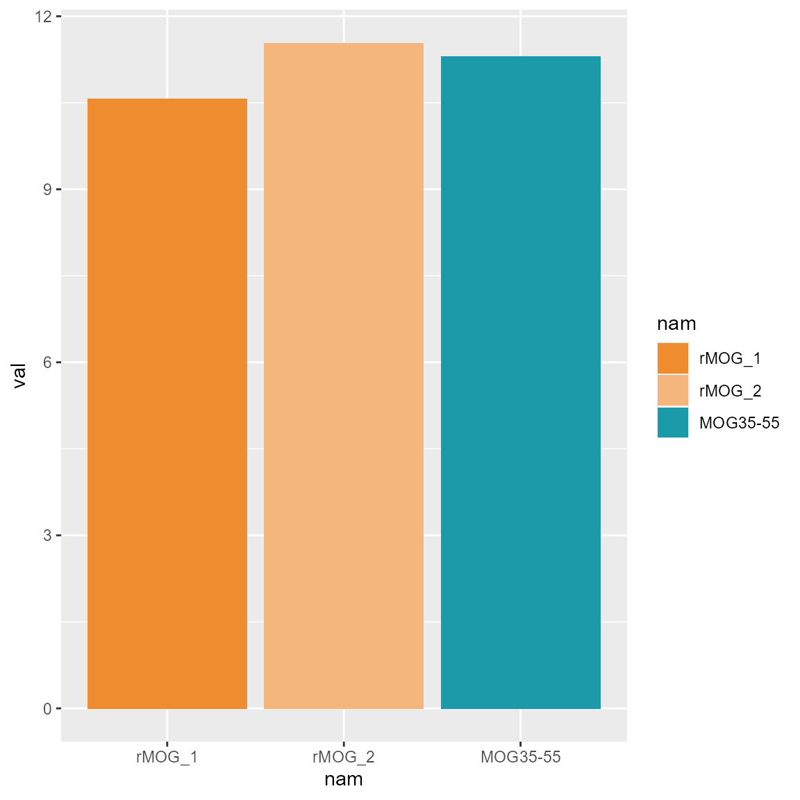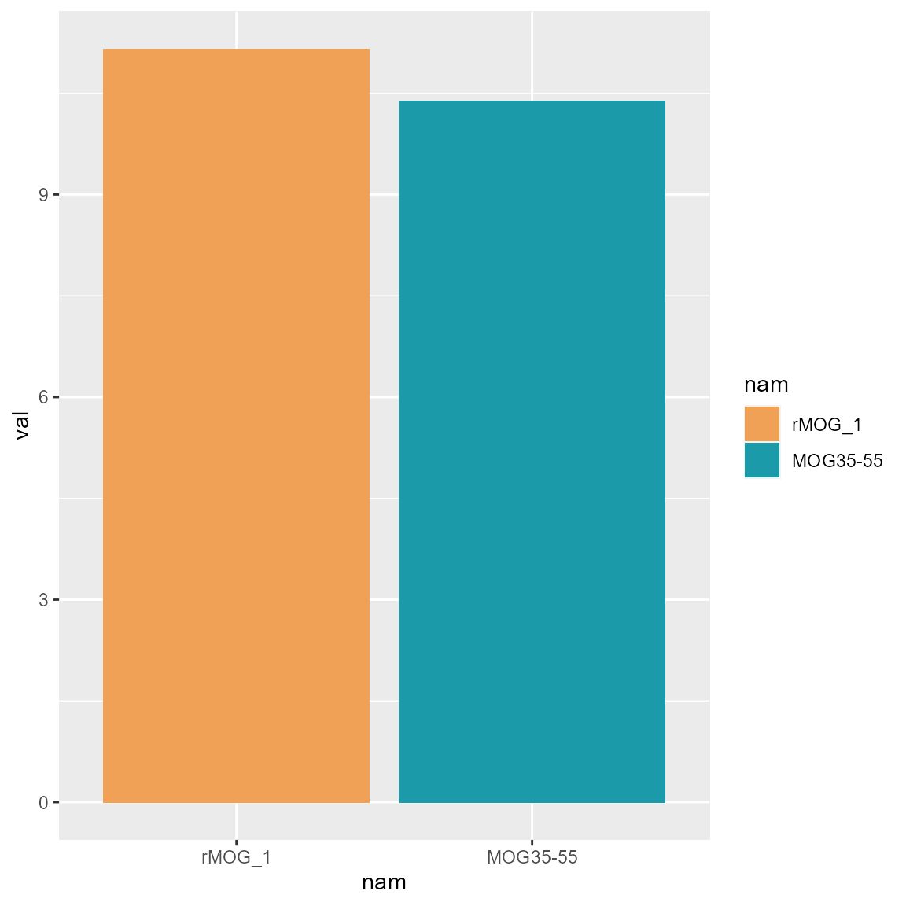
GEX overview
We first want an overview of all cells in this dataset and their expression of immune receptors. The dataset we are using for this vignette contains both B and T cells (included in the same 10x capture) - we therefore will integrate B cell VDJ info into the vgm_allgex object which already contains T cell VDJ info and use common Seurat plotting functions.
In the case that either only T cells or only B cells are present, this extra integration step would not be needed.
meta_allgex <- vgm_allgex[[2]]@meta.data #getting metadata of allgex object
meta_b <- vgm_b[[2]]@meta.data
for(i in 1:ncol(meta_allgex)){ #converting to character for safety
meta_allgex[,i] <- as.character(meta_allgex[,i])
meta_b[,i] <- as.character(meta_b[,i])
}
for(i in 1:nrow(meta_allgex)){ #Going through rows, if a cell barcode (rownames) matches one in the vgm of B cells, this information is copied over
if(rownames(meta_allgex)[i] %in% rownames(meta_b)){
meta_allgex[i,] <- meta_b[rownames(meta_b) == rownames(meta_allgex)[i],]
}
}
vgm_allgex[[2]]@meta.data <- meta_allgex #updating the metadata object
vgm_allgex[[2]]$sample_id <- ordered(as.factor(vgm_allgex[[2]]$sample_id), levels = short_replace_ids)
#Now we add a new column concerning AIR expression, for which we use the VGM celltype column
#By checking the first letter of the VJ_cgene, we make sure that only those cells are labeled for which we do have VDJ information
vgm_allgex[[2]]$AIR <- "VDJ not available"
vgm_allgex[[2]]$AIR[vgm_allgex[[2]]$celltype == "T cell" | substr(vgm_allgex[[2]]$VJ_cgene, 1,1) == "T"] <- "TCR"
vgm_allgex[[2]]$AIR[vgm_allgex[[2]]$celltype == "B cell" | substr(vgm_allgex[[2]]$VJ_cgene, 1,1) == "I"] <- "BCR"
vgm_allgex[[2]]$AIR <- ordered(as.factor(vgm_allgex[[2]]$AIR), levels = c("TCR", "BCR", "VDJ not available"))
#the shuffel = T paramerer in DimPlot is useful for all colored groups to be visible well. As of writing this, there are issues with this and setting split.by. This issue is reported on Github and expected to be fixed.
plot_out <- Seurat::DimPlot(vgm_allgex[[2]],reduction = "umap", group.by = "AIR", cols = c("brown4","dodgerblue4","grey80"), shuffle = T) + theme(axis.text.y = element_blank(), axis.ticks = element_blank(), legend.position = "top",plot.title =element_blank(),axis.line=element_line(size = 1),axis.text = element_blank(), legend.title = element_text(size = 14, face = "bold")) + labs(color = "AIR expression", x = "UMAP1", y = "UMAP2") + guides(color=guide_legend(nrow=1,byrow=TRUE, override.aes = list(size=4))) #adjusting legend rowcount and size of dots
plot_out
#ggsave(plot = plot_out , filename = "allgex_umap_AIR.svg", dpi = 700, width = 6, height = 6.5)
plot_out <- Seurat::DimPlot(vgm_allgex[[2]],reduction = "umap", group.by = "sample_id", cols = samples_color, shuffle = T, label = F, repel = T, label.size = 10) + theme( axis.ticks = element_blank(), legend.position = "right",plot.title =element_blank(),axis.line=element_line(size = 1),axis.text = element_blank(), legend.title = element_text(size = 14, face = "bold")) + labs(color = "Sample", x = "UMAP1", y = "UMAP2") +guides(color=guide_legend(override.aes = list(size=4)))
plot_out
#ggsave(plot = plot_out, filename = "allgex_umap_sample.svg", dpi = 700, width = 6.5, height = 5)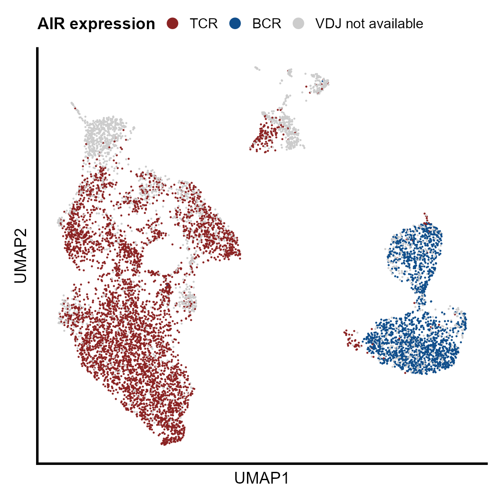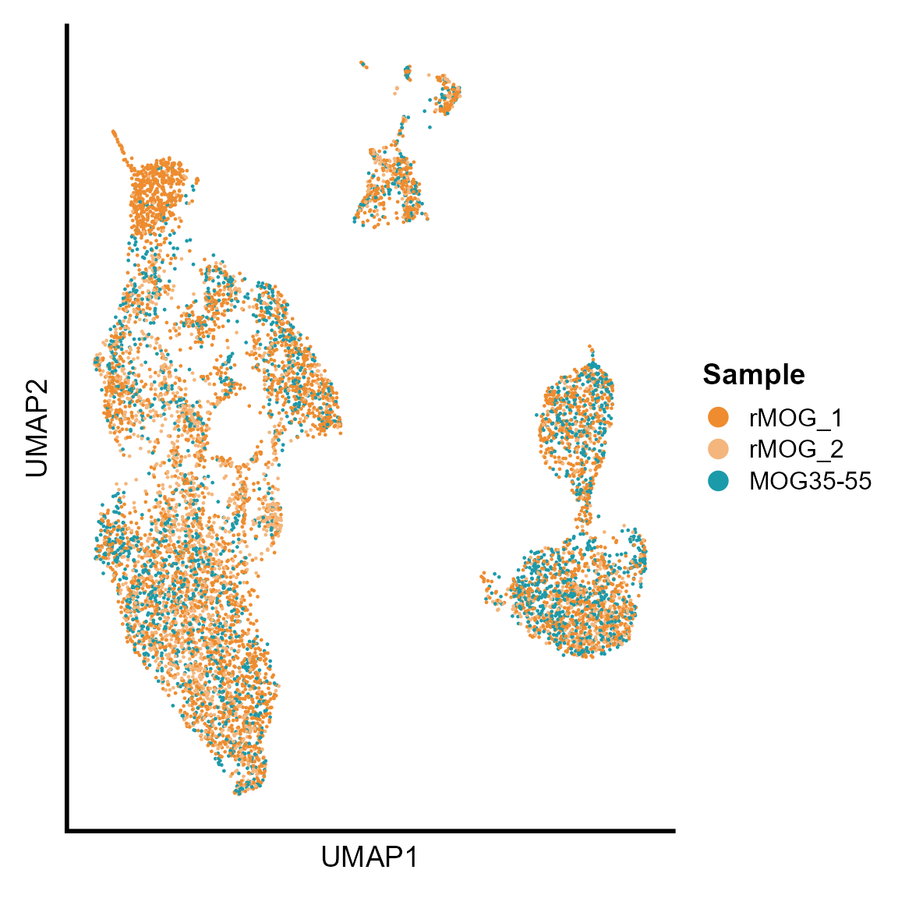
As part of the data overview, we can also explore metrics relating to sequencing quality
#set plot size for all for convenience
wdth <- 4.5
hght <- 6
#cells per sample
metadat <- vgm_allgex[[2]]@meta.data
metadat$sample_id <- ordered(as.factor(metadat$sample_id), levels = short_replace_ids)
metasum <- metadat %>% group_by(sample_id) %>% summarise(n = n())
metasum$sample_id <- ordered(as.factor(metasum$sample_id), levels = short_replace_ids)
plot_out <- ggplot(data = metasum, aes(x = sample_id, y = n, col = as.factor(sample_id), fill = as.factor(sample_id))) + geom_bar(show.legend = F, alpha = 1, stat = "identity", width = 0.6) + theme(panel.background = element_blank(),axis.text.x = element_text(angle = 30,vjust = 1, hjust=1, size = 24),axis.text.y = element_text(size = 24), axis.line.x = element_line(size = 2),axis.line.y = element_line(size = 2), axis.ticks = element_line(size = 2), axis.ticks.length = unit(0.3, "cm"), text = element_text(size=24), legend.position = "none",legend.direction = "vertical", plot.subtitle = element_text(size = 38), plot.title = element_blank()) + labs(title = "", x = "", y = "Recovered cell barcodes", subtitle = "") + scale_fill_manual(values = samples_color) + scale_color_manual(values = samples_color) + geom_text(aes(label = n), size = 11, vjust = -0.5, show.legend = F)+ scale_y_continuous(expand = c(0,0), limits = c(0,8600))
plot_out
#ggsave(plot_out, filename = "Cells_per_sample.svg", dpi = 600, width = wdth, height = hght)
#violin number of counts per cell
plot_out <- ggplot(data = metadat, aes(x = sample_id, y = as.numeric(nCount_RNA), col = as.factor(sample_id), fill = as.factor(sample_id))) + geom_violin(show.legend = F, alpha = 1) + geom_jitter(size = 0.8, alpha = 0.3, width = 0.2) + theme(panel.background = element_blank(),axis.text.x = element_text(angle = 30,vjust = 1, hjust=1, size = 24),axis.text.y = element_text(size = 24), axis.line.x = element_line(size = 2),axis.line.y = element_line(size = 2), axis.ticks = element_line(size = 2), axis.ticks.length = unit(0.3, "cm"), text = element_text(size=24), legend.position = "none",legend.direction = "vertical", plot.subtitle = element_text(size = 38), plot.title = element_blank()) + labs(title = "", x = "", y = "Countes per cell", subtitle = "") + scale_fill_manual(values = samples_color) + scale_color_manual(values = samples_color)
plot_out
#ggsave(plot_out, filename = "Counts_per_sample.svg", dpi = 600, width = wdth, height = hght)
#violin number of genes per cell
plot_out <- ggplot(data = metadat, aes(x = sample_id, y = as.numeric(nFeature_RNA), col = as.factor(sample_id), fill = as.factor(sample_id))) + geom_violin(show.legend = F, alpha = 1) + geom_jitter(size = 0.8, alpha = 0.3, width = 0.2) + theme(panel.background = element_blank(),axis.text.x = element_text(angle = 30,vjust = 1, hjust=1, size = 24),axis.text.y = element_text(size = 24), axis.line.x = element_line(size = 2),axis.line.y = element_line(size = 2), axis.ticks = element_line(size = 2), axis.ticks.length = unit(0.3, "cm"), text = element_text(size=24), legend.position = "none",legend.direction = "vertical", plot.subtitle = element_text(size = 38), plot.title = element_blank()) + labs(title = "", x = "", y = "Genes per cell", subtitle = "") + scale_fill_manual(values = samples_color) + scale_color_manual(values = samples_color)
plot_out
#ggsave(plot_out, filename = "genes_per_sample.svg", dpi = 600, width = wdth, height = hght)
#violin % mitochondira
plot_out <- ggplot(data = metadat, aes(x = sample_id, y = as.numeric(percent.mt), col = as.factor(sample_id), fill = as.factor(sample_id))) + geom_violin(show.legend = F, alpha = 1) + geom_jitter(size = 0.8, alpha = 0.3, width = 0.2) + theme(panel.background = element_blank(),axis.text.x = element_text(angle = 30,vjust = 1, hjust=1, size = 24),axis.text.y = element_text(size = 24), axis.line.x = element_line(size = 2),axis.line.y = element_line(size = 2), axis.ticks = element_line(size = 2), axis.ticks.length = unit(0.3, "cm"), text = element_text(size=24), legend.position = "none",legend.direction = "vertical", plot.subtitle = element_text(size = 38), plot.title = element_blank()) + labs(title = "", x = "", y = "% of MT genes reads", subtitle = "") + scale_fill_manual(values = samples_color) + scale_color_manual(values = samples_color)
plot_out
#ggsave(plot_out, filename = "MTreads_per_sample.svg", dpi = 600, width = wdth, height = hght)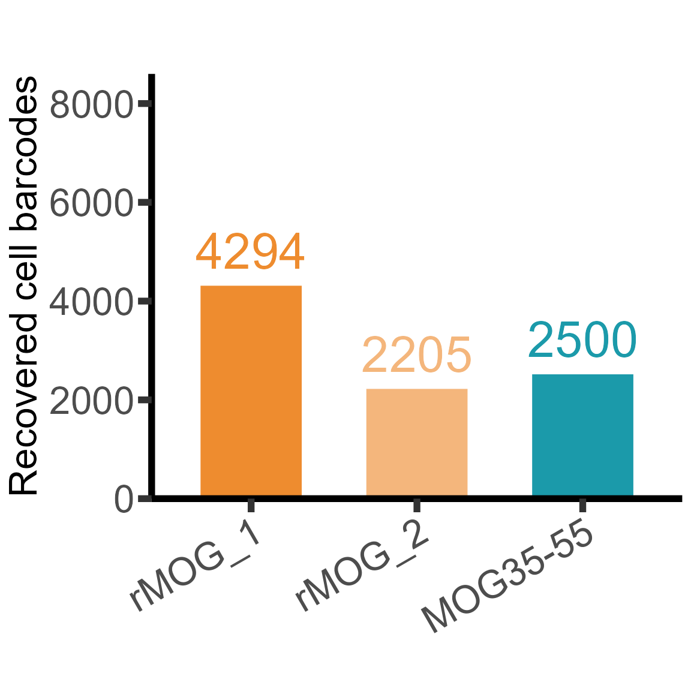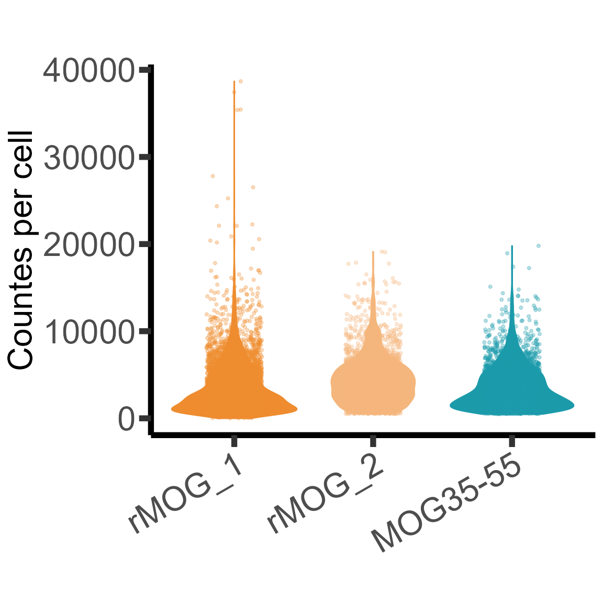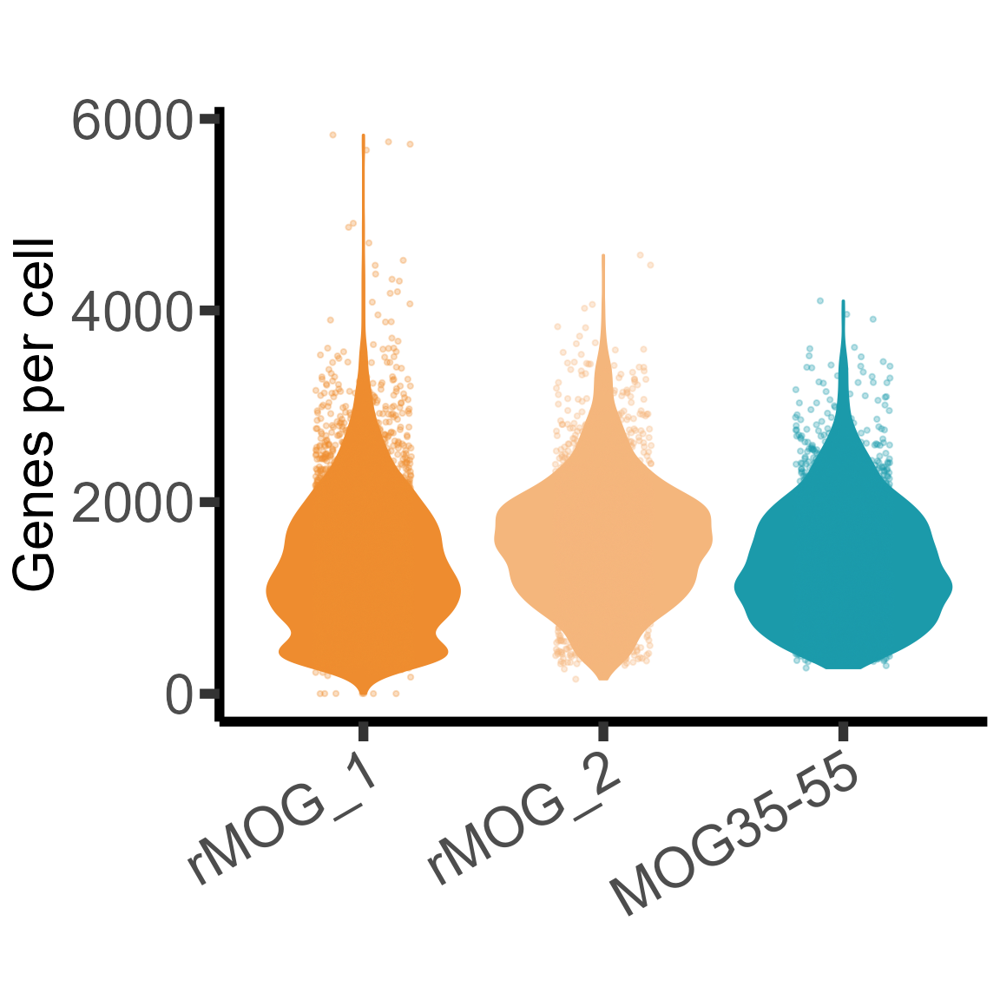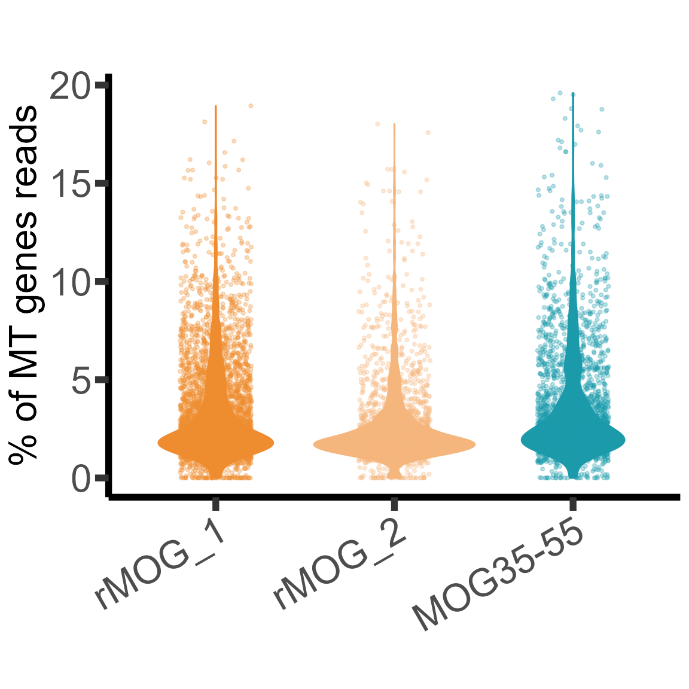
Exploring GEX of T cells by cluster
The following code explores the transcriptional phenotypes of T cells in this dataset. We will start with some overview UMAPs and work towards cluster classification
#By sample
Seurat::DimPlot(vgm_t[[2]],reduction = "umap", group.by = "sample_id", cols = samples_color, shuffle = T) + theme( axis.ticks = element_blank(), legend.position = "right",plot.title =element_blank(),axis.line=element_line(size = 1),axis.text = element_blank(), legend.title = element_text(size = 14, face = "bold")) + labs(color = "Sample", x = "UMAP1", y = "UMAP2")
#ggsave(plot = last_plot(), filename = "Tcs_umap_sample.svg", dpi = 700, width = 6.5, height = 5)
#By group
Seurat::DimPlot(vgm_t[[2]],reduction = "umap", group.by = "group_id", cols = groups_color, shuffle = T) + theme( axis.ticks = element_blank(), legend.position = "right",plot.title =element_blank(),axis.line=element_line(size = 1),axis.text = element_blank(), legend.title = element_text(size = 14, face = "bold")) + labs(color = "Sample", x = "UMAP1", y = "UMAP2")
#ggsave(plot = last_plot(), filename = "Tcs_umap_group.svg", dpi = 700, width = 6.5, height = 5)
#By cluster
library(pals) #the pals package offers some great varities of palettes, especially for applications were rColorBrewer palettes contain too few distinct colors
Seurat::DimPlot(vgm_t[[2]],reduction = "umap", group.by = "seurat_clusters", cols = pals::kelly(n = 17)[c(2,3,17,7:13,6,16)], shuffle = T) + theme( axis.ticks = element_blank(), legend.position = "right",plot.title =element_blank(),axis.line=element_line(size = 1),axis.text = element_blank(), legend.title = element_text(size = 14, face = "bold")) + labs(color = "Cluster", x = "UMAP1", y = "UMAP2")
#ggsave(plot = last_plot(), filename = "Tcs_umap_clusters.svg", dpi = 700, width = 6.5, height = 5)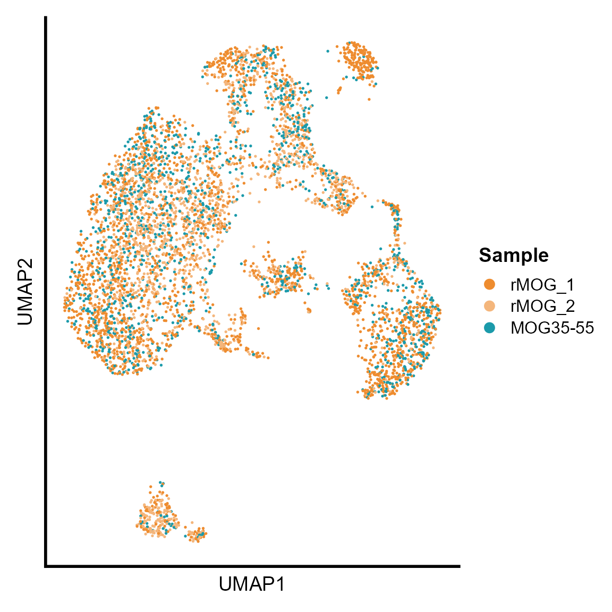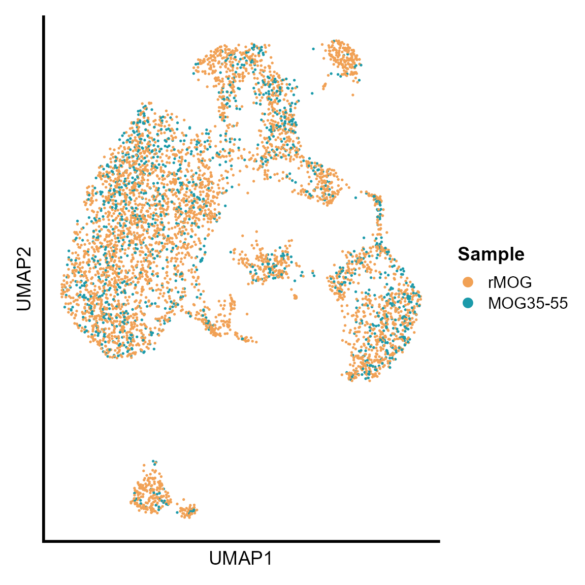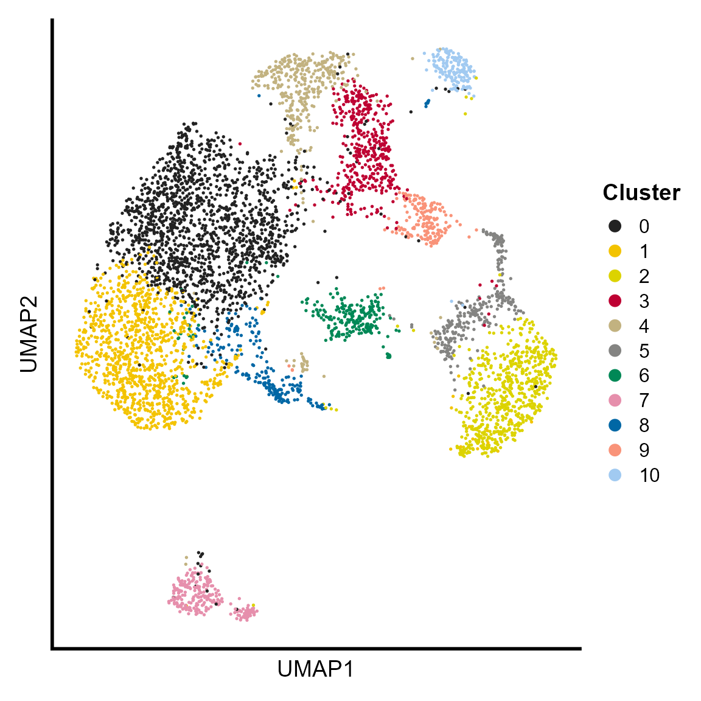
We see clear overlap between samples. Almost all clusters are composed of cells of all samples and groups. We can visualize proportions using stacked barplots.
cl_members <- GEX_proportions_barplot(GEX = vgm_t[[2]],source.group = "sample_id", target.group = "seurat_clusters", stacked.plot = T)+ scale_fill_manual(values = samples_color, labels = short_replace_ids) + theme(panel.background = element_blank(),axis.text = element_text(size = 33), axis.line = element_line(size = 2), axis.ticks = element_line(size = 2), axis.ticks.length = unit(0.25, "cm"), text = element_text(size=33), legend.key = element_rect(colour = "grey"), legend.position = "bottom", plot.title = element_blank(), legend.title = element_text(size = 30, face = "bold")) + labs(title = "", x = "", y = "% of cells of cluster", fill = "Sample") + scale_y_continuous(expand = c(0,0))## [1] "Ordering based on existing source group factor levels"
## [1] rMOG_1 rMOG_1 rMOG_1 rMOG_1 rMOG_1 rMOG_1 rMOG_1 rMOG_1
## [9] rMOG_1 rMOG_1 rMOG_1 rMOG_2 rMOG_2 rMOG_2 rMOG_2 rMOG_2
## [17] rMOG_2 rMOG_2 rMOG_2 rMOG_2 rMOG_2 rMOG_2 MOG35-55 MOG35-55
## [25] MOG35-55 MOG35-55 MOG35-55 MOG35-55 MOG35-55 MOG35-55 MOG35-55 MOG35-55
## [33] MOG35-55
## Levels: rMOG_1 < rMOG_2 < MOG35-55
## [1] "Ordering based on existing target group factor levels"
## [1] "Returning stacked barplot with y axis = % of cells of target group"## Scale for 'y' is already present. Adding another scale for 'y', which will
## replace the existing scale.
cl_members
#ggsave(last_plot(), filename = "Tc_cluster_membership_sample_new.svg", dpi = 400, width = 10, height = 8)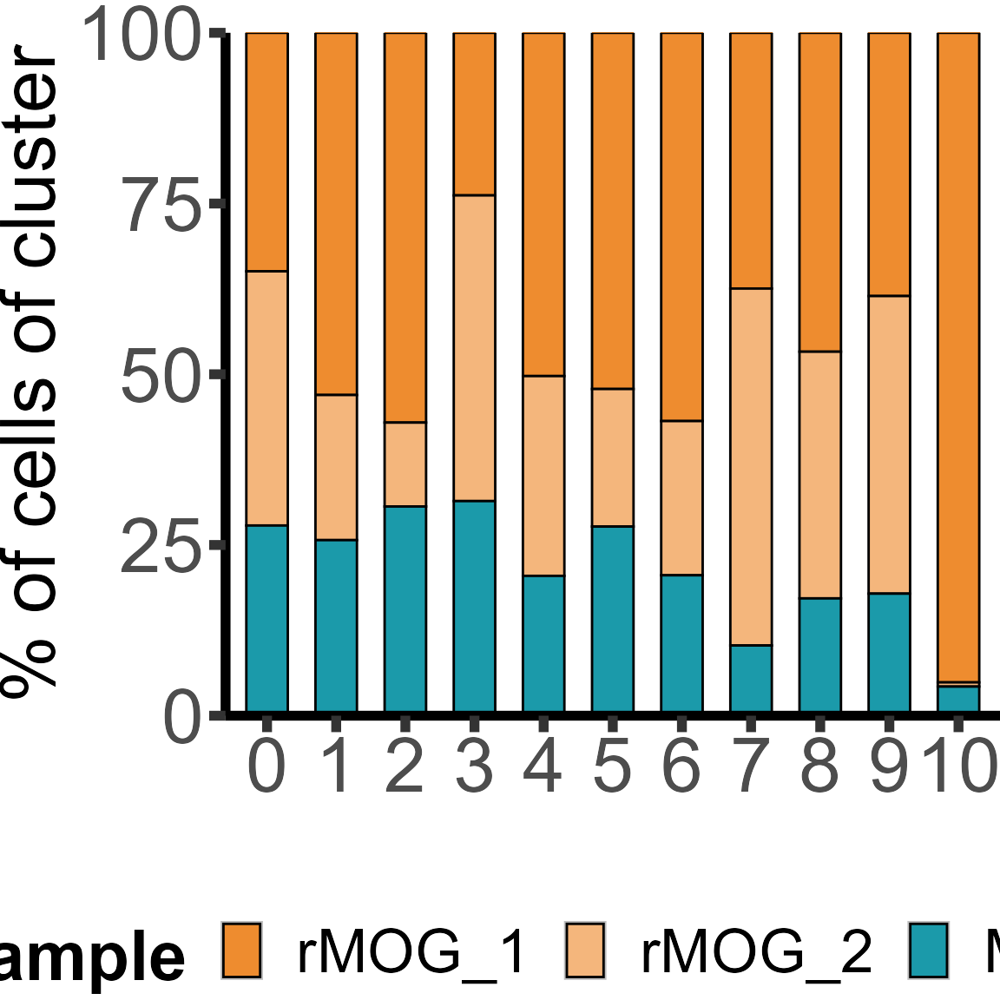
Now we can start investigating what the clusters actually represent: Step 1: Project common markers to get a basic idea
library(scales)
FeaturePlot(vgm_t[[2]], features = c("CD3G","CD4","CD8A","FOXP3"), reduction = "umap", label = F, repel = F, pt.size = 1.3) & theme(axis.text.y = element_blank(),axis.text.x = element_blank(),axis.line=element_line(size = 1),axis.ticks = element_blank(), legend.position = c(0.5,0.1), legend.direction = "horizontal", axis.title = element_text(), plot.title = element_text(size = 27, face = "bold")) & labs(x = "UMAP1", y = "UMAP2") & scale_color_gradient2(low = "grey80", mid = "grey80", high = "#DD513AFF", oob = squish_infinite) #We position the legend inside the plot using legend.position, to save some space. Further we use the "squish_infinite" function of the scales package to easily reppresent outlier values without compromising overall color scales. ## Scale for 'colour' is already present. Adding another scale for 'colour',
## which will replace the existing scale.
## Scale for 'colour' is already present. Adding another scale for 'colour',
## which will replace the existing scale.
## Scale for 'colour' is already present. Adding another scale for 'colour',
## which will replace the existing scale.
## Scale for 'colour' is already present. Adding another scale for 'colour',
## which will replace the existing scale.
#ggsave(plot = last_plot(), filename = "Tcs_umap_Tcell_basic.svg", dpi = 400, width = 10, height = 10)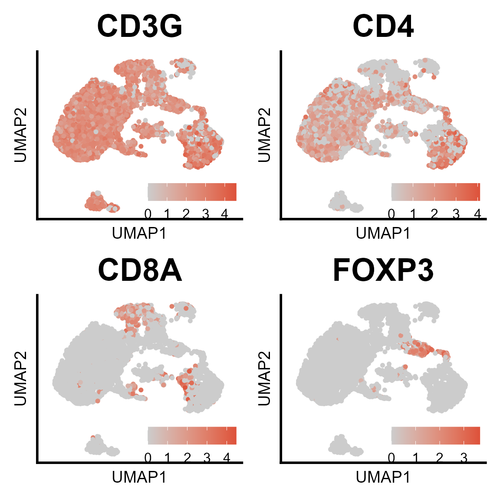
For a more in depth look at marker expression, we use the dottile function.
#Check what genes are available with this searchable dataframe view (at least in R studio)
#View(as.data.frame(rownames(vgm_t)))
genes_to_plot <- c("CD4","CD8A","CD28","ICOS","CD40LG","CTLA4","PDCD1","LAG3","S1PR1","PTPRC","SELL","TBX21","GATA3","SPI1","IRF4","BCL6","STAT4","STAT6","FOXP3","IKZF2", "MKI67","TCF7","TOX", "GZMB","TNF","IFNG","TGFB1","IL10","IL17A","CSF2","IL2RA","IL4RA","IL12RB1","CXCR3","CCR5","CCR8", "SOX4","RORA","RORC","RUNX3","HIF1A")
linesh <- c(1:length(genes_to_plot)) + 0.5 #these lines are for easier viewing of the plot
plot_out <- GEX_dottile_plot(GEX = vgm_t[[2]], genes = genes_to_plot, group.by = "seurat_clusters", threshold.to.plot = 3) + labs(size = "% positive", color = "Expression", x = "Cluster") + theme(plot.title = element_blank(), axis.title.x = element_text(), axis.text.x = element_text(size = 29, angle = 0, hjust = 0.5,vjust = 0.5)) +scale_size_binned(range = c(0.01,12)) + geom_hline(yintercept = linesh, col = "black", size = 0.9)+ scale_color_viridis_c(option = "B", end = 0.85) #we end the viridis palette at .85 specifically, to avoid bright yellow spots that can be hard to view when printed## Scale for 'size' is already present. Adding another scale for 'size', which
## will replace the existing scale.## Scale for 'colour' is already present. Adding another scale for 'colour',
## which will replace the existing scale.
#For vignette
plot_out + theme(legend.position= "none")## Warning: Removed 93 rows containing missing values (geom_point).
#ggsave(plot = plot_out, filename = "Tc_dottile.svg", dpi = 400, width = 10, height = 15)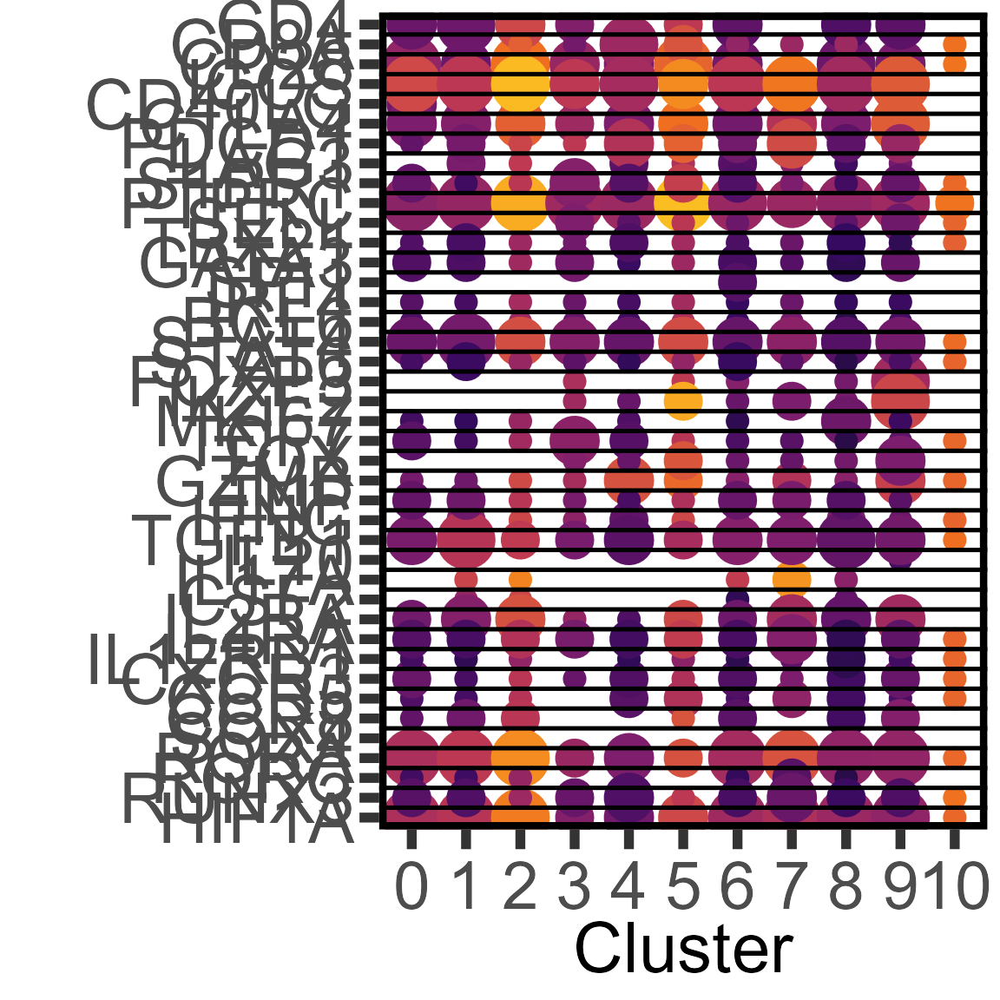
We can now find cluster specific genes by DEG analysis. Here we use the GEX_cluster_genes to find genes that are deferentially expressed in one cluster relative to all other cells. This function is based on the Seurat::FindAllMarkers function but allows the user to filter out mitochondrial and ribosomal proteins from the list and can further be used as input to other plotting functions.
## Warning: running this function will take a while
#gene_expression_cluster <- GEX_cluster_genes(vgm_t[[2]],min.pct = 0.25)
#saveRDS(gene_expression_cluster, file = "Tcs_gene_expression_clusters.rds")
gene_expression_cluster <- readRDS("C:/Dokumente usw/Master/Reddy Lab/1_thesis/3_code/4_DB project/EAE website vignette/Tcs_gene_expression_clusters.rds")
#Recommended to get an overview of the output format
names(gene_expression_cluster[[1]])## [1] "p_val" "avg_logFC" "pct.1" "pct.2" "p_val_adj" "SYMBOL"
## [7] "cluster"
#View(gene_expression_cluster[[1]])We can visualize these cluster defining genes both as a heatmap, a dotmap, and as volcano plots
#heatmap
EAE_heatmap_clusters <- GEX_cluster_genes_heatmap(GEX = vgm_t[[2]], GEX_cluster_genes.output = gene_expression_cluster, n.genes.per.cluster = 5,max.cell = 30, metric = "top_logFC", group.colors = kelly(n = 17)[c(2,3,17,7:13,6,16)]) + scale_fill_gradientn(colors = c("white","grey80","darkorchid3"), oob = squish_infinite) + theme(axis.text.y = element_text(size = 13),axis.text.x = element_blank(), legend.position = "none") #here we picked top genes by P value. We recommend to also check top genes by p value for consistency## Scale for 'fill' is already present. Adding another scale for 'fill', which
## will replace the existing scale.
EAE_heatmap_clusters
#ggsave(plot = last_plot(), filename = "Tc_cluster_heatmap_top5_logFC.svg", dpi = 400, width = 10, height = 10)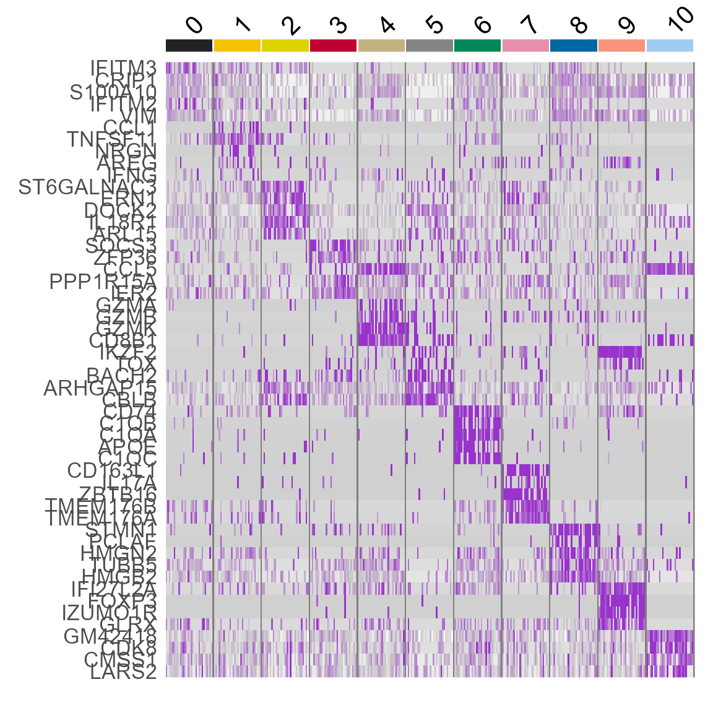
The dottile function can be run directly from the gene selection that made by the heatmap function
cldef <- EAE_heatmap_clusters$data #getting the source data table of the heatmap from above
length(unique(cldef$Feature)) #how many genes were selected## [1] 52
genes_to_plot <- as.character((unique(cldef$Feature)))
lines <- c(seq(0,58,5)) + 0.5
plot_out <- GEX_dottile_plot(GEX = vgm_t[[2]], genes = rev(genes_to_plot), group.by = "seurat_clusters", threshold.to.plot = 3) + labs(size = "% positive", color = "Expression", x = "Cluster") + theme(plot.title = element_blank(), axis.title.x = element_text(), axis.text.x = element_text(size = 29, angle = 0, hjust = 0.5,vjust = 0.5)) +scale_size_binned(range = c(0.01,12)) + geom_hline(yintercept = lines, col = "black", size = 0.9) + guides(color = guide_legend(reverse=T))+ scale_color_viridis_c(option = "B", end = 0.85)## Scale for 'size' is already present. Adding another scale for 'size', which
## will replace the existing scale.## Scale for 'colour' is already present. Adding another scale for 'colour',
## which will replace the existing scale.
#For vignette
plot_out + theme(legend.position= "none")## Warning: Removed 100 rows containing missing values (geom_point).
#ggsave(plot = plot_out, filename = "Tc_cluster_dottile_top5_logFC.svg", dpi = 400, width = 10, height = 22)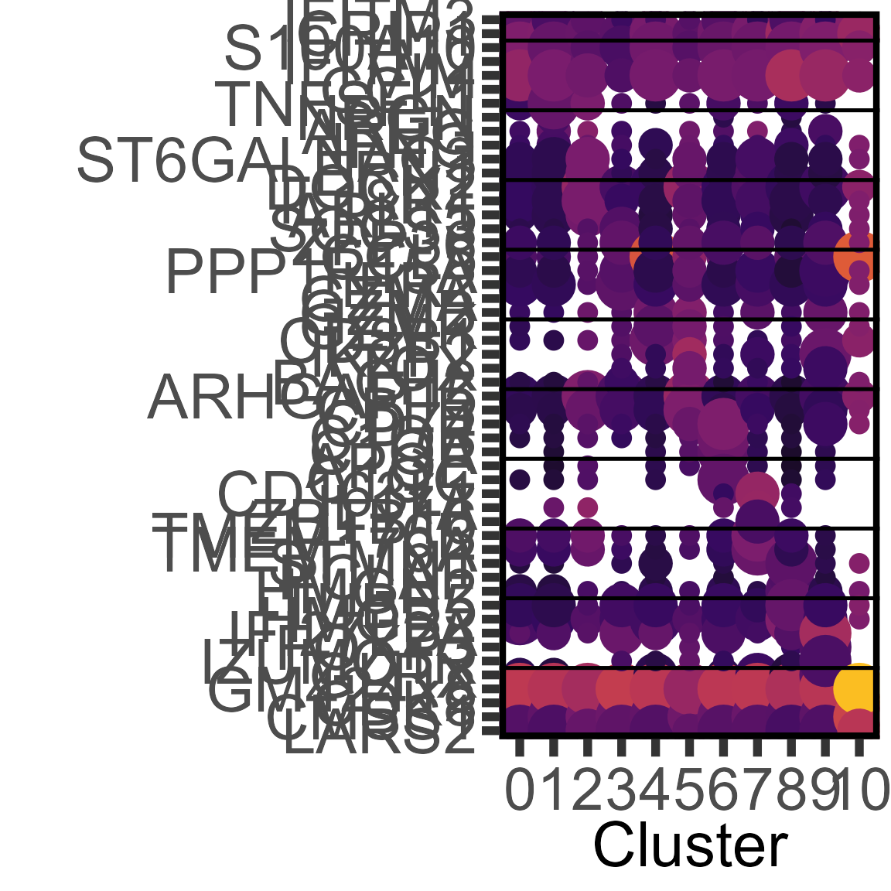
And some more DEG analysis between clusters: What are differences between cluster 0 and 1.
library(ggrepel)
#Here we return a volcano plot where the top 40 genes are labelled by geom_text_repel. Further the genes CD28 and ICOS are labelled independently of their p.value
plot_out <- GEX_DEgenes(GEX = vgm_t[[2]], grouping.column = "seurat_clusters", group1 = "0", group2 = "1", return.plot = "volcano", logFC = FALSE, label.n.top.genes = 40, genes.to.label = c("CD28", "ICOS"))
#plot_out[[1]] #For source table
plot_out[[2]] #For plotWith additional ggplot coding we can produce summary volcano plots with the defining genes of each cluster. We use the gtable package to recolor the facet wrap bars to match cluster colors
#extracting top 15 genes per cluster by fold change
top_genes_per_cluster <- GEX_topN_DE_genes_per_cluster(GEX_cluster_genes.output = gene_expression_cluster, n.genes = 15, by_FC = T)
#for the later recoloring of bars in the facet wrap plot, we need an even number of facets in the plot i.e. clusters
#Here we add an empty one to match this
extr_cluster <- subset(top_genes_per_cluster, cluster == "0")
extr_cluster$SYMBOL <- "none"
extr_cluster$cluster <- 11
top_genes_per_cluster <- rbind(top_genes_per_cluster, extr_cluster)
#Some of these genes have an adj p value of 0, which results in strange positions when plotting. Here we set them to an low but non-0 value
top_genes_per_cluster$p_val_adj[top_genes_per_cluster$p_val_adj == 0] <- 1e-299
#generating a large facet plot
plot_out <- ggplot(top_genes_per_cluster, aes(x = avg_logFC, y = pct.1*100, col = -log10(p_val_adj))) + geom_point(show.legend = T, size = 3, alpha = 1) + theme(panel.background = element_blank(), axis.title = element_text(size = 30),axis.text = element_text(size = 21),plot.title = element_blank(), axis.line = element_line(size = 2), strip.text = element_text(size = 30), axis.ticks = element_line(color = "black", size = 2), axis.ticks.length = unit(0.25,"cm"), legend.key = element_rect(colour = "white"), legend.key.width = unit(1.2, "cm"), strip.background = element_rect(colour = "white", fill = "white"), strip.text.x = element_text(color = "white", face = "bold"), legend.position = "top", legend.direction = "horizontal", legend.title = element_text(size = 28, face = "bold"), legend.text = element_text(size = 21)) + labs(x = "log2(FC)", y = "% of expressing cells in cluster", col = "-log10(adj p value)") + geom_text_repel(aes(label = SYMBOL), size = 6, nudge_x = 0, nudge_y = 0, segment.alpha = 1, max.overlaps = 14) +scale_color_viridis_c(option = "B", end = 0.85) + facet_wrap(~cluster,ncol = 6,scales = "free") + geom_vline(xintercept = 0, linetype = 2, size = 1.5, alpha = 0.6)
#recoloring the facet bars (code snippet from Stackoverflow) !!! For this to work, the facet wrap must contain only full rows (i.e. in this case with two rows, plot numbers must be even) !!!
library(gtable)
cols <- c(pals::kelly(n = 17)[c(10,11,12,13,6,16,2,3,17,7,8,9)]) #colors
g <- ggplot_gtable(ggplot_build(plot_out))
stripr <- which(grepl('strip', g$layout$name))
stripr## [1] 62 63 64 65 66 67 68 69 70 71 72 73
fills <- cols
k <- 1
for (i in stripr) {
j <- which(grepl('rect', g$grobs[[i]]$grobs[[1]]$childrenOrder))
g$grobs[[i]]$grobs[[1]]$children[[j]]$gp$fill <- fills[k]
k <- k+1
}
plot(g) ## Warning: ggrepel: 10 unlabeled data points (too many overlaps). Consider
## increasing max.overlaps## Warning: ggrepel: 8 unlabeled data points (too many overlaps). Consider
## increasing max.overlaps## Warning: ggrepel: 3 unlabeled data points (too many overlaps). Consider
## increasing max.overlaps## Warning: ggrepel: 1 unlabeled data points (too many overlaps). Consider
## increasing max.overlaps## Warning: ggrepel: 10 unlabeled data points (too many overlaps). Consider
## increasing max.overlaps
## Warning: ggrepel: 10 unlabeled data points (too many overlaps). Consider
## increasing max.overlaps
#ggsave(g, filename = "Tcs_degbycluster_wrap.svg", dpi = 700, width = 24, height = 14.5)
g <- NULL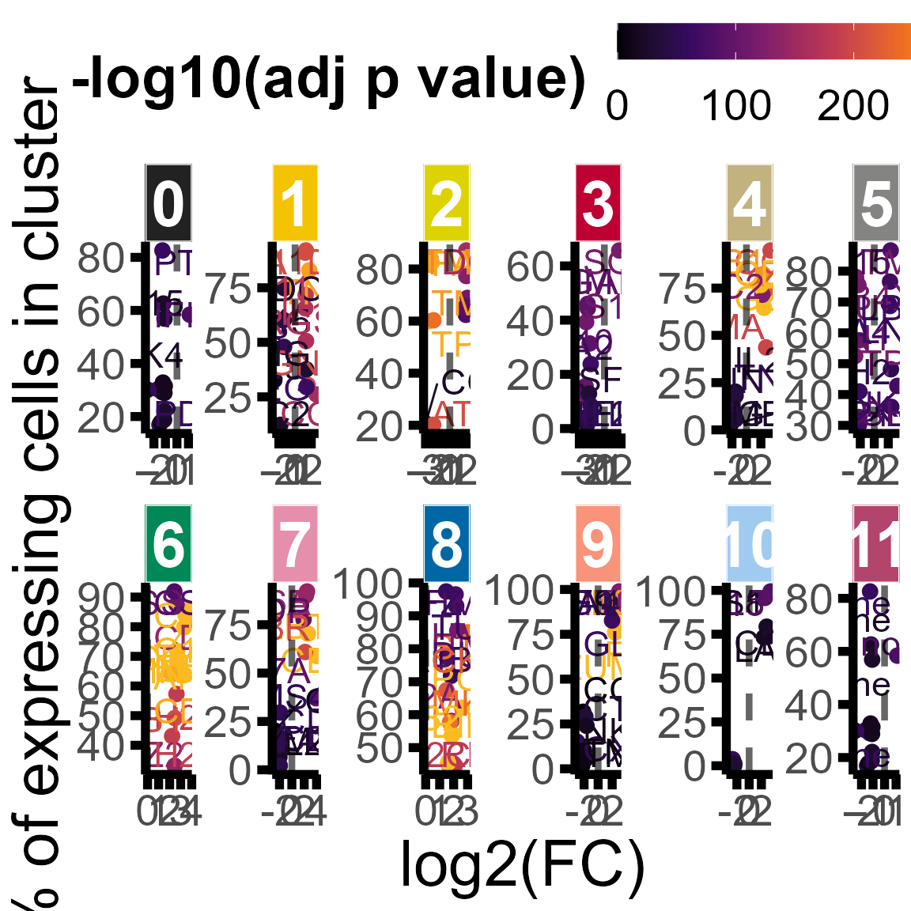
Now to examine coexpression of selected genes across different populations of T cells:
#Cluster 0 => show association of active memory leaning phenotype with Tgfb1 expression
genes_to_plot <- c("CD4","CD28","S1PR1","PTPRC","IL2RA","TBX21","GATA3","STAT4","TCF7","NKG7","TGFB1","IFNG")
cur_c <- subset(vgm_t[[2]], seurat_clusters == "0")
plot_out <- GEX_coexpression_coefficient(GEX = cur_c, genes = genes_to_plot, subsample.n = "none") + theme( axis.title.x = element_text(), legend.position = "right") +scale_size_binned(range = c(0.01,18)) +scale_color_viridis_c(option = "B", end = 0.85) + labs(color = "% double \n positive", size = "% positive", title = "Cluster 0")## [1] "Calculating coexpression for 12 genes with 1612 cells"## Scale for 'size' is already present. Adding another scale for 'size', which
## will replace the existing scale.## Scale for 'colour' is already present. Adding another scale for 'colour',
## which will replace the existing scale.
plot_out
#ggsave(plot_out, filename = paste0("Tcs_selected_coex_cluster_0.svg"), dpi = 400, width = 10.7, height = 9)
#Cluster 8 Examine FOXP3 Tregs
genes_to_plot <- c("CD4","CD28","PTPRC","CTLA4","IL2RA","FOXP3","TOX","IKZF2","GZMB","IL10","TGFB1","IFNG")
cur_c <- subset(vgm_t[[2]], seurat_clusters == "8")
plot_out <- GEX_coexpression_coefficient(GEX = cur_c, genes = genes_to_plot, subsample.n = "none") + theme(axis.title.x = element_text(), legend.position = "right") +scale_size_binned(range = c(0.01,18), n.breaks = 4) +scale_color_viridis_c(option = "B", end = 0.85) + labs(color = "% double \n positive", size = "% positive", title = "Cluster 8")## [1] "Calculating coexpression for 12 genes with 227 cells"## Scale for 'size' is already present. Adding another scale for 'size', which
## will replace the existing scale.
## Scale for 'colour' is already present. Adding another scale for 'colour',
## which will replace the existing scale.
plot_out
#ggsave(plot_out, filename = paste0("Tcs_selected_coex_cluster_8.svg"), dpi = 400, width = 10.7, height = 9) 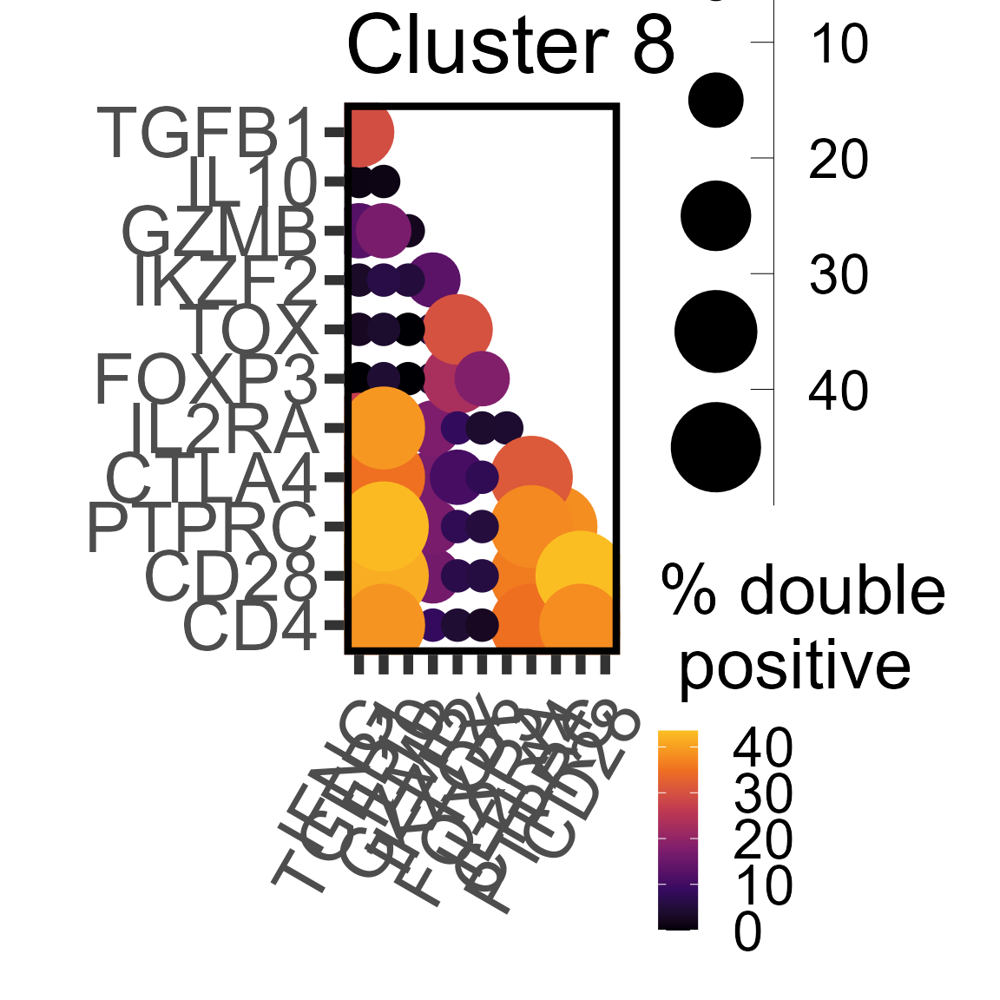
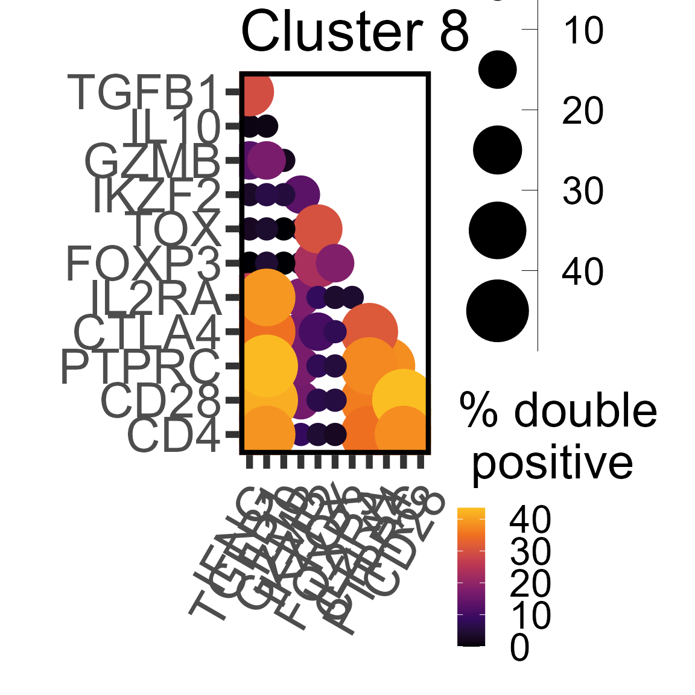
We also explore coexpression for specifc gene pairs
#FIRST CD40LG vs. BCL6 to examine the presence of Tfh cells
plot_out <- GEX_scatter_coexpression(GEX = vgm_t[[2]], gene.1 = "CD40LG", gene.2 = "BCL6", color.theme = "dodgerblue4")
#ggsave(plot = plot_out, filename = "Tc_scatter_CD40LGBCL6dp.svg", dpi = 400, width = 10, height = 10)
#Using the GEX_DE_genes function we can view the full transcriptional profile of such double positive cells
#add a column
vgm_t[[2]]$Tfh <- FALSE
tfh_markers <- FetchData(vgm_t[[2]], vars = c("CD40LG", "BCL6"))
vgm_t[[2]]$Tfh[tfh_markers$CD40LG > 0 & tfh_markers$BCL6 > 0] <- TRUE
plot_out <- GEX_DEgenes(GEX = vgm_t[[2]], grouping.column = "Tfh", group1 = "TRUE", group2 = "FALSE", return.plot = "volcano", logFC = FALSE, label.n.top.genes = 15, genes.to.label = c("CD28", "ICOS"))
plot_out[[2]]
#Also validating IFNG & TGFB1 coexpression
plot_out <- GEX_scatter_coexpression(GEX = vgm_t[[2]], gene.1 = "IFNG", gene.2 = "TGFB1", color.theme = "dodgerblue4")
#ggsave(plot = plot_out, filename = "Tc_scatter_IFNGTGFB1dp.svg", dpi = 400, width = 10, height = 10)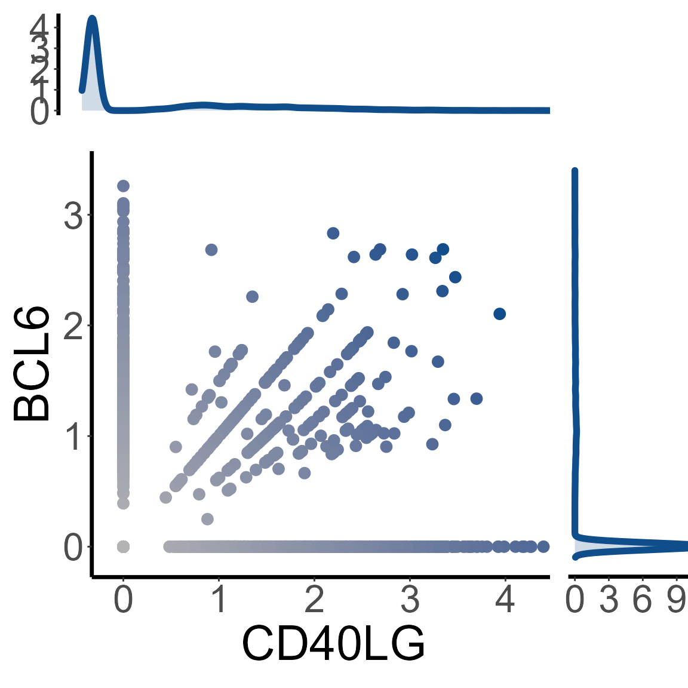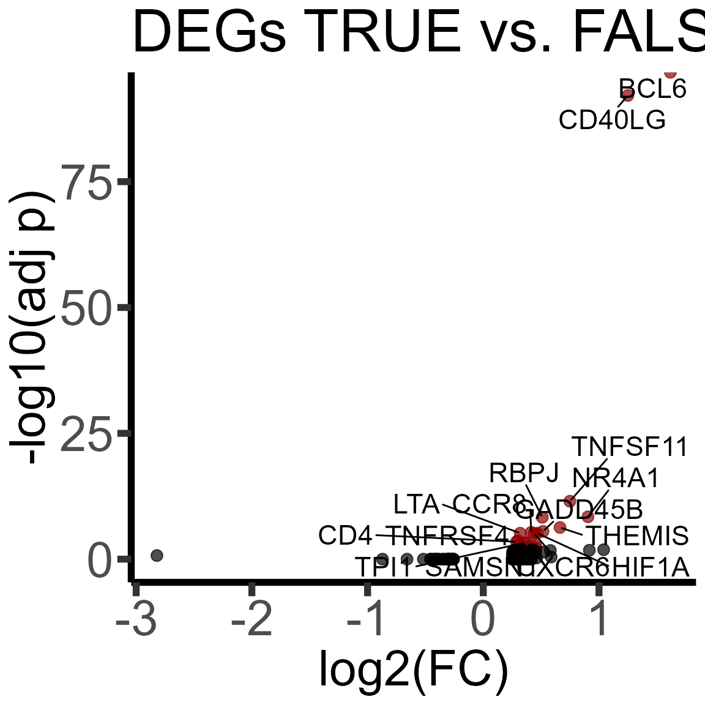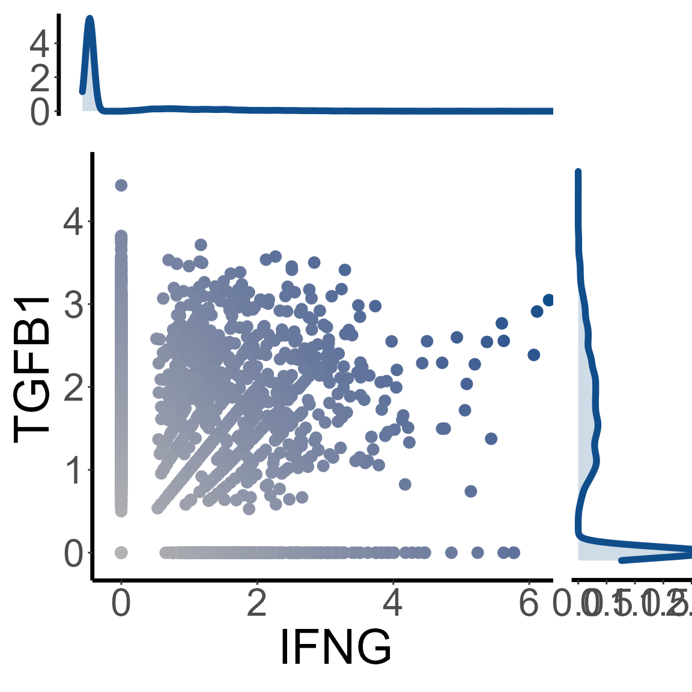
Comparing GEX of T cells by group
A key goal of this study is the comparison between T cells in EAE initiated by two different autoantigens: rMOG and MOG35-55 Here we explicitly compare the T cells from the two conditions.
#first a membership barplot to check if T cells from either immunizations cluster differently
cl_members <- GEX_proportions_barplot(GEX = vgm_t[[2]],source.group = "group_id", target.group = "seurat_clusters", stacked.plot = T)+ scale_fill_manual(values = groups_color, labels = c("rMOG","MOG35-55")) + theme(panel.background = element_blank(),axis.text = element_text(size = 33), axis.line = element_line(size = 2), axis.ticks = element_line(size = 2), axis.ticks.length = unit(0.25, "cm"), text = element_text(size=33), legend.key = element_rect(colour = "grey"), legend.position = "bottom", plot.title = element_blank(), legend.title = element_text(size = 30, face = "bold")) + labs(title = "", x = "", y = "% of cells of cluster", fill = "Sample") + scale_y_continuous(expand = c(0,0))## [1] "Ordering based on existing source group factor levels"
## [1] rMOG rMOG rMOG rMOG rMOG rMOG rMOG rMOG
## [9] rMOG rMOG rMOG MOG35-55 MOG35-55 MOG35-55 MOG35-55 MOG35-55
## [17] MOG35-55 MOG35-55 MOG35-55 MOG35-55 MOG35-55 MOG35-55
## Levels: rMOG < MOG35-55
## [1] "Ordering based on existing target group factor levels"
## [1] "Returning stacked barplot with y axis = % of cells of target group"## Scale for 'y' is already present. Adding another scale for 'y', which will
## replace the existing scale.
cl_members
#ggsave(last_plot(), filename = "Tc_cluster_membership_group.svg", dpi = 400, width = 10, height = 8)
#Get DEGs
exp_DEGs <- GEX_DEgenes(GEX = vgm_t[[2]], min.pct = 0.25, grouping.column = "group_id", group1 = "rMOG", group2 = "MOG35-55", return.plot = "none", logFC = F) #here we separate the function call from the ggplot for more flexibility. output[[1]] of the GEX_DEgenes is a dataframe with DEGs
plot_out <- ggplot(exp_DEGs[[1]], aes(x = avg_logFC, y = -log10(p_val_adj), col = avg_logFC)) + geom_point(show.legend = F, size = 4, alpha = 1) + theme(panel.background = element_blank(),axis.text = element_text(size = 30), axis.line = element_line(size = 2), axis.ticks = element_line(size = 2, color = "black"), axis.ticks.length = unit(0.25, "cm"), text = element_text(size=30), legend.key = element_rect(colour = "grey"),legend.key.height = NULL,legend.key.width = NULL, legend.position = "none") + labs(x = "log2(avg FC)", y = "-log10(adj p)",title = "rMOG vs. MOG33-55") + geom_text_repel(data = subset(exp_DEGs[[1]], p_val_adj < 0.00001), aes(x = avg_logFC, y = -log10(p_val_adj), label = SYMBOL, col = avg_logFC), inherit.aes = F, size = 7, segment.alpha = 1, max.overlaps = 20)+scale_color_gradient2(low = samples_color[3], mid = "grey60", high = samples_color[1], midpoint = 0)
plot_out## Warning: ggrepel: 3 unlabeled data points (too many overlaps). Consider
## increasing max.overlaps
#ggsave(plot_out, filename = "Tc_volc_bygroup.svg", dpi = 400, width = 13, height = 11)
#DEGs after p correction
length(exp_DEGs[[1]]$p_val_adj[exp_DEGs[[1]]$p_val_adj < 0.05])## [1] 57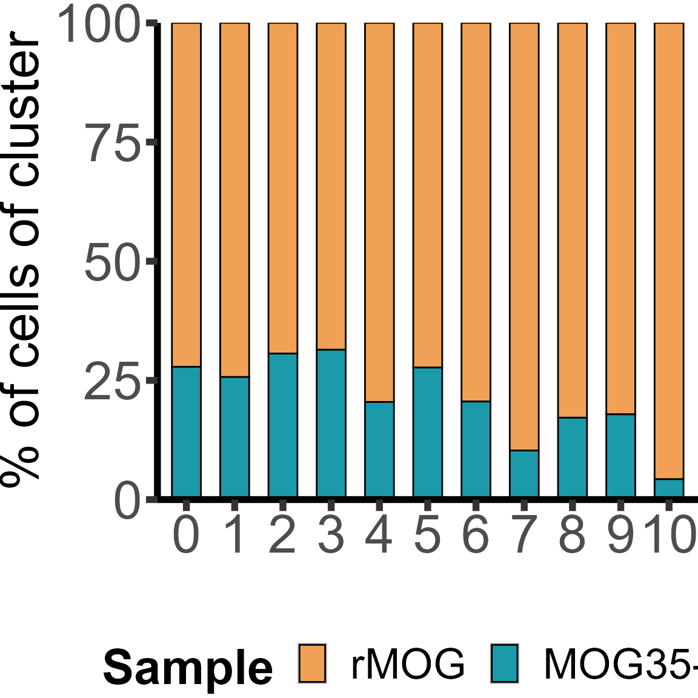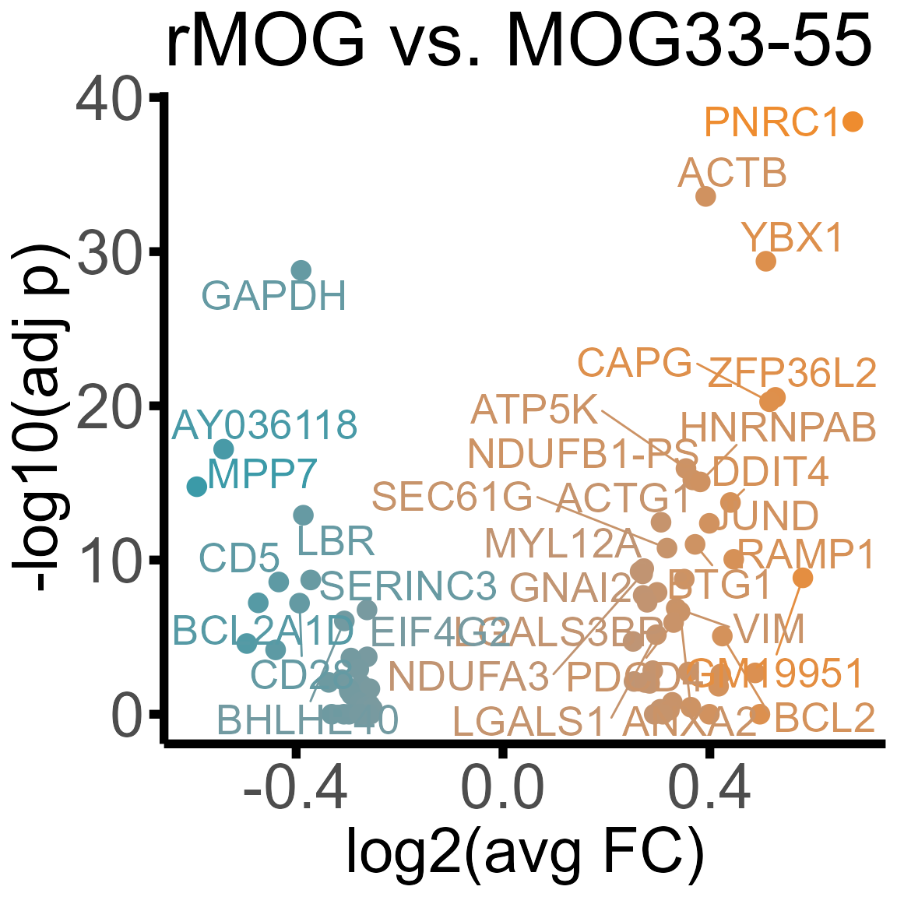
For some more insight into these genes we run Gene ontology analysis This outputs plots as PDFs, which are not displayed in this vignette
#ontology_EAE <- GEX_GOterm(GEX.cluster.genes.output = list(exp_DEGs[[1]]), topNgenes = 40, go.plots = T)Given that cluster 4 and 7 are almost exclusive to rMOG, we test whether the DEGs calculated above remain stable even if these two clusters are excluded
#Subsetting the GEX object
cells_to_keep <- colnames(vgm_t[[2]])[!vgm_t[[2]]$seurat_clusters %in% c(7,4)]
for_deg <- subset(vgm_t[[2]], cells = cells_to_keep) #subset using Seurat parameters
#plot umap to verify that exclusion was successfull
Seurat::DimPlot(for_deg,reduction = "umap", group.by = "seurat_clusters", cols = pals::kelly(n = 17)[c(2,3,17,7:13,6,16)], shuffle = T) + theme(axis.ticks = element_blank(), legend.position = "right",plot.title =element_blank(),axis.line=element_line(size = 1),axis.text = element_blank(), legend.title = element_text(size = 14, face = "bold")) + labs(color = "Cluster", x = "UMAP1", y = "UMAP2")
exp_DEGs <- GEX_DEgenes(GEX = for_deg, min.pct = 0.25, grouping.column = "group_id", group1 = "rMOG", group2 = "MOG35-55", return.plot = "none", logFC = F) #here we separate the function call from the ggplot for more flexibility. output[[1]] of the GEX_DEgenes is a dataframe with DEGs
plot_out <- ggplot(exp_DEGs[[1]], aes(x = avg_logFC, y = -log10(p_val_adj), col = avg_logFC)) + geom_point(show.legend = F, size = 4, alpha = 1) + theme(panel.background = element_blank(),axis.text = element_text(size = 30), axis.line = element_line(size = 2), axis.ticks = element_line(size = 2, color = "black"), axis.ticks.length = unit(0.25, "cm"), text = element_text(size=30), legend.key = element_rect(colour = "grey"),legend.key.height = NULL,legend.key.width = NULL, legend.position = "none") + labs(x = "log2(avg FC)", y = "-log10(adj p)",title = "rMOG vs. MOG33-55 ex cluster 4 & 7") + geom_text_repel(data = subset(exp_DEGs[[1]], p_val_adj < 0.00001), aes(x = avg_logFC, y = -log10(p_val_adj), label = SYMBOL, col = avg_logFC), inherit.aes = F, size = 7, segment.alpha = 1, max.overlaps = 20)+scale_color_gradient2(low = samples_color[3], mid = "grey60", high = samples_color[1], midpoint = 0)
plot_out
#ggsave(plot_out, filename = "Tc_volc_bysample_excl47.svg", dpi = 400, width = 10, height = 15)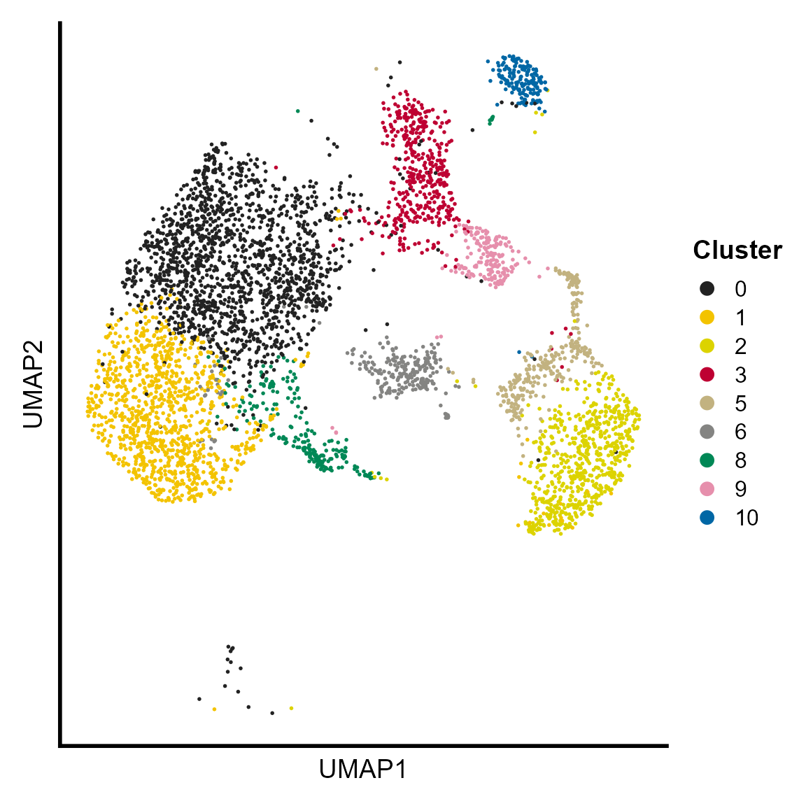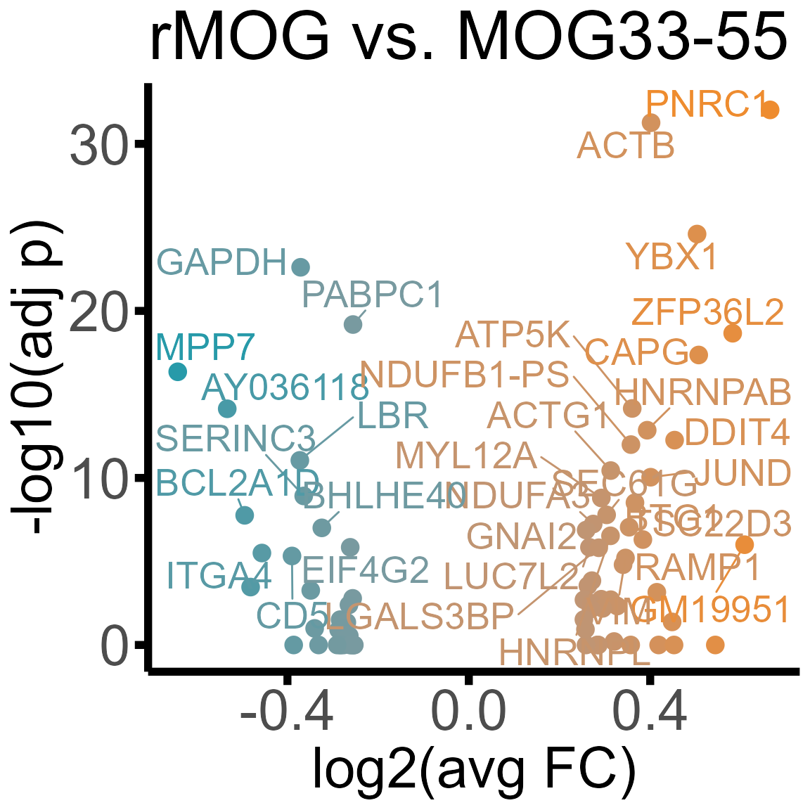
For completeness we also plot a dotmap of selected genes across groups
genes_to_plot <- c("CD4","CD8A","CD69","CD28","PDCD1","LAG3","S1PR1","IL2RA","FOXP3","TCF7","TOX", "GZMB","IFNG","TGFB1")
linesh <- c(1:length(genes_to_plot)) + 0.5
plot_out <- GEX_dottile_plot(GEX = vgm_t[[2]], genes = genes_to_plot, group.by = "group_id", threshold.to.plot = 3) + labs(size = "% positive", color = "Expression", x = "Cluster") + theme(plot.title = element_blank(), axis.title.x = element_text(), axis.text.x = element_text(size = 29, angle = 45, hjust = 1,vjust = 1), axis.title.x.bottom = element_blank(), axis.ticks = element_line(size = 1), axis.ticks.length = unit(0.15,"cm")) +scale_size_binned(range = c(0.1,12), n.breaks = 5) + geom_hline(yintercept = linesh, col = "black", size = 0.9) + scale_color_viridis_c(option = "B", end = 0.85)## Scale for 'size' is already present. Adding another scale for 'size', which
## will replace the existing scale.## Scale for 'colour' is already present. Adding another scale for 'colour',
## which will replace the existing scale.
#For vignette
plot_out + theme(legend.position= "none")
#ggsave(plot = plot_out, filename = "Tc_dottile_group.svg", dpi = 400, width = 5.5, height = 7)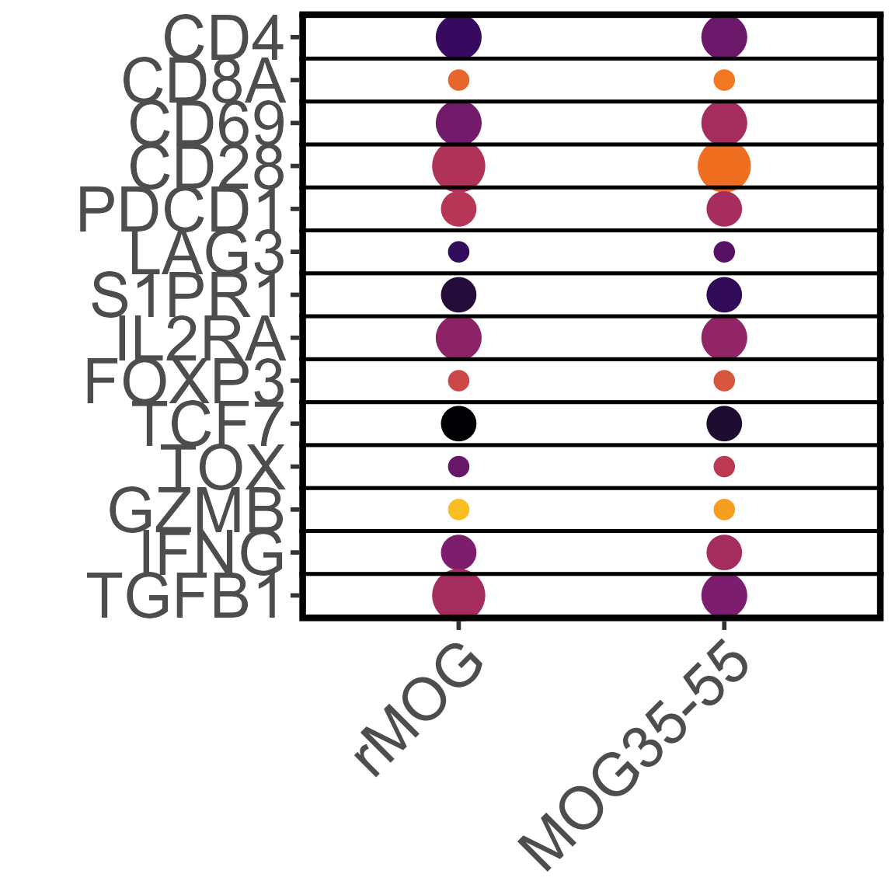
T cells integration with aged CNS dataset
As part of an earlier study, our group examined phenotypes of T cells in the CNS of aged mice. They found increased numbers of lymphocytes and increased clonal expansion, especially of CD8+ T cells in aged vs. young animals.
(Yermanos, A. et al. Single-cell immune repertoire and transcriptome sequencing reveals that clonally expanded and transcriptionally distinct lymphocytes populate the aged central nervous system in mice. Proc. R. Soc. B Biol. Sci. 288, (2021).)
We wondered how different cells of EAE and aged CNS are transcriptionally.
First we run a new VGM to integrate these datasets. While we show the case where the data is on the user’s local PC, please check out the PlatypusDB vignette to see how this could have been done directly from the database.
VDJ.out.directory.list_T <- list()
VDJ.out.directory.list_T[[1]] <- c("~/EAE/tcell/S1") #rMOG_1
VDJ.out.directory.list_T[[2]] <- c("~/EAE/tcell/S1") #rMOG_2
VDJ.out.directory.list_T[[3]] <- c("~/EAE/tcell/S1") #MOG35-55
VDJ.out.directory.list_T[[4]] <- c("~/Aged_CNS/vdj/S1") # 3 Months pool
VDJ.out.directory.list_T[[5]] <- c("~/Aged_CNS/vdj/S2") # 12 months pool
VDJ.out.directory.list_T[[6]] <- c("~/Aged_CNS/vdj/S3") # 18 months pool
VDJ.out.directory.list_T[[7]] <- c("~/Aged_CNS/vdj/S4") # 18 months alone
GEX.out.directory.list <- list()
GEX.out.directory.list[[1]] <- c("~/EAE/gex/S1") #rMOG_1
GEX.out.directory.list[[2]] <- c("~/EAE/gex/S1") #rMOG_2
GEX.out.directory.list[[3]] <- c("~/EAE/gex/S1") #MOG35-55
GEX.out.directory.list[[4]] <- c("~/Aged_CNS/gex/S1") #3 months old pooled
GEX.out.directory.list[[5]] <- c("~/Aged_CNS/gex/S2") #12 months old pooled
GEX.out.directory.list[[6]] <- c("~/Aged_CNS/gex/S3") #18 months old pooled
GEX.out.directory.list[[7]] <- c("~/Aged_CNS/gex/S4") #18 months old singleRun VGM including both the EAE and the aged CNS dataset
#vgm_EAEaged <- VDJ_GEX_matrix(VDJ.out.directory.list = VDJ.out.directory.list_T,
# GEX.out.directory.list = GEX.out.directory.list,
# exclude.on.cell.state.markers = c("CD19+", "CD3E-", "EBF1+"),
# group.id = c("EAE", "EAE", "EAE", "aged CNS", "aged CNS", "aged CNS", "aged CNS"), get.VDJ.stats = F)
#saveRDS(vgm_EAEaged,"EAE_vgm_EAEaged.rds")
sample_ids <- c("s1","s2","s3","s4","s5","s6", "s7")
short_replace_ids <- c("rMOG_1", "rMOG_2","MOG35-55", "3m", "12m", "18m", "18m single")
for (i in 1:7){
vgm_EAEaged[[2]]$sample_id <- gsub(sample_ids[i], short_replace_ids[i], vgm_EAEaged[[2]]$sample_id)
}
vgm_EAEaged[[2]]$sample_id <- ordered(as.factor(vgm_EAEaged[[2]]$sample_id), levels = unique(short_replace_ids))
unique(vgm_EAEaged[[2]]$sample_id)## [1] rMOG_1 rMOG_2 MOG35-55 3m 12m 18m 18m single
## Levels: rMOG_1 rMOG_2 MOG35-55 3m 12m 18m 18m single
samples_color_aged <- c(samples_color,"#71716F", "#577590", "#B2B7A4", "#D8DAD3")
short_replace_ids <- ordered(as.factor(short_replace_ids), levels = unique(short_replace_ids))
test_col <- data.frame(pal = samples_color_aged, nam = unique(short_replace_ids) , val = runif(7,8,12))
#Color test ggplot
ggplot(test_col, aes(x = nam, y = val, fill= nam)) + geom_bar(stat = "identity") + scale_fill_manual(values = samples_color_aged)
#Nr. cells per sample
table(vgm_EAEaged[[2]]$sample_id)##
## rMOG_1 rMOG_2 MOG35-55 3m 12m 18m 18m single
## 2477 1597 1354 64 41 491 108
Next: General UMAP to show transcriptional landscape
Seurat::DimPlot(vgm_EAEaged[[2]],reduction = "umap", group.by = "sample_id", cols = samples_color_aged, shuffle = T) + theme( axis.ticks = element_blank(), legend.position = "right",plot.title =element_blank(),axis.line=element_line(size = 1),axis.text = element_blank(), legend.title = element_text(size = 14, face = "bold"), legend.text = element_text(size = 15)) + labs(color = "Sample", x = "UMAP1", y = "UMAP2") + guides(colour = guide_legend(override.aes = list(size=5)))
#ggsave(plot = last_plot(), filename = "Tcs_eaeaged_umap_sample.svg", dpi = 700, width = 6.5, height = 5)
Seurat::DimPlot(vgm_EAEaged[[2]],reduction = "umap", group.by = "seurat_clusters", cols = pals::kelly(n = 17)[c(2,3,17,7:13,6,16)], shuffle = T, label =T, label.size = 7 ) + theme( axis.ticks = element_blank(), legend.position = "right",plot.title =element_blank(),axis.line=element_line(size = 1),axis.text = element_blank(), legend.title = element_text(size = 14, face = "bold"), legend.text = element_text(size = 15)) + labs(color = "Cluster", x = "UMAP1", y = "UMAP2")+ guides(colour = guide_legend(override.aes = list(size=5)))
#ggsave(plot = last_plot(), filename = "Tcs_eaeaged_umap_cluster.svg", dpi = 700, width = 6.5, height = 5)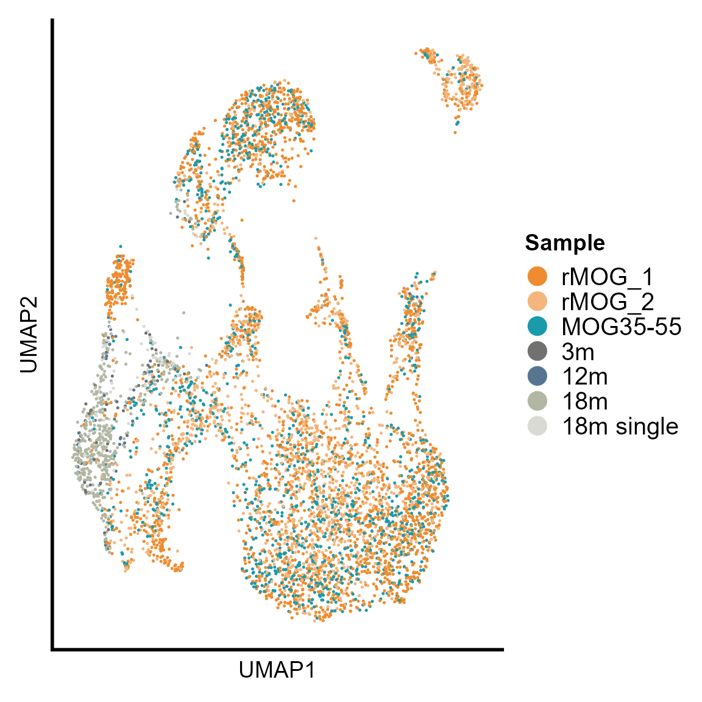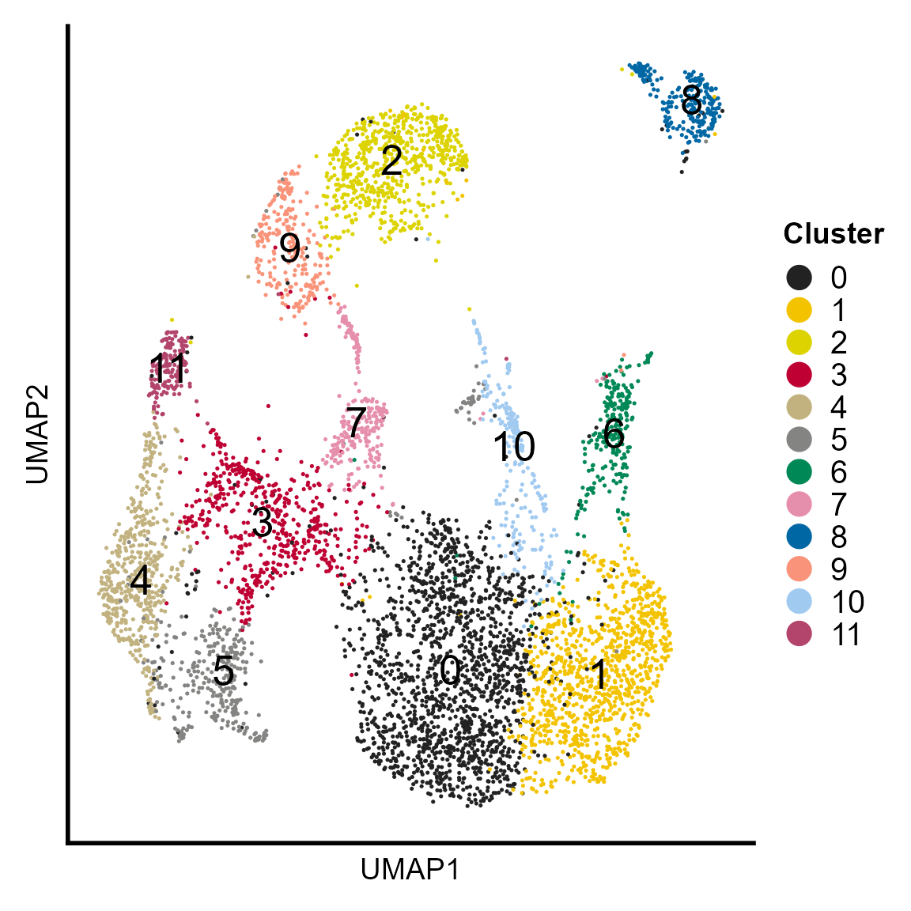
Next we visualize cluster membership with a barplot
cl_members <- GEX_proportions_barplot(GEX = vgm_EAEaged[[2]],source.group = "sample_id", target.group = "seurat_clusters", stacked.plot = T)+ scale_fill_manual(values = samples_color_aged) + theme(plot.margin = margin(t = 0.7,r = 2.5, unit = "cm"),panel.background = element_blank(),axis.text = element_text(size = 33), axis.line = element_line(size = 1), axis.ticks = element_line(size = 1), axis.ticks.length = unit(0.15, "cm"), text = element_text(size=33), legend.key = element_rect(colour = "grey"), legend.position = "none", plot.title = element_blank(), legend.title = element_text(size = 25, face = "bold"), legend.text = element_text(size = 19)) + labs(title = "", x = "", y = "% of cells of cluster", fill = "Sample") + scale_y_continuous(expand = c(0,0))## [1] "Ordering based on existing source group factor levels"
## [1] rMOG_1 rMOG_1 rMOG_1 rMOG_1 rMOG_1 rMOG_1
## [7] rMOG_1 rMOG_1 rMOG_1 rMOG_1 rMOG_1 rMOG_1
## [13] rMOG_2 rMOG_2 rMOG_2 rMOG_2 rMOG_2 rMOG_2
## [19] rMOG_2 rMOG_2 rMOG_2 rMOG_2 rMOG_2 rMOG_2
## [25] MOG35-55 MOG35-55 MOG35-55 MOG35-55 MOG35-55 MOG35-55
## [31] MOG35-55 MOG35-55 MOG35-55 MOG35-55 MOG35-55 MOG35-55
## [37] 3m 3m 3m 3m 3m 3m
## [43] 3m 3m 3m 3m 3m 3m
## [49] 12m 12m 12m 12m 12m 12m
## [55] 12m 12m 12m 12m 12m 12m
## [61] 18m 18m 18m 18m 18m 18m
## [67] 18m 18m 18m 18m 18m 18m
## [73] 18m single 18m single 18m single 18m single 18m single 18m single
## [79] 18m single 18m single 18m single 18m single 18m single 18m single
## Levels: rMOG_1 < rMOG_2 < MOG35-55 < 3m < 12m < 18m < 18m single
## [1] "Ordering based on existing target group factor levels"
## [1] "Returning stacked barplot with y axis = % of cells of target group"## Scale for 'y' is already present. Adding another scale for 'y', which will
## replace the existing scale.
cl_members
#ggsave(last_plot(), filename = "Tcs_eaeaged_Cluster_membership.svg", dpi = 400, width = 7.5, height = 5)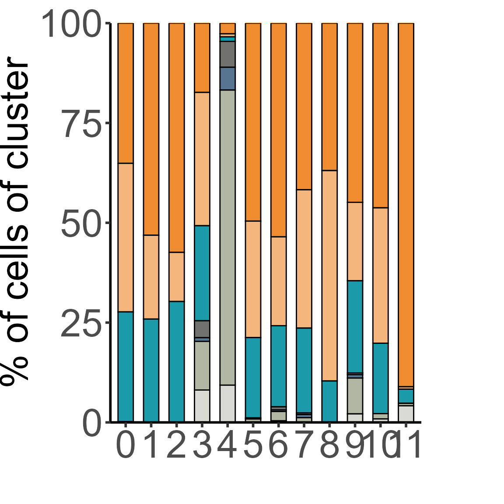
Dotmaps again come in useful for many genes and conditions
genes_to_plot <- c("CD4","CD8A","CD69","CD28","ICOS","CD40LG","PDCD1","LAG3","S1PR1","PTPRC","SELL","IL7R","STAT4","FOXP3", "MKI67","TCF7","TOX", "GZMB","GZMK","IFNG","TGFB1","IL17A","CXCR3","CCR5","ITGA4","ITGB2")
linesh <- c(1:length(genes_to_plot)) + 0.5
plot_out <- GEX_dottile_plot(GEX = vgm_EAEaged[[2]], genes = genes_to_plot, group.by = "sample_id", threshold.to.plot = 3) + labs(size = "% positive", color = "Expression", x = "Cluster") + theme(plot.title = element_blank(), axis.title.x = element_text(), axis.text.x = element_text(size = 29, angle = 45, hjust = 1,vjust = 1), axis.title.x.bottom = element_blank(), axis.ticks = element_line(size = 1), axis.ticks.length = unit(0.15,"cm")) +scale_size_binned(range = c(0.1,12), n.breaks = 5) + geom_hline(yintercept = linesh, col = "black", size = 0.9) + scale_color_viridis_c(option = "B", end = 0.85)## Scale for 'size' is already present. Adding another scale for 'size', which
## will replace the existing scale.## Scale for 'colour' is already present. Adding another scale for 'colour',
## which will replace the existing scale.
#For vignette
plot_out + theme(legend.position= "none")## Warning: Removed 9 rows containing missing values (geom_point).
#ggsave(plot = plot_out, filename = "Tc_eaeaged_dottile.svg", dpi = 400, width = 8, height = 11)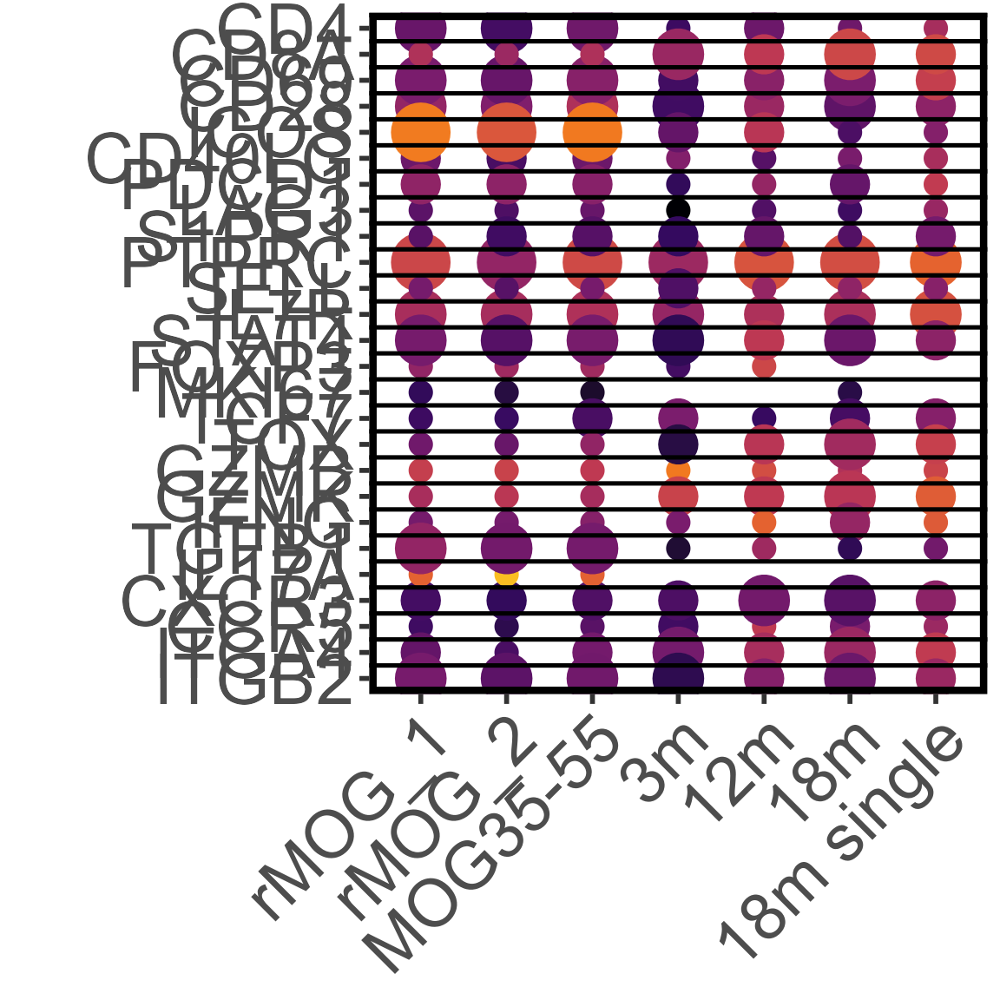
Differentially expressed genes by condition: Given the higher number of CD8+ T cells in aged CNS, we can also split these DEG calculations by T cell subtype
vgm_EAEaged[[2]]$CD4_ <- "neg"
vgm_EAEaged[[2]]$CD4_dat <- FetchData(vgm_EAEaged[[2]], "CD4")
vgm_EAEaged[[2]]$CD4_[which(vgm_EAEaged[[2]]$CD4_dat > 0)] <- "CD4"
vgm_EAEaged[[2]]$CD4_ <- paste0(vgm_EAEaged[[2]]$group_id, " ", vgm_EAEaged[[2]]$CD4_)
table(vgm_EAEaged[[2]]$CD4_)##
## aged CNS CD4 aged CNS neg EAE CD4 EAE neg
## 77 627 2939 2489
sample_DEGs <- GEX_DEgenes(vgm_EAEaged[[2]], min.pct = 0.25, grouping.column = "CD4_", group1 = "EAE CD4", group2 = "aged CNS CD4", return.plot = "none", logFC = F)
#plot volcano
plot_out <- ggplot(sample_DEGs[[1]], aes(x = avg_logFC, y = -log10(p_val_adj), col = avg_logFC)) + geom_point(show.legend = F, size = 4, alpha = 0.6) + theme(panel.background = element_blank(),axis.text = element_text(size = 30), axis.line = element_line(size = 1), axis.ticks = element_line(size = 1, color = "black"), axis.ticks.length = unit(0.15, "cm"), text = element_text(size=30), legend.key = element_rect(colour = "grey"),legend.key.height = NULL,legend.key.width = NULL, legend.position = "none") + labs(x = "log2(avg FC)", y = "-log10(adj p)",title = "CD4+ EAE vs. Aged") + geom_text_repel(data = subset(sample_DEGs[[1]], -log10(p_val_adj) > 20 | SYMBOL %in% c("TCF7", "GZMB", "CD28", "CD69", "HIF1A", "TOX","GZMK")), aes(x = avg_logFC, y = -log10(p_val_adj), label = SYMBOL, col = avg_logFC), inherit.aes = F, size = 7, segment.alpha = 1, max.overlaps = 40)+scale_color_gradient2(low = samples_color_aged[4], mid = "grey60", high = samples_color_aged[2], midpoint = 0)
plot_out
#ggsave(plot_out, filename = "Tc_eaeaged_CD4volc.svg", dpi = 400, width = 8, height = 9.2)
#GIVEN the high number of CD8 in Aged: detailed comparison of CD8+ Tcs
vgm_EAEaged[[2]]$CD8_ <- "neg"
vgm_EAEaged[[2]]$CD8_dat <- FetchData(vgm_EAEaged[[2]], "CD8A")
vgm_EAEaged[[2]]$CD8_[which(vgm_EAEaged[[2]]$CD8_dat > 0)] <- "CD8"
vgm_EAEaged[[2]]$CD8_ <- paste0(vgm_EAEaged[[2]]$group_id, " ", vgm_EAEaged[[2]]$CD8_)
vgm_EAEaged[[2]]$sample_id <- vgm_EAEaged[[2]]$CD8_
sample_DEGs <- GEX_DEgenes(vgm_EAEaged[[2]], min.pct = 0.25, grouping.column = "CD8_", group1 = "EAE CD8", group2 = "aged CNS CD8", return.plot = "none", logFC = F)
#plot volcano
plot_out <- ggplot(sample_DEGs[[1]], aes(x = avg_logFC, y = -log10(p_val_adj), col = avg_logFC)) + geom_point(show.legend = F, size = 4, alpha = 0.6) + theme(panel.background = element_blank(),axis.text = element_text(size = 30), axis.line = element_line(size = 1), axis.ticks = element_line(size = 1, color = "black"), axis.ticks.length = unit(0.15, "cm"), text = element_text(size=30), legend.key = element_rect(colour = "grey"),legend.key.height = NULL,legend.key.width = NULL, legend.position = "none") + labs(x = "log2(avg FC)", y = "-log10(adj p)",title = "CD8+ EAE vs. Aged") + geom_text_repel(data = subset(sample_DEGs[[1]], -log10(p_val_adj) > 37 | SYMBOL %in% c("TCF7", "GZMB", "CD28", "CD69", "HIF1A", "TOX","GZMK")), aes(x = avg_logFC, y = -log10(p_val_adj), label = SYMBOL, col = avg_logFC), inherit.aes = F, size = 7, segment.alpha = 1, max.overlaps = 40)+scale_color_gradient2(low = samples_color_aged[4], mid = "grey60", high = samples_color_aged[2], midpoint = 0)
plot_out## Warning: ggrepel: 3 unlabeled data points (too many overlaps). Consider
## increasing max.overlaps
#ggsave(plot_out, filename = "Tc_eaeaged_new_CD8volc.svg", dpi = 400, width = 8, height = 9.2) 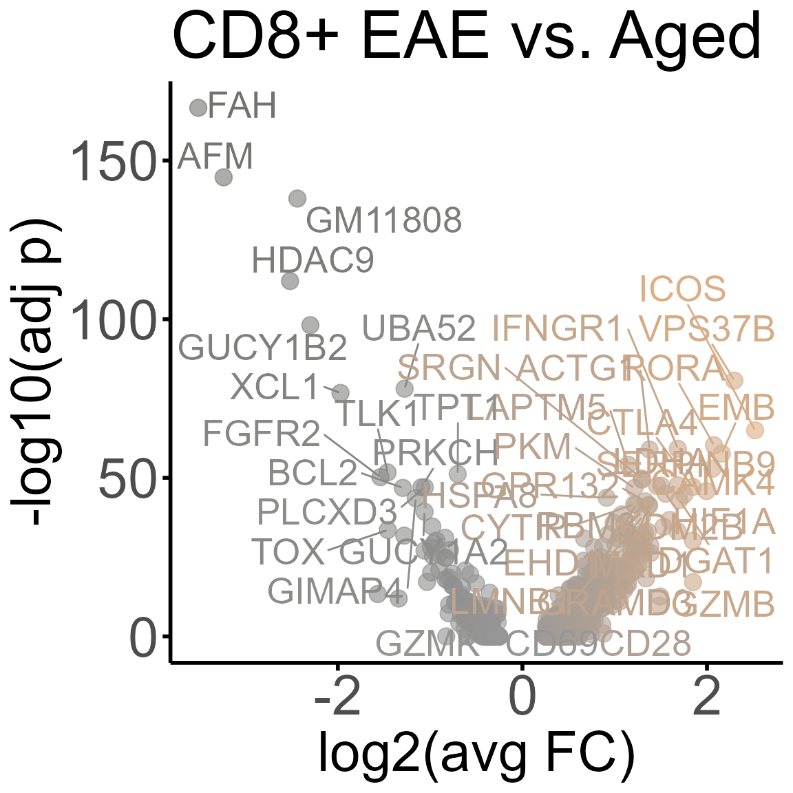
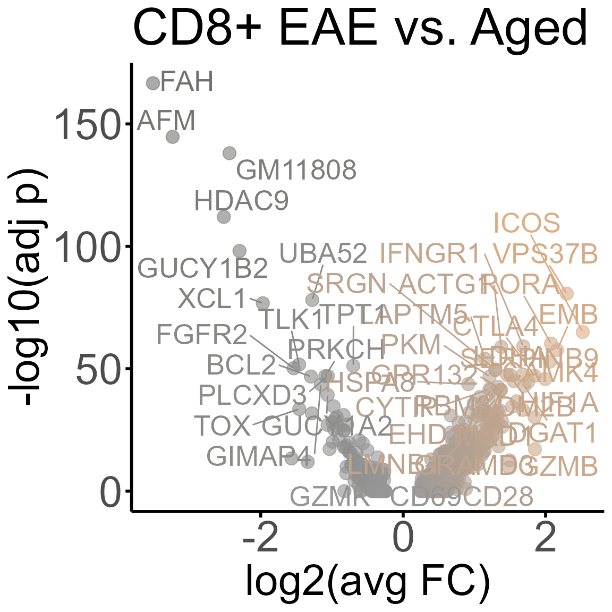
Exploring VDJ of T cells
After having explored transcriptional phenotypes of T cells we now turn to their TCR repertoires. We can plot circular expansion graphs
#with VGM counts
plots_out <- VDJ_clonal_donut(vgm_t[[1]], counts.to.use = "VGM", expanded.colors = c("#68228B","#BF3EFF","#E066FF","#8968CD"), non.expanded.color = "#000000", label.size = 9, total.label.vjust = 2) #Middle label position slightly adjusted to fit. Please only use these parameters after having set on a final output format for the plot## [1] "Using counts of entries in the VDJ GEX matrix"
## [1] "----------"
## [1] "Sample: rMOG_1"
## [1] "Clones: Expanded: 233 / 28.84%; 1 cell 575 / 71.16%; total: 808"
## [1] "Cells: Expanded: 1590 / 73.44%; 1 cell 575 / 26.56%; Total: 2165"
## [1] "----------"
## [1] "Sample: rMOG_2"
## [1] "Clones: Expanded: 133 / 23.84%; 1 cell 425 / 76.16%; total: 558"
## [1] "Cells: Expanded: 978 / 69.71%; 1 cell 425 / 30.29%; Total: 1403"
## [1] "----------"
## [1] "Sample: MOG35-55"
## [1] "Clones: Expanded: 144 / 31.1%; 1 cell 319 / 68.9%; total: 463"
## [1] "Cells: Expanded: 923 / 74.32%; 1 cell 319 / 25.68%; Total: 1242"
#here we use counts of clones from the VGM (i.e. the nr. of rows/cells of every clone) This can also be set to "10x" to use counts from the clonotype_frequency column based on original Cellranger output. The two may diverge if a large number of overlapping barcodes were filtered out or if the clonotyping strategy was changed
for(i in 1:length(plots_out)){ #saving in a loop
print(plots_out[[i]])
#ggsave(plots_out[[i]], filename = paste0("Donut_VGMcounts",plots_out[[i]]$labels$title ,".png"), dpi = 400, width = 5, height = 5, bg = "transparent")
}
#check mean expanded clone frequency by group for 10x counts
vgm_t[[1]]$clonotype_frequency <- as.numeric(vgm_t[[1]]$clonotype_frequency) #making sure
vgm_t[[1]] %>% group_by(sample_id) %>% summarize(mean_cl_freq = mean(clonotype_frequency), median_cl_freq = median(clonotype_frequency))## # A tibble: 3 x 3
## sample_id mean_cl_freq median_cl_freq
## <ord> <dbl> <dbl>
## 1 rMOG_1 22.4 6
## 2 rMOG_2 NA NA
## 3 MOG35-55 22.7 6.5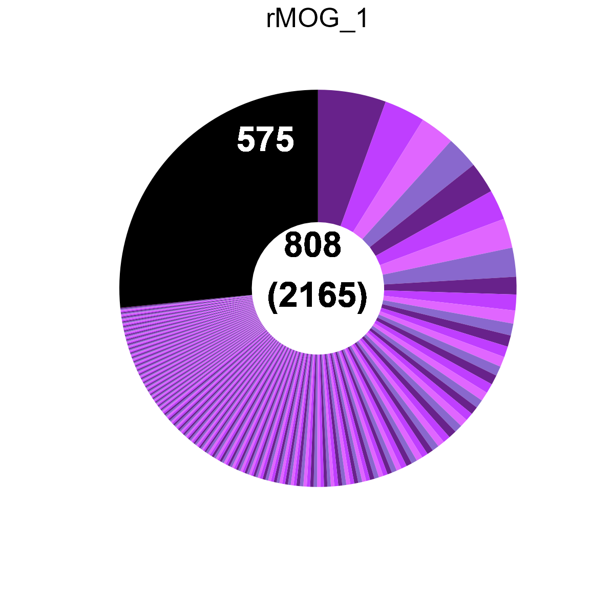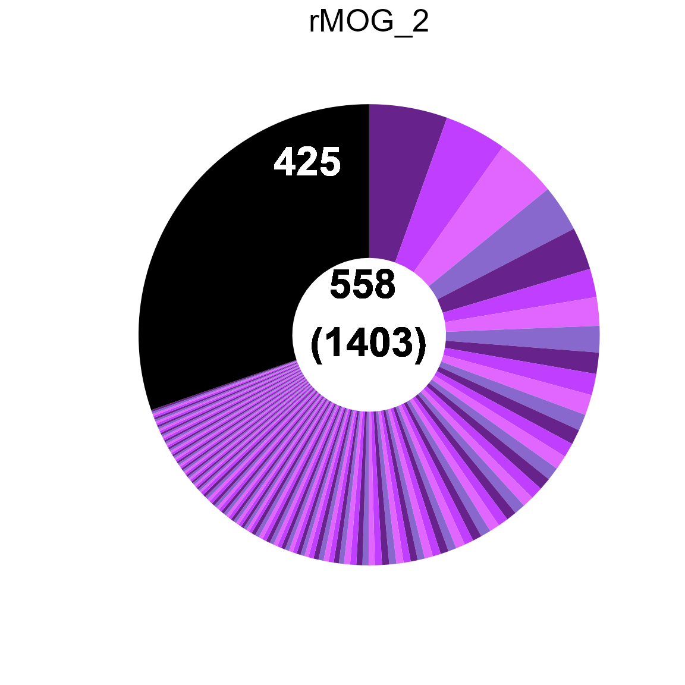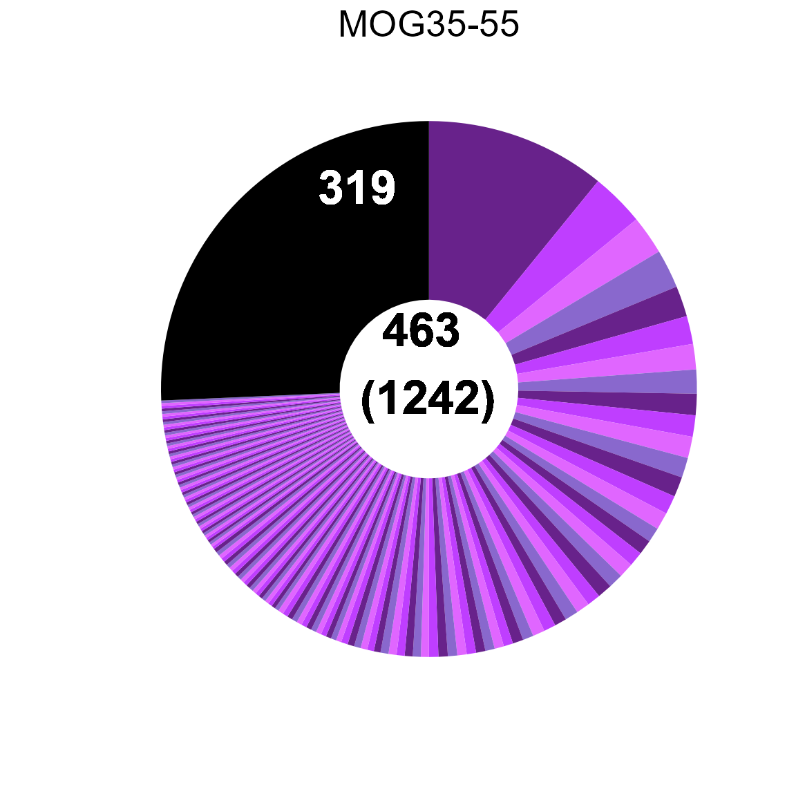
We continue by calculating common diversity metrics Here we use VDJ and VJ CDR3s seqs as a basis
#NO SUBSAMPLING
out_list <- list() #loop to compile results for all metrics
for(i in c("richness","bergerparker","ginisimpson","shannonevenness")){
out <- VDJ_diversity(VDJ = vgm_t[[1]],feature.columns = c("VDJ_cdr3s_aa","VJ_cdr3s_aa"),grouping.column = "sample_id", metric = i, platypus.version = "v3", subsample.to.same.n = F)$data
out$metric_used <- i
out_list[[i]] <- out
}
out <- bind_rows(out_list) #generating a common dataframe
#lets plot this
out$index <- ordered(as.factor(out$index), levels = c("Species richness", "Berger-Parker index", "Gini-Simpson index", "Shannon evenness"))
plot_out <- ggplot(out, aes(x = groups, y = metric, fill = groups)) + labs(title = "", x = "", y = "") + theme(panel.background = element_blank(), axis.ticks.x = element_blank(), legend.position = "none") + geom_bar(width = 0.6,show.legend = F, stat = "identity") + theme(panel.background = element_blank(),axis.text.x = element_text(angle = 30,vjust = 1, hjust=1, size = 30),axis.text.y = element_text(size = 30), axis.line.x = element_line(size = 2),axis.line.y = element_line(size = 2), axis.ticks = element_line(size = 2, color = "black"), axis.ticks.length = unit(0.25, "cm"), text = element_text(size=30), strip.background = element_rect(fill = "white", color = "white")) + scale_y_continuous(expand = c(0,0))+ scale_fill_manual(values= samples_color)+ facet_wrap(~index, scales = "free")
plot_out
#ggsave(plot_out, filename = "Tcs_rep_diversity_nosubsampling.svg", dpi = 600, width = 10, height = 8)
#SUBSAMPLING
out_list <- list()
for(i in c("richness","bergerparker","ginisimpson", "shannonevenness")){
out <- VDJ_diversity(VDJ = vgm_t[[1]],feature.columns = c("VDJ_cdr3s_aa","VJ_cdr3s_aa"),grouping.column = "sample_id",metric = i, platypus.version = "v3", subsample.to.same.n = T)$data #subsampling down to the smallest repertoire
out$metric_used <- i
out_list[[i]] <- out
}## [1] "Subsampled group rMOG_1 to 1054 entries"
## [1] "Subsampled group rMOG_2 to 1054 entries"
## [1] "Used group MOG35-55 as a reference for subsampling with 1054 entries"
## [1] "To avoid subsampling set subsample.to.same.n = FALSE"
## [1] "Subsampled group rMOG_1 to 1054 entries"
## [1] "Subsampled group rMOG_2 to 1054 entries"
## [1] "Used group MOG35-55 as a reference for subsampling with 1054 entries"
## [1] "To avoid subsampling set subsample.to.same.n = FALSE"
## [1] "Subsampled group rMOG_1 to 1054 entries"
## [1] "Subsampled group rMOG_2 to 1054 entries"
## [1] "Used group MOG35-55 as a reference for subsampling with 1054 entries"
## [1] "To avoid subsampling set subsample.to.same.n = FALSE"
## [1] "Subsampled group rMOG_1 to 1054 entries"
## [1] "Subsampled group rMOG_2 to 1054 entries"
## [1] "Used group MOG35-55 as a reference for subsampling with 1054 entries"
## [1] "To avoid subsampling set subsample.to.same.n = FALSE"
out <- bind_rows(out_list)
#lets plot this too
out$index <- ordered(as.factor(out$index), levels = c("Species richness", "Berger-Parker index", "Gini-Simpson index", "Shannon evenness"))
plot_out <- ggplot(out, aes(x = groups, y = metric, fill = groups)) + labs(title = "", x = "", y = "") + theme(panel.background = element_blank(), axis.ticks.x = element_blank(), legend.position = "none") + geom_bar(width = 0.6,show.legend = F, stat = "identity") + theme(panel.background = element_blank(),axis.text.x = element_text(angle = 30,vjust = 1, hjust=1, size = 30),axis.text.y = element_text(size = 30), axis.line.x = element_line(size = 2),axis.line.y = element_line(size = 2), axis.ticks = element_line(size = 2, color = "black"), axis.ticks.length = unit(0.25, "cm"), text = element_text(size=30), strip.background = element_rect(fill = "white", color = "white")) + scale_y_continuous(expand = c(0,0))+ scale_fill_manual(values= samples_color)+ facet_wrap(~index, ncol = 2, scales = "free")
plot_out
#ggsave(plot_out, filename = "Tcs_rep_diversity_subsampled.svg", dpi = 600, width = 8, height = 10)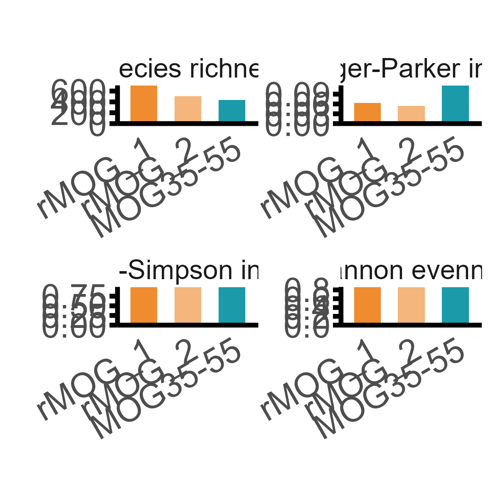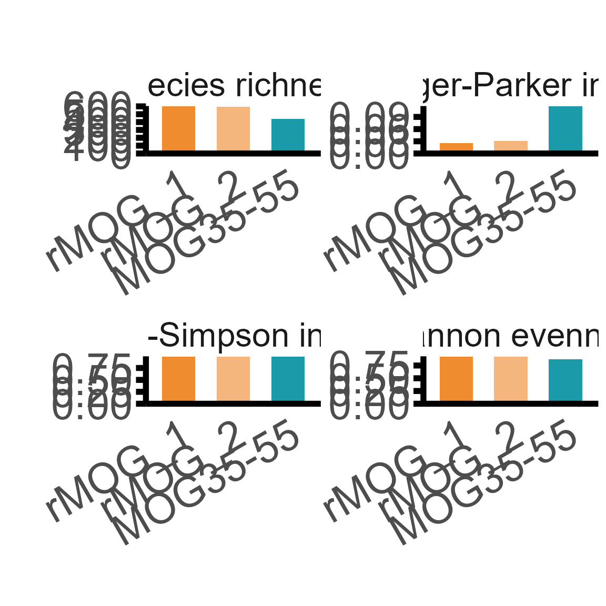
V gene usage is an important indicator of repertoire similarity or dissimilarity. 1. stacked barplot
levels(vgm_t[[1]]$sample_id)## [1] "rMOG_1" "rMOG_2" "MOG35-55"
vgm_t[[1]]$VDJ_vgene <- gsub("TRBV12-2\\+TRBV13-2", "TRBV13-2",vgm_t[[1]]$VDJ_vgene) #A single expanded clone was noted to have 2 heavy chains with 2 different V genes. Here we remove the infrequent of the two.
EAE_Vgene_usage_barplot_b <- VDJ_Vgene_usage_stacked_barplot(vgm_t[[1]], HC.gene.number = 12, LC.Vgene = F, LC.gene.number = 12, platypus.version = "v3")## [1] "Sample order: rMOG_1 ; rMOG_2 ; MOG35-55"
#ggplot magic
plot_out <- EAE_Vgene_usage_barplot_b + theme(panel.background = element_blank(),axis.text = element_text(size = 25), axis.line = element_line(size = 2), axis.ticks = element_line(size = 2, color = "black"), axis.ticks.length = unit(0.25, "cm"), text = element_text(size=28),legend.position = "right",axis.text.x = element_text(angle = 30,vjust = 1, hjust=1), plot.title = element_blank(), axis.title.x = element_blank(), plot.margin = margin(t = 0.7, unit = "cm"), panel.grid.major = element_blank(),panel.grid.minor = element_blank(),panel.border = element_blank(), legend.title = element_text(face = "bold"))+ scale_fill_manual(values = pals::stepped2(20))+ scale_x_discrete(breaks=c("1","2","3"),labels=c("rMOG_1", "rMOG_2", "MOG35-55")) + labs(y = "relative usage", fill = "VDJ Vgene")
plot_out
#ggsave(plot = plot_out, filename = paste0("Tcs_VDJ_vgene_by_sample.svg"), dpi = 400, width = 8, height = 7)
#VJ
EAE_Vgene_usage_barplot_b <- VDJ_Vgene_usage_stacked_barplot(vgm_t[[1]], HC.gene.number = 12, LC.Vgene = T, LC.gene.number = 12, platypus.version = "v3")## [1] "Sample order: rMOG_1 ; rMOG_2 ; MOG35-55"
plot_out <- EAE_Vgene_usage_barplot_b + theme(panel.background = element_blank(),axis.text = element_text(size = 25), axis.line = element_line(size = 2), axis.ticks = element_line(size = 2, color = "black"), axis.ticks.length = unit(0.25, "cm"), text = element_text(size=28),legend.position = "right",axis.text.x = element_text(angle = 30,vjust = 1, hjust=1), plot.title = element_blank(), axis.title.x = element_blank(), plot.margin = margin(t = 0.7, unit = "cm"), panel.grid.major = element_blank(),panel.grid.minor = element_blank(),panel.border = element_blank(), legend.title = element_text(face = "bold"))+ scale_fill_manual(values = pals::stepped2(20))+ scale_x_discrete(breaks=c("1","2", "3"),labels=c("rMOG_1", "rMOG_2", "MOG35-55")) + labs(y = "relative usage", fill = "VJ Vgene")
plot_out
#ggsave(plot = plot_out, filename = paste0("Tcs_VJ_vgene_by_sample.svg"), dpi = 400, width = 8, height = 7)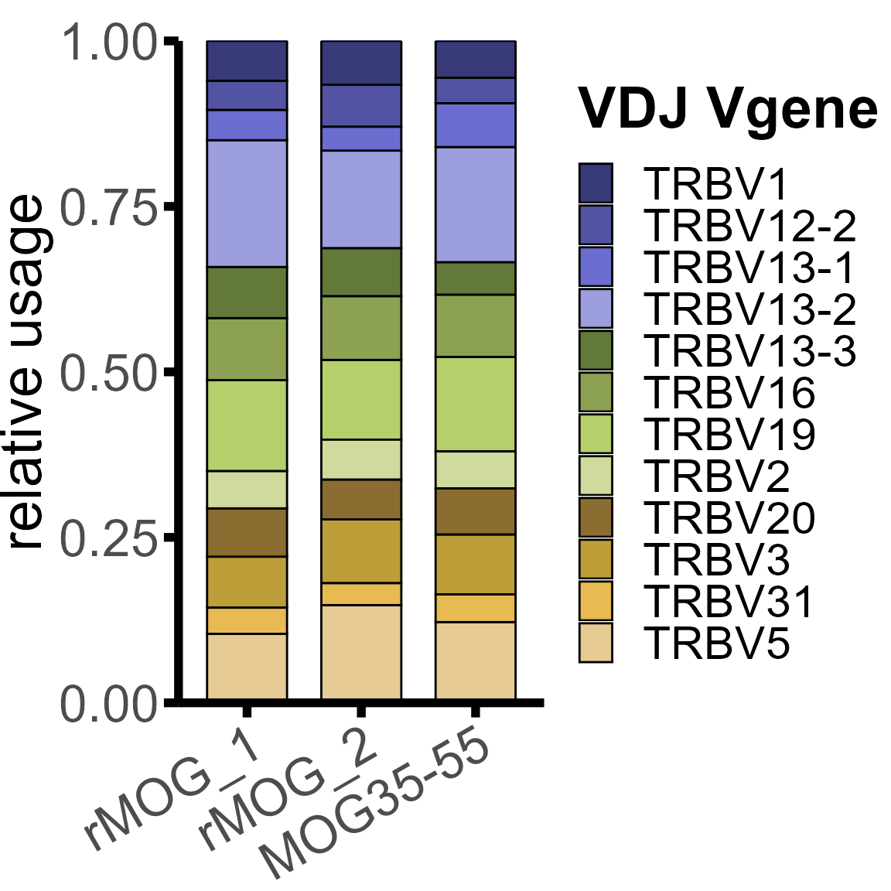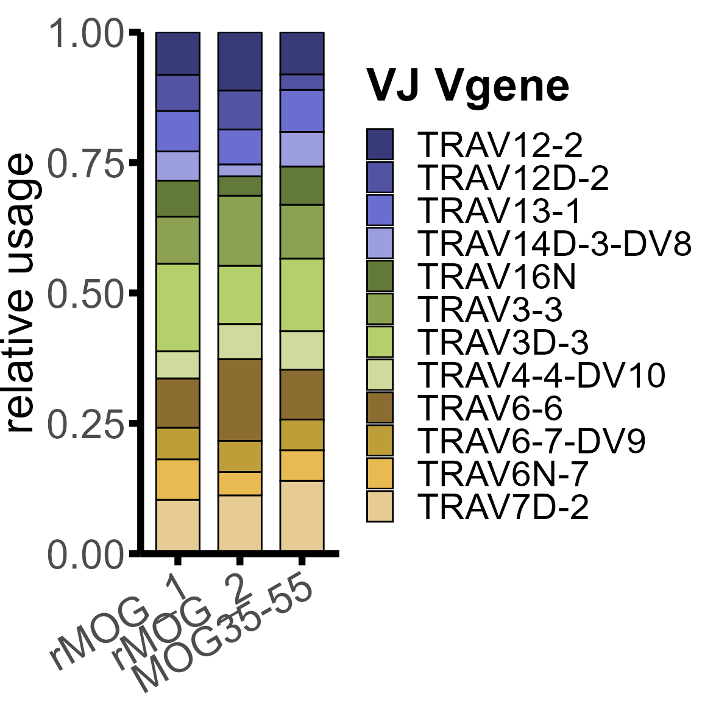
- Using Circos plots These will generate PDF files, which are not contained within this vignette
pdf(file = "Tcs_circos_rMOG_1.pdf", onefile = T, width = 6, height = 6)
for_cir <- subset(vgm_t[[1]], sample_id == "rMOG_1")
for_cir$sample_id <- as.character(for_cir$sample_id)
circos <- VDJ_VJ_usage_circos(VDJ = for_cir, A.or.B = "both", label.threshold = 5, cell.level = T, clonotype.per.gene.threshold = 20, c.count = T, platypus.version = "v3", filter1H1L = T)
dev.off()
pdf(file = "Tcs_circos_rMOG_2.pdf", onefile = T, width = 6, height = 6)
for_cir <- subset(vgm_t[[1]], sample_id == "rMOG_2")
for_cir$sample_id <- as.character(for_cir$sample_id)
circos <- VDJ_VJ_usage_circos(VDJ = for_cir, A.or.B = "both", label.threshold = 5, cell.level = T, clonotype.per.gene.threshold = 20, c.count = T, platypus.version = "v3", filter1H1L = T)
dev.off()
pdf(file = "Tcs_circos_MOG3555.pdf", onefile = T, width = 6, height = 6)
for_cir <- subset(vgm_t[[1]], sample_id == "MOG35-55")
for_cir$sample_id <- as.character(for_cir$sample_id)
circos <- VDJ_VJ_usage_circos(VDJ = for_cir, A.or.B = "both", label.threshold = 5, cell.level = T, clonotype.per.gene.threshold = 10, c.count = T, platypus.version = "v3", filter1H1L = T)
dev.off()Public clones are often of great interest to assess clonal convergence. The following VDJ_overlap_heatmap function quantifies this for the vgm object.
#using the unfiltered (VDJ comb here. All cells, also those with less or more than 1VDJ 1VJ are included)
VDJv_overlap <- VDJ_overlap_heatmap(vgm_t[[1]],feature.columns = c("VDJ_vgene") ,grouping.column = "sample_id", axis.label.size = 20, pvalues.label.size = 12, platypus.version = "v3", add.barcode.table = T)
length(unique(vgm_t[[1]]$VDJ_vgene))## [1] 95
VJv_overlap <- VDJ_overlap_heatmap(vgm_t[[1]],feature.columns = c("VJ_vgene") ,grouping.column = "sample_id", axis.label.size = 20, pvalues.label.size = 12, platypus.version = "v3", add.barcode.table = T)
length(unique(vgm_t[[1]]$VJ_vgene))## [1] 311
VJ_overlap <- VDJ_overlap_heatmap(vgm_t[[1]],feature.columns = c("VJ_cdr3s_aa") ,grouping.column = "sample_id", axis.label.size = 20, pvalues.label.size = 12, platypus.version = "v3")
length(unique(vgm_t[[1]]$VJ_cdr3s_aa))## [1] 1544
VDJ_overlap <- VDJ_overlap_heatmap(vgm_t[[1]],feature.columns = c("VDJ_cdr3s_aa") ,grouping.column = "sample_id", axis.label.size = 20, pvalues.label.size = 12, platypus.version = "v3")
length(unique(vgm_t[[1]]$VDJ_cdr3s_aa))## [1] 1626
clone_overlap <- VDJ_overlap_heatmap(vgm_t[[1]],feature.columns = c("VJ_cdr3s_aa","VDJ_cdr3s_aa") ,grouping.column = "sample_id", axis.label.size = 20, pvalues.label.size = 12, platypus.version = "v3")
length(unique(vgm_t[[1]]$pasted))## [1] 0
#make a table out of this for barplots (The numbers are from the length(unique())) prints above)
to_plot <- data.frame(var = c("VDJ vgene","VJ vgene", "VDJ CDR3", "VJ CDR3", "VJ&VDJ CDR3"), ov = c(29,73,19,45,4), total = c(96,314,1546,1629,2094))
to_plot$fraction <- paste0(round((to_plot$ov / to_plot$total * 100),2),"%")
to_plot$var <- ordered(as.factor(to_plot$var),levels = c("VDJ vgene","VJ vgene", "VDJ CDR3","VJ CDR3", "VJ&VDJ CDR3"))
plot_out <- ggplot(data = to_plot, aes(x = var, y = ov, fill = ov)) + geom_bar(alpha = 1, stat = "identity") + theme(panel.background = element_blank(),axis.text.x = element_text(angle = 30,vjust = 1, hjust=1, size = 30),axis.text.y = element_text(size = 27), axis.line.x = element_line(size = 2),axis.line.y = element_line(size = 2), axis.line = element_line(size = 2), axis.ticks = element_line(size = 2, color = "black"), axis.ticks.length = unit(0.25,"cm"), text = element_text(size=28), legend.position = "none", plot.margin = margin(l = 0.5, unit = "cm")) + labs(title = "Repertoire overlap", x = "", y = "shared elements") + geom_text(aes(label = fraction , vjust = -0.5), size = 9)+ scale_y_continuous(expand = c(0,0), limits = c(0,83)) + scale_fill_gradient(low = "grey80", high = stepped2(15)[13], oob = squish_infinite)
plot_out
#ggsave(plot_out, filename = "Tcs_rep_overlap_new.svg", dpi = 400, width = 8, height = 10)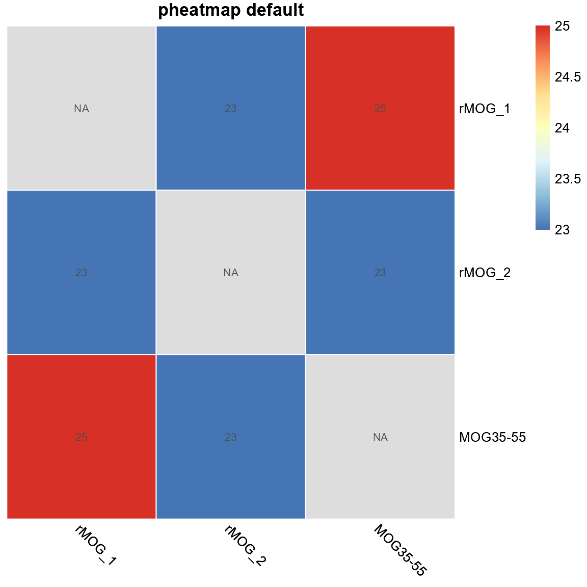 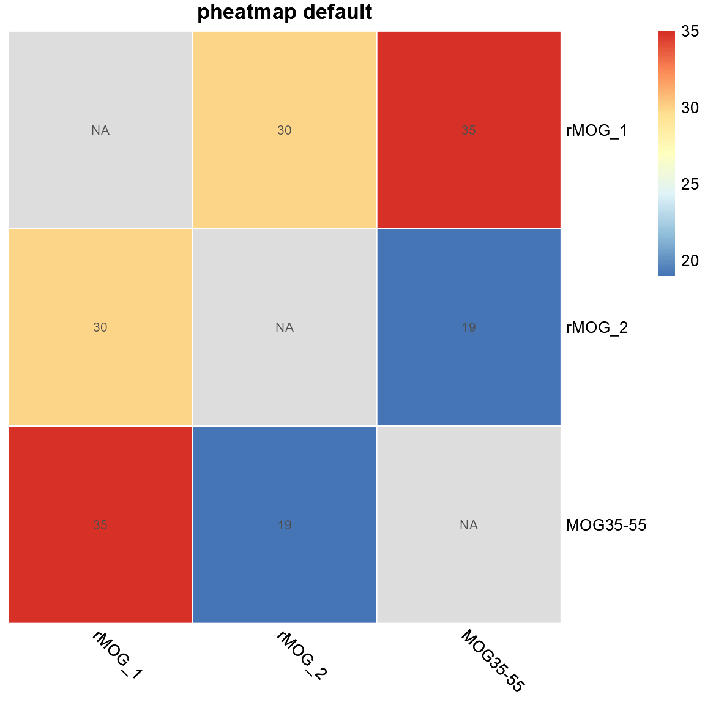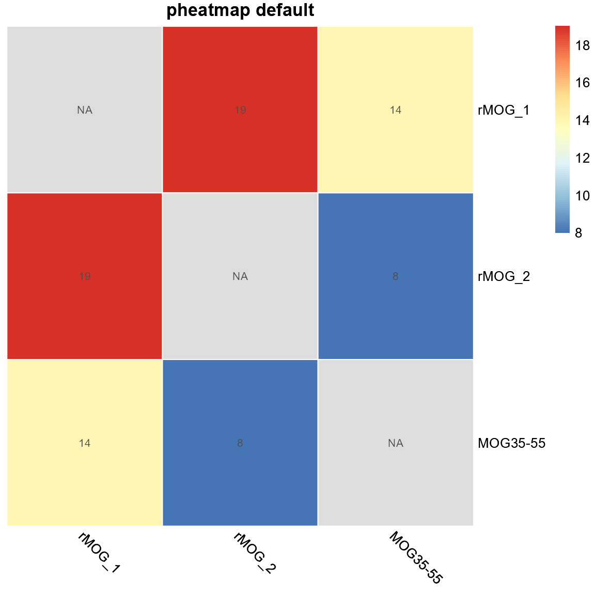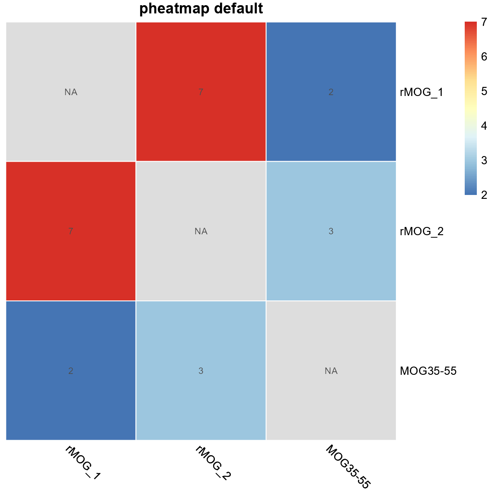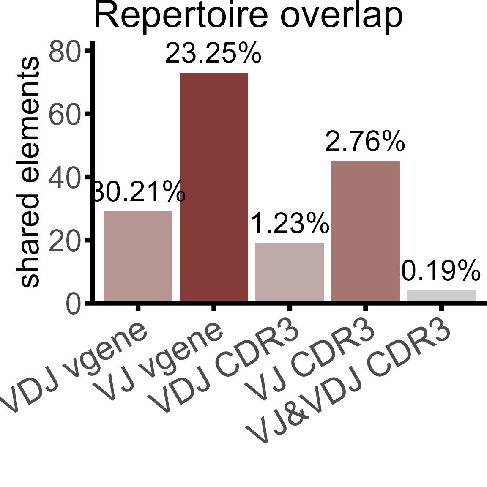
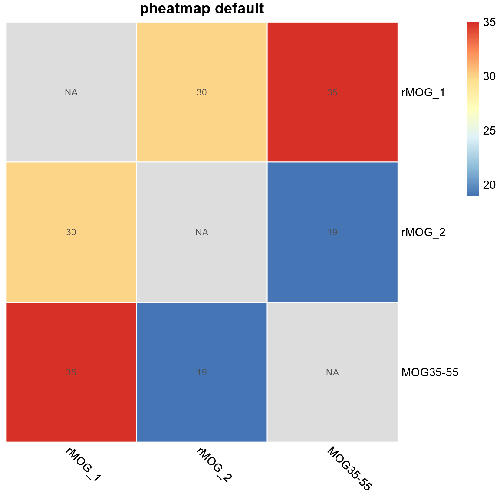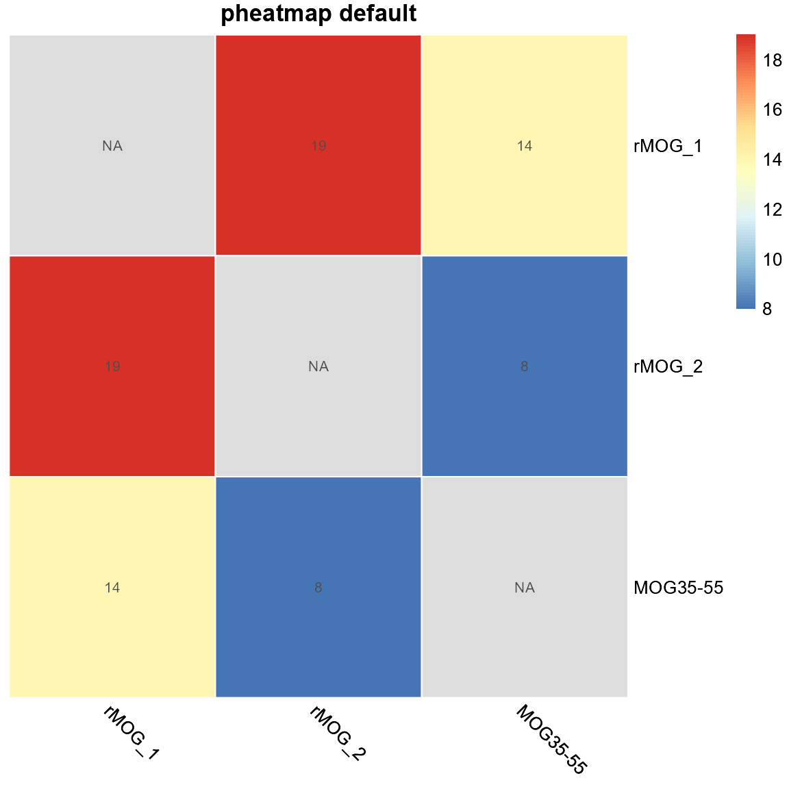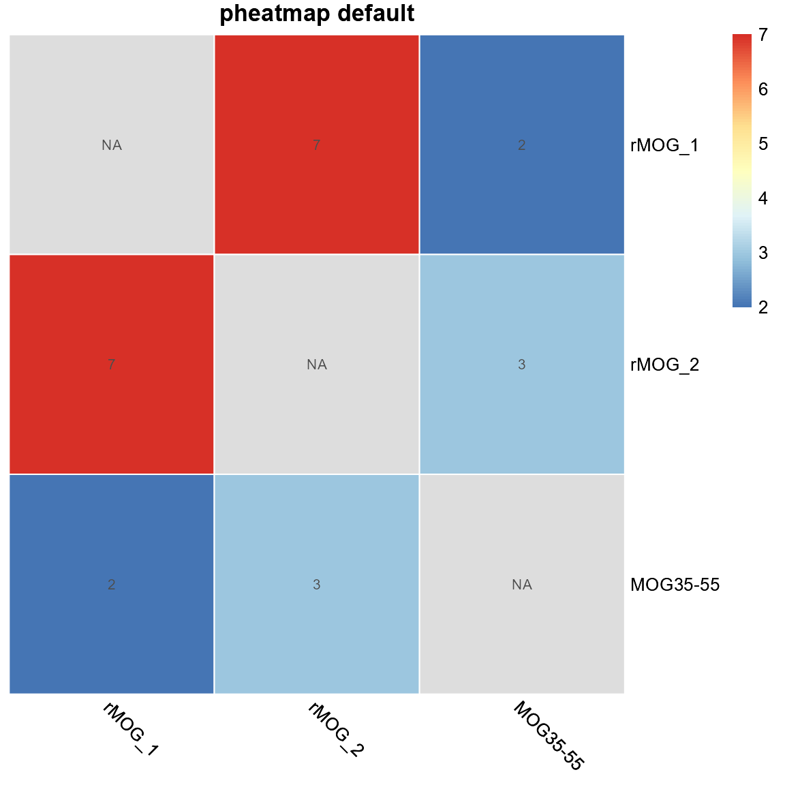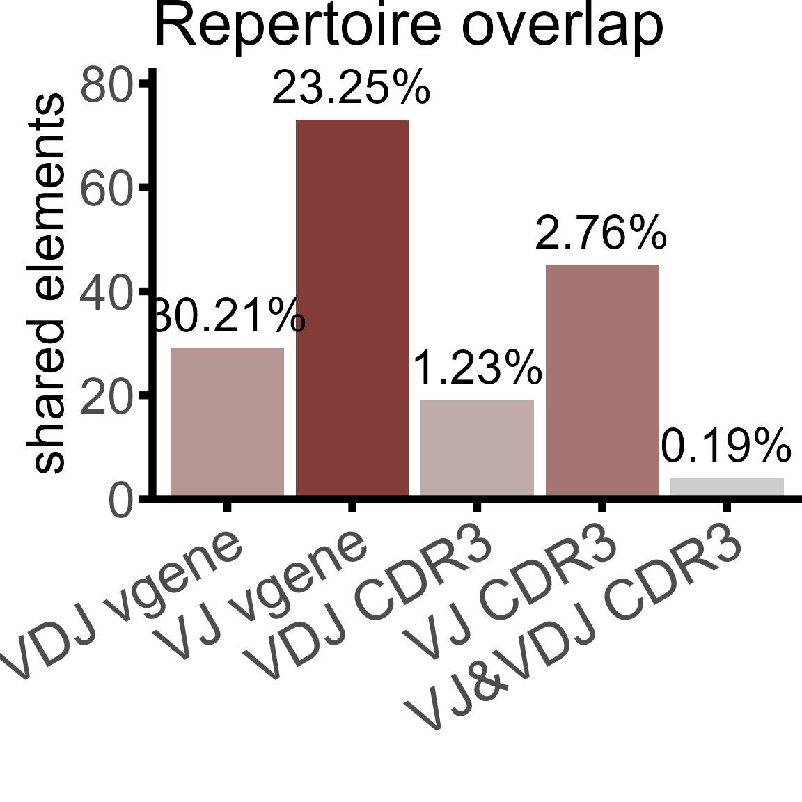
To get the table of overlapping clones
## overlapping_items VJ_cdr3s_aa VDJ_cdr3s_aa Freq in rMOG_1
## 1 CAVSMSNYNVLYF/CASSIGEYEQYF CAVSMSNYNVLYF CASSIGEYEQYF 48
## 2 CALEGDTGYQNFYF/CGARTTNERLFF CALEGDTGYQNFYF CGARTTNERLFF 7
## 3 CAASNYNQGKLIF/CGARDTQDTQYF CAASNYNQGKLIF CGARDTQDTQYF 27
## 4 CAASNYNNNAPRF/CASNTGTGPFNERLFF CAASNYNNNAPRF CASNTGTGPFNERLFF 1
## 5 CALSDTGSGGKLTL/CASSFQGAPKVFF CALSDTGSGGKLTL CASSFQGAPKVFF 2
## 6 CAVSRYNQGKLIF/CASSLIQGANSDYTF CAVSRYNQGKLIF CASSLIQGANSDYTF 1
## Barcodes rMOG_1
## 1 s1_AAACGGGGTGGTACAG-1;s1_AAAGTAGGTTGAACTC-1;s1_AACACGTAGCTCTCGG-1;s1_AAGGCAGCAGCGTTCG-1;s1_AATCCAGCAAAGTGCG-1;s1_ACATGGTGTCGTTGTA-1;s1_ACGCCAGAGTGTCCAT-1;s1_ACTATCTAGCCATCGC-1;s1_ACTGATGCATTGCGGC-1;s1_ACTGATGGTTCAGTAC-1;s1_ACTTGTTCATCCGGGT-1;s1_AGAGCGAGTGTAATGA-1;s1_AGCATACCAAGCCCAC-1;s1_AGTAGTCGTCGCCATG-1;s1_AGTCTTTCACGAAATA-1;s1_ATAAGAGTCTCTGTCG-1;s1_ATCATCTAGGCGTACA-1;s1_ATCATGGCAGACGTAG-1;s1_CATCCACAGGTCATCT-1;s1_CCCTCCTGTGCGAAAC-1;s1_CGAACATGTGCCTGTG-1;s1_CGTCTACGTCCTCTTG-1;s1_CTCACACAGCGCCTCA-1;s1_CTCACACGTGGCCCTA-1;s1_CTCGGAGGTGGTACAG-1;s1_CTGGTCTTCACCTTAT-1;s1_GAAATGAGTTGGTGGA-1;s1_GAACATCGTACCTACA-1;s1_GAATGAATCGTTACGA-1;s1_GACCAATGTTTGTGTG-1;s1_GACGTTAAGTGAAGAG-1;s1_GCACTCTGTACCCAAT-1;s1_GCACTCTTCAACGAAA-1;s1_GCAGCCATCACCACCT-1;s1_GCGACCATCTGGCGTG-1;s1_GGAATAATCGTATCAG-1;s1_GGACAAGTCCCTTGTG-1;s1_GGAGCAACAGACGCTC-1;s1_GGGACCTAGCCAGAAC-1;s1_GGTATTGAGTTAGCGG-1;s1_GTGAAGGGTTGTCGCG-1;s1_GTGCATATCTGCAGTA-1;s1_GTGTTAGCACCTATCC-1;s1_TACTTACGTACTCTCC-1;s1_TTCTCCTTCGCGTTTC-1;s1_TTCTCCTTCTGTTTGT-1;s1_TTCTTAGTCACATAGC-1;s1_TTGGCAATCTGTCTAT-1
## 2 s1_AACCGCGAGCTTATCG-1;s1_ACGAGGAAGCTGTCTA-1;s1_AGGCCGTAGGGAAACA-1;s1_CACACTCTCCGAAGAG-1;s1_CATGACATCCCTGACT-1;s1_CCCTCCTGTTCGTTGA-1;s1_CTCGAAATCCGATATG-1
## 3 s1_AAGTCTGGTTGAGGTG-1;s1_ACATGGTGTCCTCCAT-1;s1_ACGATGTTCGTAGATC-1;s1_ACGCCAGTCCAAAGTC-1;s1_AGCGGTCCAGACACTT-1;s1_CAAGGCCGTTCTGTTT-1;s1_CACATTTAGGTCGGAT-1;s1_CAGTCCTAGATGTAAC-1;s1_CCCTCCTTCACTATTC-1;s1_CGGACTGGTTCACCTC-1;s1_CTACATTTCATCGATG-1;s1_CTGAAGTGTTACAGAA-1;s1_GAAGCAGAGAGTCTGG-1;s1_GACACGCTCCGTAGGC-1;s1_GACTGCGCATCACGAT-1;s1_GCAATCAGTTAAAGAC-1;s1_GCGCGATGTTATCCGA-1;s1_GCTTGAACAAAGCGGT-1;s1_GGCAATTAGAAGGGTA-1;s1_TACGGGCGTAGCTAAA-1;s1_TAGGCATGTCTCCACT-1;s1_TAGTGGTGTCGGGTCT-1;s1_TCAGGTAAGAAGCCCA-1;s1_TCTATTGTCTGGAGCC-1;s1_TGCGCAGGTGCAGTAG-1;s1_TTCCCAGAGTCGCCGT-1;s1_TTCTACACAAATTGCC-1
## 4 s1_CAAGGCCAGGAGCGAG-1
## 5 s1_CCTACCATCAATCTCT-1;s1_TCACAAGCACTTAAGC-1
## 6 s1_CGAATGTAGCAATCTC-1
## Freq in rMOG_2
## 1 9
## 2 3
## 3 14
## 4 41
## 5 1
## 6 21
## Barcodes rMOG_2
## 1 s2_ACACCGGCATGGGAAC-1;s2_ATTATCCCAGCCAGAA-1;s2_CAAGATCCACGAAGCA-1;s2_CGACCTTGTTAAGAAC-1;s2_CTAATGGAGACCGGAT-1;s2_CTAGCCTAGGCAATTA-1;s2_TGAGCCGGTGGTTTCA-1;s2_TGCTACCTCTATGTGG-1;s2_TTATGCTCACAGACAG-1
## 2 s2_ACTTGTTGTGAGGGAG-1;s2_CGTAGGCTCACCACCT-1;s2_GACGCGTTCGCCAGCA-1
## 3 s2_AAAGTAGCAACTGCGC-1;s2_ACATACGGTTGTCTTT-1;s2_ACGAGGATCCGTTGCT-1;s2_ATTTCTGGTTCTGGTA-1;s2_CCCTCCTTCAGGCGAA-1;s2_CGCGTTTCAATGGTCT-1;s2_CGCTGGACAGGTGCCT-1;s2_CGGAGTCGTTATGCGT-1;s2_CTACACCCAAGAAGAG-1;s2_GATGAAACACTCAGGC-1;s2_GATTCAGCAACACCTA-1;s2_GGAACTTAGGCCGAAT-1;s2_TATTACCAGTCCCACG-1;s2_TTAACTCCAAGAGTCG-1
## 4 s2_AACACGTCAGACGCTC-1;s2_AAGACCTCAAACGTGG-1;s2_ACACCAAGTCAGAAGC-1;s2_ACGATACGTCCGTGAC-1;s2_ACTGTCCTCTGCGTAA-1;s2_AGAGCTTTCGCGATCG-1;s2_AGCCTAACATATACGC-1;s2_AGGGATGTCGGTCTAA-1;s2_AGGTCCGAGTAGCGGT-1;s2_ATCACGAAGACAGAGA-1;s2_ATCCACCTCATCTGCC-1;s2_CAAGTTGGTGATAAAC-1;s2_CACAAACCAATGGATA-1;s2_CACACAACATCGGTTA-1;s2_CACACAAGTGAGGCTA-1;s2_CACATAGTCGTTGACA-1;s2_CGAGCCAGTCTCTTTA-1;s2_CGTCAGGTCGCGATCG-1;s2_CTACATTCATCCCACT-1;s2_CTCGGGAGTATAGTAG-1;s2_CTTAACTCATCGATTG-1;s2_CTTAGGAGTCTGCCAG-1;s2_GACGTGCAGCTAAGAT-1;s2_GATCTAGTCCAAGCCG-1;s2_GATCTAGTCGAACTGT-1;s2_GCGGGTTCAGCTGCAC-1;s2_GGCGACTGTTCGTGAT-1;s2_GGTATTGCAGACAAAT-1;s2_GTAACGTTCGCCTGAG-1;s2_GTGGGTCAGAATCTCC-1;s2_GTTCATTCAGTGGGAT-1;s2_TAAACCGAGTTCCACA-1;s2_TACTCATAGAGCCCAA-1;s2_TATCTCAGTATTACCG-1;s2_TATCTCATCACTTCAT-1;s2_TATTACCGTTAAGTAG-1;s2_TCGAGGCGTAAACGCG-1;s2_TGACGGCAGAGGGCTT-1;s2_TGCTACCTCACTGGGC-1;s2_TGGTTCCGTGACTACT-1;s2_TTCGGTCAGACACTAA-1
## 5 s2_GATGAGGAGTCTCGGC-1
## 6 s2_ACTGCTCGTTCGGGCT-1;s2_AGTAGTCGTCTCCACT-1;s2_AGTAGTCTCACAATGC-1;s2_CAGCGACTCTGTCAAG-1;s2_CATGCCTCAAGGGTCA-1;s2_CCCTCCTAGAGCTATA-1;s2_CGATTGATCCGTCAAA-1;s2_CGGAGCTGTGCAGTAG-1;s2_CGTGTCTAGGTGCAAC-1;s2_CTGTGCTAGTCGATAA-1;s2_GCGACCAGTCTCGTTC-1;s2_GGGAGATAGGAGTCTG-1;s2_GGTGAAGAGAGCTATA-1;s2_GTGCAGCTCTTAGAGC-1;s2_GTTCTCGTCAACGGCC-1;s2_TACACGACAAGCTGAG-1;s2_TAGCCGGGTCTTCTCG-1;s2_TGAGCCGAGCTATGCT-1;s2_TGTGGTAGTTACGCGC-1;s2_TTTACTGAGCTGATAA-1;s2_TTTCCTCCAAACGCGA-1
## Freq in MOG35-55
## 1 6
## 2 0
## 3 0
## 4 0
## 5 0
## 6 0
## Barcodes MOG35-55
## 1 s3_ACACCCTCATCTACGA-1;s3_CGATGTACAGATCTGT-1;s3_CGTCACTGTCGACTGC-1;s3_CTAACTTGTGGGTCAA-1;s3_CTTTGCGTCAACACGT-1;s3_TCGAGGCCATTACCTT-1
## 2
## 3
## 4
## 5
## 6To visualize clone similarity across repertoires, we can also generate a similarity network. This can either filter out those unconnected clones (recommended for visualization purposes) or draw connections and show all nodes. Each node is a clone and the edge indicates that the distance between the two clones (based on CDR3) is less than the number supplied in the VDJ_network function
#get unique clones to avoid cluttering
vgm_t[[1]]$sample_clone <- paste0(vgm_t[[1]]$sample_id, vgm_t[[1]]$clonotype_id_10x)
vgm_t_unique_clones <- subset(vgm_t[[1]][which(!duplicated(vgm_t[[1]]$sample_clone)),], clonotype_frequency > 5) #filtering: only one cell of each clone with a freq > 10
vgm_t_unique_clones$group_id <- as.character(vgm_t_unique_clones$group_id)
vgm_t_unique_clones$group_id[vgm_t_unique_clones$sample_id == "rMOG_1"] <- samples_color[1] #renewing the group id with the respective sample colors
vgm_t_unique_clones$group_id[vgm_t_unique_clones$sample_id == "rMOG_2"] <- samples_color[2]
vgm_t_unique_clones$group_id[vgm_t_unique_clones$sample_id == "MOG35-55"] <- samples_color[3]
#make a loop to plot for each sample a range of distance cutoff values
pdf(file = "Tcs_VDJ_network_filtered.pdf")
for(j in 3:12){ #here we generate a plot with different edit distance cutoffs to explore how the network behaves
netwo <- VDJ_network(VDJ = vgm_t_unique_clones,distance.cutoff = j,per.sample = F,platypus.version = "v3")
igraph::plot.igraph(netwo[[4]],vertex.label=NA,vertex.size=5+(.03*as.numeric(netwo[[2]]$clonotype_frequency)),vertex.color=netwo[[2]]$group_id)
}
dev.off()## agg_png
## 2
#for the purpose of this document, we view the plot at j = 9
netwo <- VDJ_network(VDJ = vgm_t_unique_clones,distance.cutoff = 9,per.sample = F,platypus.version = "v3")
igraph::plot.igraph(netwo[[4]],vertex.label=NA,vertex.size=5+(.03*as.numeric(netwo[[2]]$clonotype_frequency)),vertex.color=netwo[[2]]$group_id)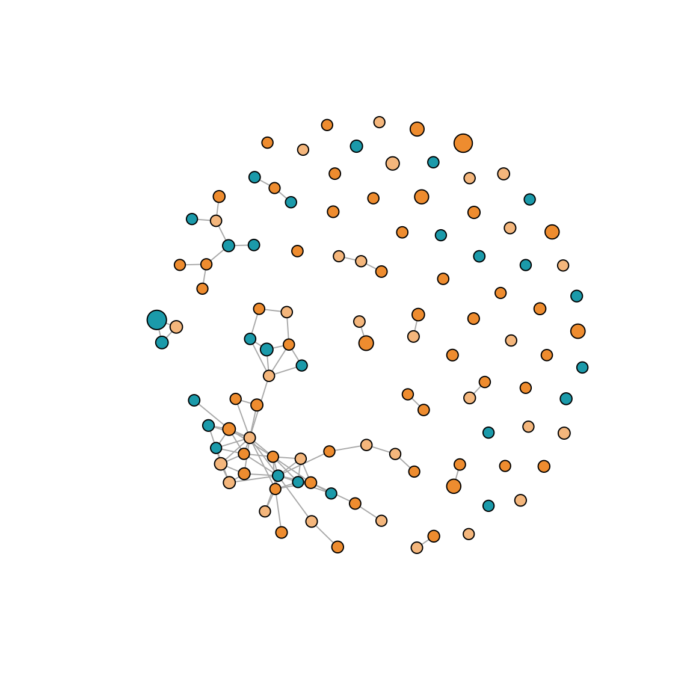
Integrating VDJ and GEX sequencing information for T cells
The first step is to check how well these two datasets overlap.
Nr. of cells in VDJ for which GEX info is available
GEX_av <- vgm_t[[1]] %>% group_by(sample_id) %>% summarize(av = sum(GEX_available), not_av = n()-sum(GEX_available)) #Can use the sum of this column as in R, TRUE is counted as numeric 1 and FALSE as numeric 0
GEX_av <- pivot_longer(GEX_av, cols = c(2,3))
plot_out <- list()
for(i in 1:3){
GEX_av_plot <- subset(GEX_av, sample_id == unique(GEX_av$sample_id)[i])
plot_out[[i]] <- ggplot(GEX_av_plot, aes(x = "", y=value, fill= name))+ geom_bar(stat = "identity", width = 1, show.legend = F)+ scale_fill_manual(values = c("darkorchid3","grey60"))+ coord_polar("y", direction = -1)+ theme(panel.background = element_blank(),axis.text.x = element_blank(),axis.text.y = element_blank(), axis.line = element_blank(), axis.ticks = element_blank(), text = element_text(size=30), legend.key = element_rect(colour = "grey"),legend.key.height = NULL,legend.key.width = NULL, legend.position = "right",legend.direction = "vertical", plot.title = element_text(size = 20,hjust = 0.5)) + labs(x = "", y = "", title = paste0(unique(GEX_av$sample_id)[i])) + geom_text(x = 1, hjust = 1.5, vjust = 0.8, y = 1, label = GEX_av_plot$value[GEX_av_plot$name == "not_av"], color = "white", fontface = "bold", size = 8) + geom_text(x = 1, hjust = -0.5, vjust = 0.8, y = 1, label = GEX_av_plot$value[GEX_av_plot$name == "av"], color = "white", fontface = "bold", size = 8) + geom_point(inherit.aes = F, aes(x = 0, y = 1), color = "white", size = 25)
#ggsave(plot_out[[i]], filename = paste0("GEX_available_pie_",plot_out[[i]]$labels$title ,".png"), dpi = 600, width = 5, height = 5)
}
print("Purple = Cells in VDJ for which GEX information is available")## [1] "Purple = Cells in VDJ for which GEX information is available"
print(plot_out)## [[1]]##
## [[2]]##
## [[3]]
print(GEX_av)## # A tibble: 6 x 3
## sample_id name value
## <ord> <chr> <int>
## 1 rMOG_1 av 1983
## 2 rMOG_1 not_av 182
## 3 rMOG_2 av 1329
## 4 rMOG_2 not_av 75
## 5 MOG35-55 av 1120
## 6 MOG35-55 not_av 122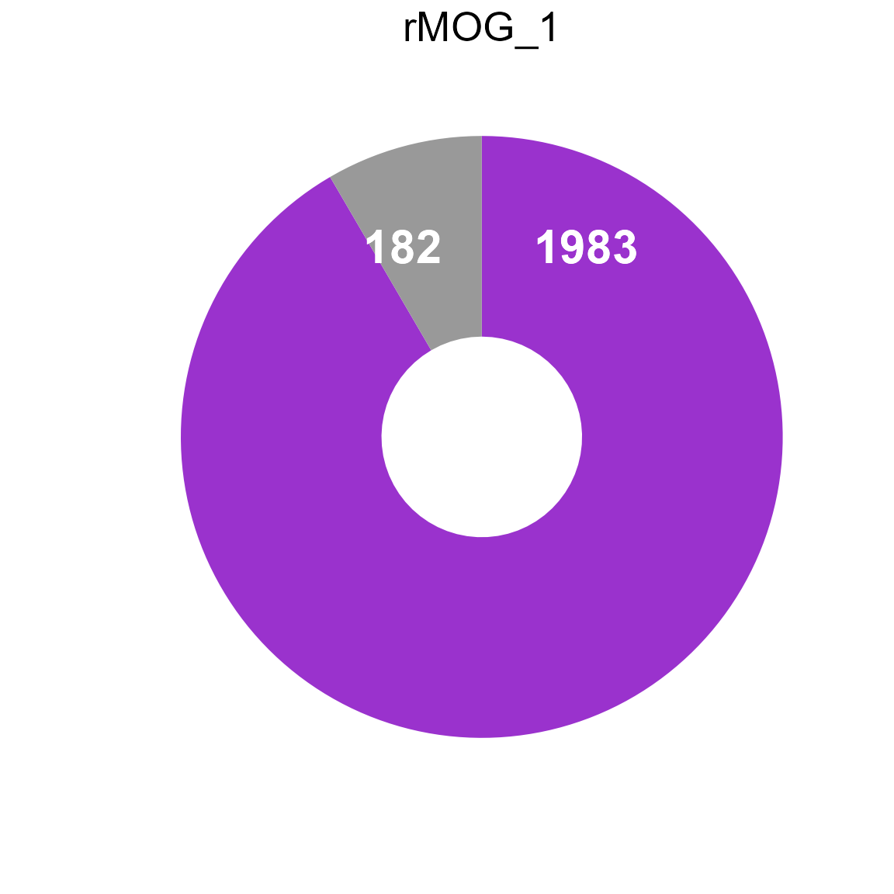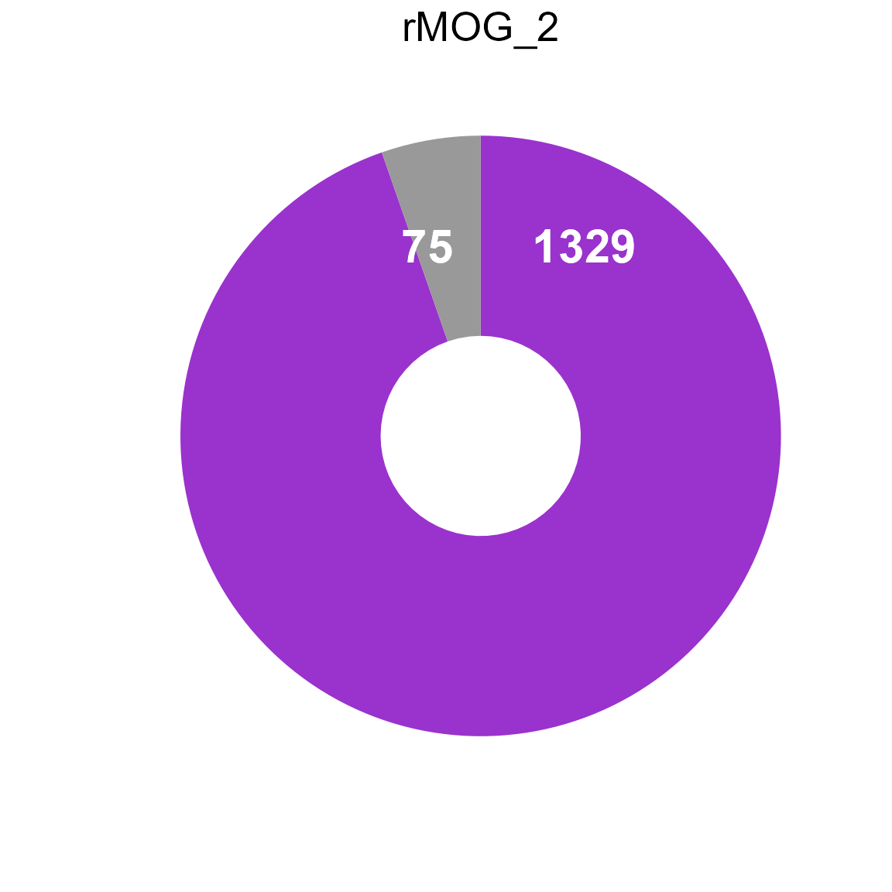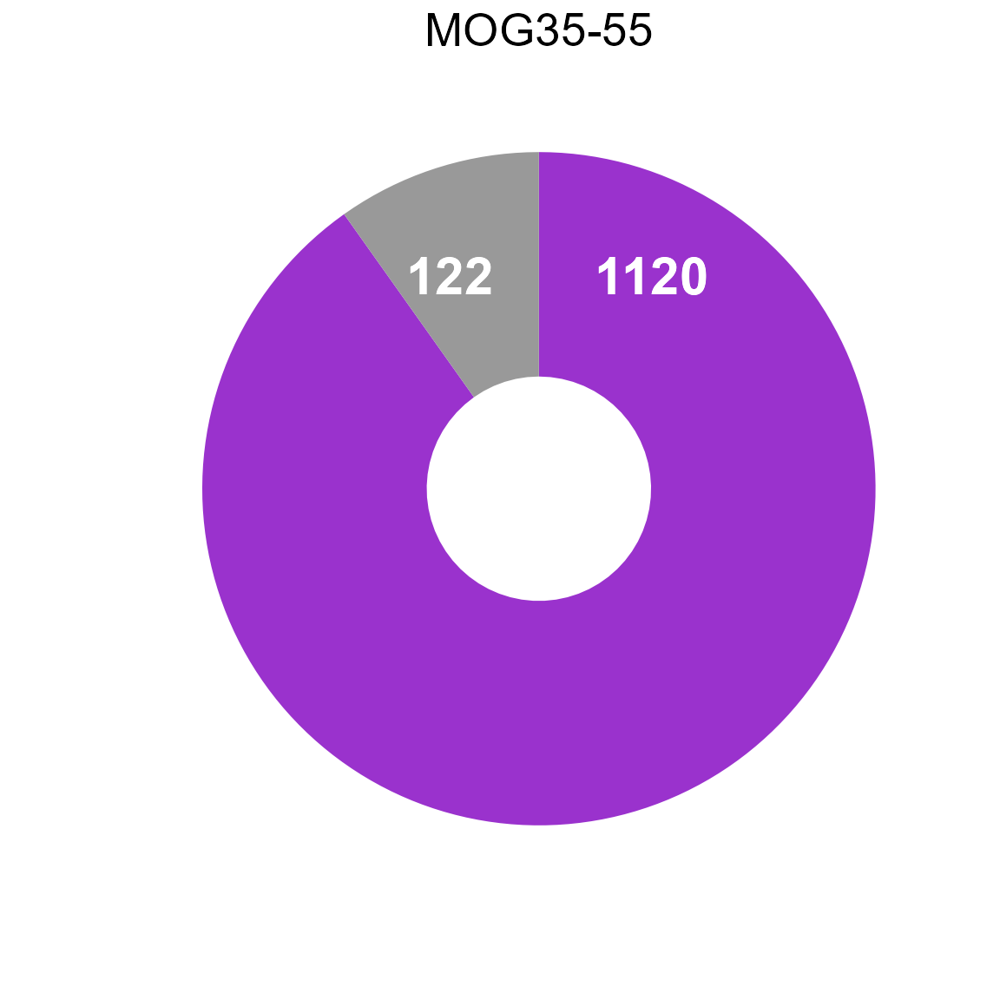
Nr. of cells in GEX for which VDJ info is available
VDJ_av <- vgm_t[[2]]@meta.data %>% group_by(sample_id) %>% summarize(av = sum(VDJ_available), not_av = n()-sum(VDJ_available))
VDJ_av <- pivot_longer(VDJ_av, cols = c(2,3))
plot_out <- list()
for(i in 1:3){
VDJ_av_plot <- subset(VDJ_av, sample_id == unique(VDJ_av$sample_id)[i])
plot_out[[i]] <- ggplot(VDJ_av_plot, aes(x = "", y=value, fill= name))+ geom_bar(stat = "identity", width = 1, show.legend = F)+ scale_fill_manual(values = c("darkorchid3","grey60"))+ coord_polar("y", direction = -1)+ theme(panel.background = element_blank(),axis.text.x = element_blank(),axis.text.y = element_blank(), axis.line = element_blank(), axis.ticks = element_blank(), text = element_text(size=30), legend.key = element_rect(colour = "grey"),legend.key.height = NULL,legend.key.width = NULL, legend.position = "right",legend.direction = "vertical", plot.title = element_text(size = 20,hjust = 0.5)) + labs(x = "", y = "", title = paste0(unique(GEX_av$sample_id)[i])) + geom_text(x = 1, hjust = 1.5, vjust = 0.8, y = 1, label = GEX_av_plot$value[GEX_av_plot$name == "not_av"], color = "white", fontface = "bold", size = 8) + geom_text(x = 1, hjust = -0.5, vjust = 0.8, y = 1, label = GEX_av_plot$value[GEX_av_plot$name == "av"], color = "white", fontface = "bold", size = 8) + geom_point(inherit.aes = F, aes(x = 0, y = 1), color = "white", size = 25)
#ggsave(plot_out[[i]], filename = paste0("VDJ_available_pie_",plot_out[[i]]$labels$title ,".png"), dpi = 600, width = 5, height = 5)
}
print("Purple = Cells in GEX for which VDJ information is available")## [1] "Purple = Cells in GEX for which VDJ information is available"
print(plot_out)## [[1]]##
## [[2]]##
## [[3]]
print(VDJ_av)## # A tibble: 6 x 3
## sample_id name value
## <ord> <chr> <int>
## 1 rMOG_1 av 1983
## 2 rMOG_1 not_av 503
## 3 rMOG_2 av 1329
## 4 rMOG_2 not_av 272
## 5 MOG35-55 av 1120
## 6 MOG35-55 not_av 237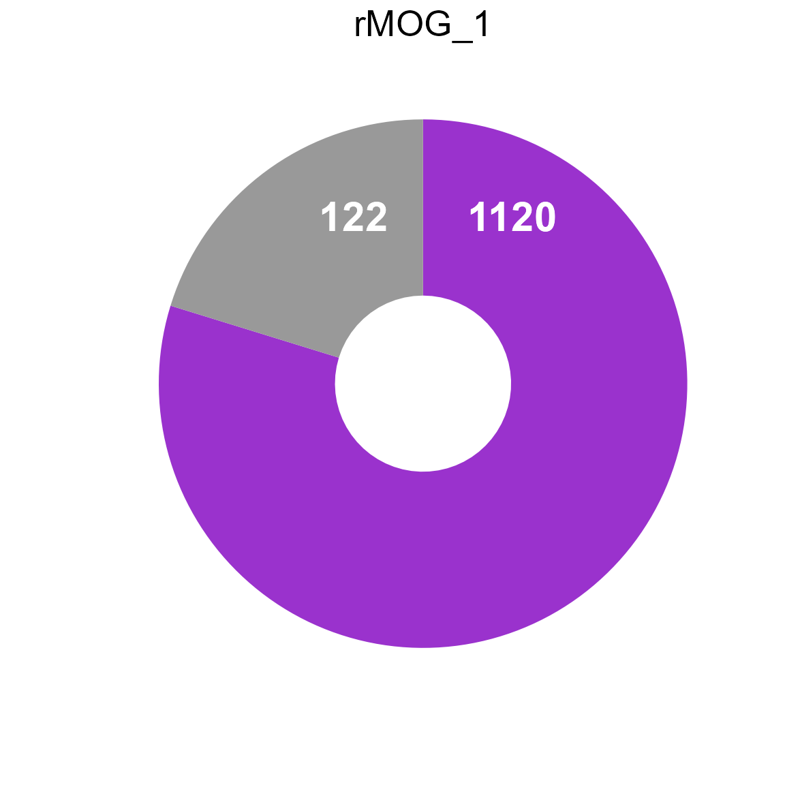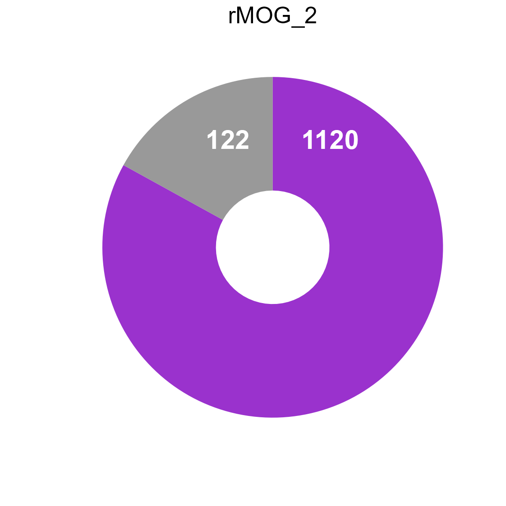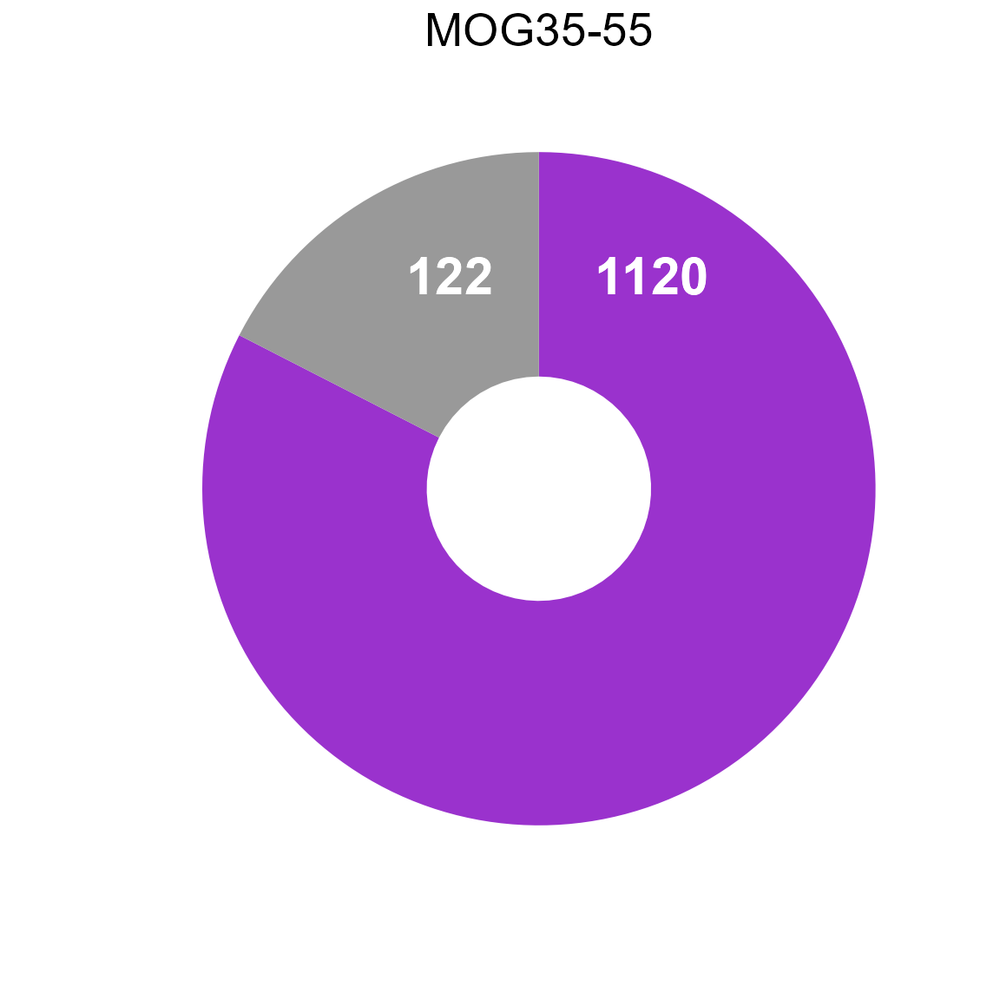
As a second step we now overlay VDJ information onto the GEX umap
#Add a discrete scale for expansion (To plot a continuos scale, use Seurat::FeaturePlot(..., features = "clonotype_frequency"))
vgm_t[[2]]$expanded <- vgm_t[[2]]$clonotype_frequency
vgm_t[[2]]$expanded[vgm_t[[2]]$clonotype_frequency > 1] <- "Expanded"
vgm_t[[2]]$expanded[vgm_t[[2]]$clonotype_frequency == 1] <- "1 cell"
vgm_t[[2]]$expanded[vgm_t[[2]]$VDJ_available == F] <- "VDJ not available"
plot_out <- Seurat::DimPlot(vgm_t[[2]],reduction = "umap", group.by = "expanded", cols = c("grey30","darkorchid3","grey80"), shuffle = T)+ theme(axis.text.y = element_blank(),axis.text.x = element_blank(),axis.line=element_blank(),axis.ticks = element_blank(), legend.position = "right")
plot_ <- plot_out + theme( axis.ticks = element_blank(), legend.position = "right",plot.title =element_blank(),axis.line=element_line(size = 1),axis.text = element_blank(), legend.title = element_text(size = 14, face = "bold")) + labs(color = "Clonal level", x = "UMAP1", y = "UMAP2") +guides(color=guide_legend(nrow=3,byrow=TRUE, override.aes = list(size=4)))
plot_
#ggsave(plot = plot_ , filename = "Tcs_GEXVDJ_expansion_discrete.svg", dpi = 700, width = 6.8, height = 5) Proportion barplots again help us visualize differential distribution among clusters
#adding a combination column
vgm_t[[2]]$sample_expanded <- paste0(vgm_t[[2]]$expanded, " ", vgm_t[[2]]$sample_id)
vgm_t[[2]]$sample_expanded[str_detect(vgm_t[[2]]$sample_expanded, "VDJ not available")] <- "VDJ not available" #Here we replace sample specific VDJ not available with a general one (e.g. rMOG_1 VDJ not available -> VDJ not available)
vgm_t[[2]]$sample_expanded <- ordered(as.factor(vgm_t[[2]]$sample_expanded), levels = c("Expanded rMOG_1", "1 cell rMOG_1","Expanded rMOG_2", "1 cell rMOG_2", "Expanded MOG35-55", "1 cell MOG35-55", "VDJ not available"))
plot_out <- GEX_proportions_barplot(GEX = vgm_t[[2]], source.group = "seurat_clusters", target.group = "sample_expanded", stacked.plot = T)## [1] "Ordering based on existing source group factor levels"
## [1] 2 2 2 2 2 2 2 2 0 0 0 0 0 0 0 0 8 8 8 8 8 8 8 8 9
## [26] 9 9 9 9 9 9 9 6 6 6 6 6 6 6 6 5 5 5 5 5 5 5 5 1 1
## [51] 1 1 1 1 1 1 4 4 4 4 4 4 4 4 3 3 3 3 3 3 3 3 10 10 10
## [76] 10 10 10 10 10 7 7 7 7 7 7 7 7
## Levels: 0 < 1 < 2 < 3 < 4 < 5 < 6 < 7 < 8 < 9 < 10
## [1] "Ordering based on existing target group factor levels"
## [1] "Returning stacked barplot with y axis = % of cells of target group"
plot_out <- plot_out + scale_fill_manual(values = pals::kelly(n = 17)[c(2,3,17,7:13,6,16)]) + theme(panel.background = element_blank(),axis.text = element_text(size = 18), axis.line = element_line(size = 2), axis.ticks = element_line(size = 2), axis.ticks.length = unit(0.25, "cm"), text = element_text(size=26), legend.key = element_rect(colour = "white"),legend.key.height = NULL,legend.key.width = NULL, legend.position = "right", axis.text.x = element_text(angle = 45, hjust = 1, vjust = 1), plot.margin = margin(l = 1, t = 1, unit = "cm"), legend.title = element_text(size = 18, face = "bold")) + labs(y = "% of cells of T cell group", x = "", fill = "Cluster")
plot_out## Warning: Removed 11 rows containing missing values (position_stack).
#ggsave(plot = plot_out, filename = paste0("Tcs_prop_sampleexpanded.svg"), dpi = 700, width = 10, height = 9) We are now ready to examine individual clones and their transcriptional phenotypes The VDJ_clonal_expansion function gives great flexibility.
- Expansion barplots by cluster (plotting by group ID given the large overlap between rMOG samples)
clonal_out <- VDJ_clonal_expansion(VDJ = vgm_t[[1]],celltype = "Tcells",clones = "50", platypus.version = "v3", group.by = "group_id", color.by = "seurat_clusters")
for(i in 1:length(clonal_out[[1]])){ #as this function will return a nested list of source dataframes and plots we loop over the output to refine the given plots
clonal_out[[1]][[i]] <- clonal_out[[1]][[i]] + theme(panel.background = element_blank(),axis.text.x = element_text(size = 25),axis.text.y = element_text(size = 30), axis.line.x = element_line(size = 2),axis.line.y = element_line(size = 2), axis.ticks = element_line(size = 2), axis.ticks.length = unit(0.25, "cm"), text = element_text(size=30), legend.key = element_rect(colour = "grey"),legend.key.height = NULL,legend.key.width = NULL, legend.position = "bottom", plot.subtitle = element_text(size = 15), legend.title = element_text(size = 26, face = "bold")) + labs(title = unique(vgm_t[[1]]$group_id)[i]) + scale_fill_manual(values = c(pals::kelly(n = 17)[c(2,3,17,7,8,9,10,13,6,16)], "grey40","grey40")) + labs(fill = "Cluster", y = "n cells")+ ggplot2::scale_y_continuous(expand = c(0,0))
#ggsave(plot = clonal_out[[1]][[i]], filename = paste0("Tcs_cluster_per_clone_s_", unique(vgm_t[[1]]$group_id)[i],".svg"), dpi = 400, width = 11, height = 7)
}## Scale for 'fill' is already present. Adding another scale for 'fill', which
## will replace the existing scale.## Scale for 'y' is already present. Adding another scale for 'y', which will
## replace the existing scale.## Scale for 'fill' is already present. Adding another scale for 'fill', which
## will replace the existing scale.## Scale for 'y' is already present. Adding another scale for 'y', which will
## replace the existing scale.
clonal_out[[1]]## [[1]]##
## [[2]]- Expansion barplots by T cell subtype
#adding a column for T cell group
vgm_t[[2]]$Tc_group <- "Other"
vgm_t[[2]]$Tc_group[which(GetAssayData(vgm_t[[2]], assay = "RNA", slot = "counts")[which(rownames(vgm_t[[2]]) == "CD4"),] > 0)] <- "CD4 Th"
vgm_t[[2]]$Tc_group[which(GetAssayData(vgm_t[[2]], assay = "RNA", slot = "counts")[which(rownames(vgm_t[[2]]) == "CD8A"),] > 0)] <- "CD8 CTL"
vgm_t[[2]]$Tc_group[which(GetAssayData(vgm_t[[2]], assay = "RNA", slot = "counts")[which(rownames(vgm_t[[2]]) == "FOXP3"),] > 0)] <- "FOXP3 Treg"
vgm_t[[2]]$Tc_group <- ordered(as.factor(vgm_t[[2]]$Tc_group),levels = c("CD4 Th", "CD8 CTL", "FOXP3 Treg", "Other"))
#We transfer this extra T cell group column also to the VDJ matrix vgm_t[[1]] by barcode matching
vgm_t[[1]]$Tc_group <- "Other"
for(i in 1:3){
vgm_t[[1]]$Tc_group[which(vgm_t[[1]]$barcode %in% colnames(vgm_t[[2]])[which(vgm_t[[2]]$Tc_group == unique(vgm_t[[2]]$Tc_group)[i])])] <- as.character(unique(vgm_t[[2]]$Tc_group)[i])
}
#just checking that it worked
unique(vgm_t[[1]]$Tc_group)## [1] "CD4 Th" "Other" "FOXP3 Treg"
table(vgm_t[[1]]$Tc_group)##
## CD4 Th FOXP3 Treg Other
## 2512 193 2106##
## CD4 Th CD8 CTL FOXP3 Treg Other
## 2512 506 193 1221
clonal_out <- VDJ_clonal_expansion(VDJ = vgm_t[[1]],celltype = "Tcells",clones = "50", platypus.version = "v3", group.by = "group_id", color.by = "Tc_group")
for(i in 1:length(clonal_out[[1]])){
clonal_out[[1]][[i]] <- clonal_out[[1]][[i]] + theme(panel.background = element_blank(),axis.text.x = element_text(size = 25),axis.text.y = element_text(size = 30), axis.line.x = element_line(size = 2),axis.line.y = element_line(size = 2), axis.ticks = element_line(size = 2), axis.ticks.length = unit(0.25, "cm"), text = element_text(size=30), legend.key = element_rect(colour = "grey"),legend.key.height = NULL,legend.key.width = NULL, legend.position = "bottom", plot.subtitle = element_text(size = 15), legend.title = element_text(size = 26, face = "bold")) + labs(title = unique(vgm_t[[1]]$group_id)[i]) + scale_fill_manual(values = c(pals::stepped(n = 16)[c(6,1,9)],"grey80"), labels = c("CD4+ Th", "CD8+ CTL", "FOXP3+ Treg", "Other")) + labs(fill = "Subtype", y = "n cells")+ ggplot2::scale_y_continuous(expand = c(0,0))+guides(fill=guide_legend(nrow=3,byrow=TRUE))
#ggsave(plot = clonal_out[[1]][[i]], filename = paste0("Tcs_celltype_per_clone_s_", unique(vgm_t[[1]]$group_id)[i],".svg"), dpi = 400, width = 11, height = 7)
}## Scale for 'fill' is already present. Adding another scale for 'fill', which
## will replace the existing scale.## Scale for 'y' is already present. Adding another scale for 'y', which will
## replace the existing scale.## Scale for 'fill' is already present. Adding another scale for 'fill', which
## will replace the existing scale.## Scale for 'y' is already present. Adding another scale for 'y', which will
## replace the existing scale.
clonal_out[[1]]## [[1]]##
## [[2]]Proceeding to DEG analysis by expansion at T cell subtype level
#we join the expanded and T cell group to get a more detailed column. Then we use this column as input for the DEG genes analysis and find what sets these groups apart
vgm_t[[2]]$Tc_group_expanded <- paste0(vgm_t[[2]]$expanded, " ", vgm_t[[2]]$Tc_group)
vgm_t[[2]]$Tc_group_expanded <- ordered(as.factor(vgm_t[[2]]$Tc_group_expanded), levels = c("Expanded CD4 Th", "1 cell CD4 Th","Expanded CD8 CTL", "1 cell CD8 CTL","Expanded FOXP3 Treg", "1 cell FOXP3 Treg", "Expanded Other", "1 cell Other","VDJ not available CD4 Th", "VDJ not available CD8 CTL", "VDJ not available FOXP3 Treg", "VDJ not available Other"))
#Showing numbers
table(vgm_t[[2]]$Tc_group_expanded)##
## Expanded CD4 Th 1 cell CD4 Th
## 2042 470
## Expanded CD8 CTL 1 cell CD8 CTL
## 315 191
## Expanded FOXP3 Treg 1 cell FOXP3 Treg
## 44 149
## Expanded Other 1 cell Other
## 834 386
## VDJ not available CD4 Th VDJ not available CD8 CTL
## 269 89
## VDJ not available FOXP3 Treg VDJ not available Other
## 34 620First helper CD4+ cells (Th)
exp_DEGs <- GEX_DEgenes(vgm_t[[2]], min.pct = 0.25, grouping.column = "Tc_group_expanded",group1 = "Expanded CD4 Th", group2 = "1 cell CD4 Th", return.plot = "volcano", logFC = F)
#plot volcano
plot_out <- ggplot(exp_DEGs[[1]], aes(x = avg_logFC, y = -log10(p_val_adj), col = avg_logFC)) + geom_point(show.legend = F, size = 4, alpha = 1) + theme(panel.background = element_blank(),axis.text = element_text(size = 30), axis.line = element_line(size = 2), axis.ticks = element_line(size = 2, color = "black"), axis.ticks.length = unit(0.25, "cm"), text = element_text(size=30), legend.key = element_rect(colour = "grey"),legend.key.height = NULL,legend.key.width = NULL, legend.position = "none") + labs(x = "log2(avg FC)", y = "-log10(adj p)",title = "Expanded vs. 1 cell CD4+") + geom_text_repel(data = subset(exp_DEGs[[1]], -log10(p_val_adj) > 8 | SYMBOL %in% c("TCF7", "GZMB", "CD28", "CD69", "HIF1A", "TOX")), aes(x = avg_logFC, y = -log10(p_val_adj), label = SYMBOL, col = avg_logFC), inherit.aes = F, size = 7, segment.alpha = 1, max.overlaps = 40)+scale_color_gradient2(low = "grey10", mid = "grey60", high = "darkorchid3", midpoint = 0)
plot_out
#ggsave(plot_out, filename = "Tc_volc_cd4_expanded.svg", dpi = 400, width = 9, height = 7)Next: CD8+ CTLs
exp_DEGs <- GEX_DEgenes(vgm_t[[2]], min.pct = 0.25, grouping.column = "Tc_group_expanded",group1 = "Expanded CD8 CTL", group2 = "1 cell CD8 CTL", return.plot = "volcano", logFC = F)
#plot volcano
plot_out <- ggplot(exp_DEGs[[1]], aes(x = avg_logFC, y = -log10(p_val_adj), col = avg_logFC)) + geom_point(show.legend = F, size = 4, alpha = 0.6) + theme(panel.background = element_blank(),axis.text = element_text(size = 30), axis.line = element_line(size = 2), axis.ticks = element_line(size = 2, color = "black"), axis.ticks.length = unit(0.25, "cm"), text = element_text(size=30), legend.key = element_rect(colour = "grey"),legend.key.height = NULL,legend.key.width = NULL, legend.position = "none") + labs(x = "log2(avg FC)", y = "-log10(adj p)",title = "Expanded vs. 1 cell CD8+") + geom_text_repel(data = subset(exp_DEGs[[1]], -log10(p_val_adj) > 1.8 | SYMBOL %in% c("TCF7", "GZMB", "CD28", "CD69", "TOX", "JUN")), aes(x = avg_logFC, y = -log10(p_val_adj), label = SYMBOL, col = avg_logFC), inherit.aes = F, size = 7, segment.alpha = 1, max.overlaps = 40)+scale_color_gradient2(low = "grey10", mid = "grey60", high = "darkorchid3", midpoint = 0)
plot_out
#ggsave(plot_out, filename = "Tc_volc_cd8_expanded.svg", dpi = 400, width = 9, height = 7)And finally Tregs
exp_DEGs <- GEX_DEgenes(vgm_t[[2]], min.pct = 0.25, grouping.column = "Tc_group_expanded",group1 = "Expanded FOXP3 Treg", group2 = "1 cell FOXP3 Treg", return.plot = "volcano", logFC = F)
#plot volcano
plot_out <- ggplot(exp_DEGs[[1]], aes(x = avg_logFC, y = -log10(p_val_adj), col = avg_logFC)) + geom_point(show.legend = F, size = 4, alpha = 1) + theme(panel.background = element_blank(),axis.text = element_text(size = 23), axis.line = element_line(size = 2), axis.ticks = element_line(size = 2, color = "black"), axis.ticks.length = unit(0.25, "cm"), text = element_text(size=23), legend.key = element_rect(colour = "grey"),legend.key.height = NULL,legend.key.width = NULL, legend.position = "none") + labs(x = "log2(avg FC)", y = "-log10(adj p)",title = "Expanded vs. 1 cell FOXP3+") + geom_text_repel(data = subset(exp_DEGs[[1]], -log10(p_val_adj) > 0.4 | abs(avg_logFC) > 0.95), aes(x = avg_logFC, y = -log10(p_val_adj), label = SYMBOL, col = avg_logFC), inherit.aes = F, size = 7, segment.alpha = 1, max.overlaps = 40)+scale_color_gradient2(low = "grey10", mid = "grey60", high = "darkorchid3", midpoint = 0)
plot_out
#ggsave(plot_out, filename = "Tc_volc_foxp3_expanded.svg", dpi = 400, width = 9, height = 7)T cells VDJ GEX overview by ProjecTILs
A recent publication (Andreatta, M. et al. Interpretation of T cell states from single-cell transcriptomics data using reference atlases. Nat. Commun. 12, 2965 (2021)) put forward a reference atlas of murine T cells, onto which local single cell data can easily be projected. We use this to verify our observation about phenotypes of expanded T cells Much of this is copied from the papers vignette, which we highly recommend.
library(remotes)
library(ProjecTILs) #For installation instructions please refer to github carmonalab/ProjecTILs## Lade nötiges Paket: umap## Lade nötiges Paket: TILPRED## Lade nötiges Paket: Matrix##
## Attache Paket: 'Matrix'## The following objects are masked from 'package:tidyr':
##
## expand, pack, unpack
#ref <- load.reference.map() #If you do not have the reference dataset downloaded, it will download this for you. Loading is done via the same command.
#For me loading did not work as expected, so we downloaded the file manually via my browser (https://doi.org/10.6084/m9.figshare.12489518) and read it in
ref <- readRDS("C:/Dokumente usw/Master/Reddy Lab/1_thesis/3_code/4_DB project/EAE website vignette/ref_TILAtlas_mouse_v1.rds")
#Generating a dimplot of the reference
refCols <- c("#edbe2a", "#A58AFF", "#53B400", "#F8766D", "#00B6EB", "#d1cfcc", "#FF0000", "#87f6a5", "#e812dd")
DimPlot(ref,label = T, cols = refCols)
#And feature plots of the reference
markers <- c("Cd4","Cd8a","Ccr7","Tcf7","Pdcd1","Havcr2","Tox","Izumo1r","Cxcr6","Xcl1","Gzmb","Gzmk","Ifng","Foxp3")
VlnPlot(ref,features=markers,stack = T,flip = T,assay = "RNA")
Overlaying the query data (vgm_t[[2]]) to this reference
#make query projection
query.projected <- make.projection(vgm_t[[2]], ref=ref)## [1] "Using assay RNA for query"## Pre-filtering of T cells (TILPRED classifier)...## Warning in predictTilState(sce, human = human): The following
## genes were not found in the dataset provided CD8B,HLA-
## DRA,NAPSB,NCF1C,HLA-DQB1,HLA-DPA1,IGLL5,HLA-DQA1,HLA-DRB1,HLA-
## DMB,HLA-DPB1,FCER2,HLA-DOB,TCL1A,HLA-DRB5,NCF1B,ELK2AP,HLA-
## DMA,CYBASC3,IGJ,C1S,C1R,WISP2,CTGF,PLA2G2A,PTRF,CYR61,C10orf10,CCL14,DARC,CCL21,SERPINA1,FCGR3A,FCGR2A,FAM26F,MS4A6A,CTSL1,FCN1,IL8,SEPP1,SERPINA3,MT2A,KLRF1 .
## Doesn't look too bad but prediction performance might be affected.## Genes in the gene sets NOT available in the dataset:
## Tcell: 1 (12% of 8)
## B.cell: 19 (38% of 50)
## CAF: 5 (10% of 49)
## Endo.: 7 (15% of 46)
## Macrophage: 16 (35% of 46)
## Mal: 3 (7% of 45)
## NK: 2 (29% of 7)## [1] "2952 out of 5444 ( 54 % ) non-pure T cells removed. Use filter.cells=FALSE to avoid pre-filtering (NOT RECOMMENDED)"
## [1] "Transforming expression matrix into space of mouse orthologs"
## [1] "Aligning query to reference map for batch-correction..."## Computing within dataset neighborhoods## Finding all pairwise anchors## Projecting new data onto SVD
## Projecting new data onto SVD## Finding neighborhoods## Finding anchors## Found 1050 anchors##
## Projecting corrected query onto Reference PCA space
## [1] "Projecting corrected query onto Reference UMAP space"
#Plot overlay on umap as density
plot.projection(ref, query.projected)
#ggsave(plot = last_plot(), filename = "ProjecTILs_overlay.png", dpi = 700, width = 8, height = 6)
#Get a barplot of cell states
query.projected <- cellstate.predict(ref=ref, query=query.projected)## Creating slots functional.cluster and functional.cluster.conf in query object
plot.statepred.composition(ref, query.projected,metric = "Percent")## Lade nötiges Paket: reshape2##
## Attache Paket: 'reshape2'## The following object is masked from 'package:tidyr':
##
## smiths
#ggsave(plot = last_plot(), filename = "ProjecTILs_celltypes.png", dpi = 700, width = 6, height = 5)We can then use the expansion information to check for reference T cell phenotypes that match our expanded phenotype
#split by that
not_expanded <- subset(query.projected, expanded == "1 cell")
expanded <- subset(query.projected, expanded == "Expanded")
plot.projection(ref, expanded)
plot.projection(ref, not_expanded)
#summarize this and plot the same as an easy to view stacked barplot
melting <- query.projected@meta.data %>% group_by(expanded, functional.cluster) %>% summarise(n = n())
for_norm <- query.projected@meta.data %>% group_by(functional.cluster) %>% summarise(n_all = n())
melting <- merge(melting,for_norm, by ="functional.cluster", all.x = T)
melting$norm <- melting$n / melting$n_all * 100 #normalize frequencies across reference clusters
output.plot <- ggplot(melting, aes(fill = expanded, y=norm, x= functional.cluster)) + geom_bar(stat="identity", width=0.6, color="black", position = "stack") + ylab(paste0("% of cells of clonal group")) + xlab("ProjectTIL phenotype assignment") + scale_fill_manual(values = c("grey30","darkorchid3","grey70")) + theme(panel.background = element_blank(),axis.text = element_text(size = 18), axis.line = element_line(size = 2), axis.ticks = element_line(size = 2), axis.ticks.length = unit(0.25, "cm"), text = element_text(size=26), legend.key = element_rect(colour = "white"),legend.key.height = NULL,legend.key.width = NULL, legend.position = "right", axis.text.x = element_text(angle = 45, hjust = 1, vjust = 1), plot.margin = margin(l = 1, t = 1, unit = "cm"), legend.title = element_text(size = 18, face = "bold")) + labs(fill = "Clonal level")
output.plot
#ggsave(plot = output.plot, filename = paste0("ProjecTILs_stacked_expansion.png"), dpi = 700, width = 9, height = 9) T cells VDJ GEX integration of human data by Beltrán et al.
A second recent publication (Beltrán, E. et al. Early adaptive immune activation detected in monozygotic twins with prodromal multiple sclerosis. J. Clin. Invest. 129, 4758–4768 (2019)) about lymphocytes in the CNS of discordant twins (twins were one developed Multiple sclerosis, while the other has not) highlighted a resident memory-like phenotype of expanded T cells in MS as well as other inflammatory neurological conditions (SCNwe = subclinical neuroinflammation, Enc = autoimmune encephalitis, HD /NIC = Healthy donors, Non-inflammatory controls)
Here we load in the raw data of that publication to investigate if similar cellular patterns can be observed in murine EAE
#data downloaded and loaded loaded in manually from GEO GSE127969
#tpm <- read.delim("GSE127969_counts_TPM_ALL.csv.gz")
inf <- read.delim("C:/Dokumente usw/Master/Reddy Lab/1_thesis/3_code/4_DB project/EAE website vignette/GSE127969_sc_cell_info.txt.gz")
#bar <- read.delim("GSE127969_cellID_barcode_SRR.txt.gz")
#make Seurat object
#rownames(tpm) <- tpm$Symbol
#tpm <- tpm[,-c(1)]
#tpm_s <- CreateSeuratObject(tpm, names.delim = "/", names.field = 1)
#tpm <- NULL
#using a Platypus function to process raw reads
#tpm_s <- automate_GEX(GEX.list = list(tpm_s), GEX.outs.directory.list = "none")
#saveRDS(tpm_s, "Beltran_GEX.rds")
#Loading in a processed object for faster knitting
tpm_s <- readRDS("C:/Dokumente usw/Master/Reddy Lab/1_thesis/3_code/4_DB project/EAE website vignette/Beltran_GEX.rds")
#figure out which cells are which
inf_names <- str_extract(inf$Cell, "_[A-Z]\\d\\d")
tpm_names <- str_extract(colnames(tpm_s), "_[A-Z]\\d+")
#apparently there are a few more cells in info than in the object. Lets remove those
met <- tpm_s[[1]]@meta.data
met$Cell <- rownames(met)
new_met <- merge(met, inf, by = "Cell", all.x = T)
rownames(new_met) <- new_met$Cell
tpm_s <- AddMetaData(tpm_s[[1]], new_met) #make tpm_s a Seurat object instead of a list
#add expansion information based on clone column
tpm_s$Expanded <- "1 cell"
tpm_s$Expanded[which(tpm_s$Clones > 1 & tpm_s$Clones != "ND")] <- "Expanded"
tpm_s$exp_past <- paste0(tpm_s$Expanded, " ", tpm_s$index.sort)
tpm_s$exp_past_diag <- paste0(tpm_s$Expanded, " ", tpm_s$Case)
#SUBSET CD8
tpm_cd8 <- subset(tpm_s, index.sort == "CD8Tcell")
table(tpm_cd8$exp_past_diag )##
## 1 cell Enc 1 cell HD 1 cell MS 1 cell SCNI Expanded Enc
## 57 203 230 283 22
## Expanded HD Expanded MS Expanded SCNI
## 5 94 50
#order by condition and clonal level
tpm_cd8$exp_past_diag <- ordered(as.factor(tpm_cd8$exp_past_diag), levels = c("1 cell HD", "Expanded HD","1 cell SCNI", "Expanded SCNI", "1 cell MS", "Expanded MS", "1 cell Enc", "Expanded Enc"))
#plot dotmap
linesv <- seq.int(0,10,2) + 0.5
plot_out <- GEX_dottile_plot(tpm_cd8, genes = c("CD4", "CD8A","PTPRC","CCR7","SELL", "CD69","CXCR6", "CCR5","TCF7","S1PR1", "IL7R","TOX", "SOCS3","GZMB","TGFB1"), group.by = "exp_past_diag")+ labs(title = "Human CD8+ T cells") +geom_vline(xintercept = linesv, color = "black", size= 0.9) + scale_size_binned(range = c(1,13))## Scale for 'size' is already present. Adding another scale for 'size', which
## will replace the existing scale.
#for showing in the vignette
plot_out + theme(legend.position = "none")## Warning: Removed 18 rows containing missing values (geom_point).
#ggsave(plot_out, filename = "TcsBeltran_dottile_CD8_rel.svg", width = 11.5, height = 11.5, dpi = 300)
#SUBSET CD4
tpm_cd4 <- subset(tpm_s, index.sort == "CD4Tcell")
table(tpm_cd4$exp_past_diag )##
## 1 cell Enc 1 cell HD 1 cell MS 1 cell SCNI Expanded Enc
## 75 198 227 318 4
## Expanded HD Expanded MS Expanded SCNI
## 4 23 22
#order by condition and clonal level
tpm_cd4$exp_past_diag <- ordered(as.factor(tpm_cd4$exp_past_diag), levels = c( "1 cell HD", "Expanded HD","1 cell SCNI", "Expanded SCNI", "1 cell MS", "Expanded MS", "1 cell Enc", "Expanded Enc"))
#plot dotmap
linesv <- seq.int(0,10,2) + 0.5
plot_out <- GEX_dottile_plot(tpm_cd4, genes = c("CD4", "CD8A","PTPRC","CCR7","SELL", "CD69","CXCR6", "CCR5","TCF7","S1PR1", "IL7R","TOX", "SOCS3","GZMB","TGFB1"), group.by = "exp_past_diag") + labs(title = "Human CD4+ T cells") + theme(axis.text.x= element_text(vjust = 1, hjust = 1))+geom_vline(xintercept = linesv, color = "black", size= 0.9)+ scale_size_binned(range = c(1,13))## Scale for 'size' is already present. Adding another scale for 'size', which
## will replace the existing scale.
#for showing in the vignette
plot_out + theme(legend.position = "none")## Warning: Removed 30 rows containing missing values (geom_point).
#ggsave(plot_out, filename = "TcsBeltran_dottile_CD4_rel.svg", width = 10, height = 10, dpi = 300)
rm(bar)## Warning in rm(bar): Objekt 'bar' nicht gefunden## used (Mb) gc trigger (Mb) max used (Mb)
## Ncells 8919017 476.4 13861893 740.4 13861893 740.4
## Vcells 807018187 6157.1 2172926744 16578.2 1840482019 14041.8We follow this up with identical dottiles containing EAE and aged CNS data
#add expansion measures
vgm_EAEaged[[2]]$expanded <- "VDJ not available"
vgm_EAEaged[[2]]$expanded[vgm_EAEaged[[2]]$clonotype_frequency > 1] <- "Expanded"
vgm_EAEaged[[2]]$expanded[vgm_EAEaged[[2]]$clonotype_frequency == 1] <- "1 cell"
vgm_EAEaged[[2]]$expanded[vgm_EAEaged[[2]]$VDJ_available == F] <- "VDJ not available"
#we join the expanded and T cell group to get a more detailed column. Then we use this column as input for the DEG genes analysis and find what sets these groups apart
#t cell group
vgm_EAEaged[[2]]$Tc_group <- "Other"
vgm_EAEaged[[2]]$Tc_group[which(GetAssayData(vgm_EAEaged[[2]], assay = "RNA", slot = "counts")[which(rownames(vgm_EAEaged[[2]]) == "CD4"),] > 0)] <- "CD4"
vgm_EAEaged[[2]]$Tc_group[which(GetAssayData(vgm_EAEaged[[2]], assay = "RNA", slot = "counts")[which(rownames(vgm_EAEaged[[2]]) == "CD8A"),] > 0)] <- "CD8"
vgm_EAEaged[[2]]$Tc_group[which(GetAssayData(vgm_EAEaged[[2]], assay = "RNA", slot = "counts")[which(rownames(vgm_EAEaged[[2]]) == "FOXP3"),] > 0)] <- "FOXP3"
vgm_EAEaged[[2]]$group_expanded <- paste0(vgm_EAEaged[[2]]$expanded, " ", vgm_EAEaged[[2]]$group_id)
table(vgm_EAEaged[[2]]$group_expanded)##
## 1 cell aged CNS 1 cell EAE
## 293 1193
## Expanded aged CNS Expanded EAE
## 283 3222
## VDJ not available aged CNS VDJ not available EAE
## 128 1013
vgm_EAEaged_allGEX <- subset(vgm_EAEaged[[2]], expanded != "VDJ not available") #removing cells without VDJ information from GEX
vgm_EAEaged_allGEX$group_expanded <- ordered(as.factor(vgm_EAEaged_allGEX$group_expanded), levels = c("1 cell EAE", "Expanded EAE", "1 cell aged CNS", "Expanded aged CNS"))
#dottile CD8
plot_out <- GEX_dottile_plot(subset(vgm_EAEaged_allGEX, Tc_group == "CD8"), genes = c("CD4", "CD8A","PTPRC","CCR7","SELL", "CD69","CXCR6", "CCR5","TCF7","S1PR1", "IL7R","TOX", "SOCS3","GZMB","TGFB1"), group.by = "group_expanded")+ labs(title = "Murine CD8+ T cells")+ scale_size_binned(range = c(1,13))+geom_vline(xintercept = c(1.5,2.5,3.5), color = "black", size= 0.9)## Scale for 'size' is already present. Adding another scale for 'size', which
## will replace the existing scale.
plot_out + theme(legend.position = "none")## Warning: Removed 6 rows containing missing values (geom_point).
#ggsave(plot_out, filename = "TcsEAEaged_dottile_CD8_rel.svg", width = 10, height = 12, dpi = 300)
#dottile CD4
plot_out <- GEX_dottile_plot(subset(vgm_EAEaged_allGEX, Tc_group == "CD4"), genes = c("CD4", "CD8A","PTPRC","CCR7","SELL", "CD69","CXCR6", "CCR5","TCF7","S1PR1", "IL7R","TOX", "SOCS3","GZMB","TGFB1"), group.by = "group_expanded")+ labs(title = "Murine CD4+ T cells") + scale_size_binned(range = c(1,13))+geom_vline(xintercept = c(1.5,2.5,3.5), color = "black", size= 0.9)## Scale for 'size' is already present. Adding another scale for 'size', which
## will replace the existing scale.
plot_out + theme(legend.position = "none")## Warning: Removed 8 rows containing missing values (geom_point).
#ggsave(plot_out, filename = "TcsEAEaged_dottile_CD4_rel.svg", width = 10, height = 12, dpi = 300)As a final view of T cells in EAE and aged CNS, we can replot the umap from before, but overlay clonal expansion information
#Add group expansion identifier column
vgm_EAEaged[[2]]$group_expanded <- paste0(vgm_EAEaged[[2]]$group_id, " ", vgm_EAEaged[[2]]$expanded)
table(vgm_EAEaged[[2]]$group_expanded)##
## aged CNS 1 cell aged CNS Expanded
## 293 283
## aged CNS VDJ not available EAE 1 cell
## 128 1193
## EAE Expanded EAE VDJ not available
## 3222 1013
vgm_EAEaged[[2]]$group_expanded <- ordered(as.factor(vgm_EAEaged[[2]]$group_expanded), levels = c("EAE 1 cell", "EAE Expanded", "aged CNS 1 cell", "aged CNS Expanded", "EAE VDJ not available", "aged CNS VDJ not available"))
plot_out <- Seurat::DimPlot(vgm_EAEaged[[2]],reduction = "umap", group.by = "group_expanded", cols = c("grey30","darkorchid3", samples_color_aged[[5]], "gold2", "grey80" ,"grey80"), shuffle = T, pt.size = 1.1)+ theme(axis.text.y = element_blank(),axis.text.x = element_blank(),axis.line=element_blank(),axis.ticks = element_blank(), legend.position = "bottom")
plot_out <- plot_out + theme( axis.ticks = element_blank(), legend.position = "right",plot.title =element_blank(),axis.line=element_line(size = 1),axis.text = element_blank(), legend.title = element_text(size = 14, face = "bold")) + labs(color = "Clonal level", x = "UMAP1", y = "UMAP2") +guides(color=guide_legend(nrow=3,byrow=TRUE, override.aes = list(size=4)))
plot_out
#ggsave(plot = plot_ , filename = "Tcs_EAEaged_expansion_discrete.svg", dpi = 700, width = 10, height = 5) T cells MOG-specific TCRs by public dataset integration
A key goal was to validate the presence of MOG-specific T cells within our dataset. For this a literature search resulted in several T cell repertoire datasets in EAE. For dataset reference see publication
As part of this vignette we do not show the whole download and formatting process of these, but rather load in a formatted table of CDR3s
#comb <- readRDS("~/Combined VDJ_comb Literature MOG TCRs.rds")
unique(comb$group_id)## [1] "EAE" "Aged"
## [3] "Broder Engler 2019" "2D2 MOG-specific derivatives"
## [5] "MOG-specific Saligrama 2020" "Schliffke 2019"
## [7] "Martinez Riano 2019"
#minor corrections in naming scheme
comb$group_id <- gsub("MOG-specific ", "", comb$group_id)
comb$group_id <- gsub("Aged", "aged CNS", comb$group_id)
#addin a barcode column that the overlap function needs to generate an adjunct frequency table with tidy information
comb$barcode <- c(1:nrow(comb))
cdra_overlap <- VDJ_overlap_heatmap(VDJ = comb,
feature.columns = "VJ_cdr3s_aa",
grouping.column = "group_id",
pvalues.label.size = 6,
axis.label.size = 16,
add.barcode.table = T,
platypus.version = "v3",
plot.type = "pheatmap")
cdra_overlap[[1]]
#ggsave(last_plot(), filename = "MOGspec_Overlap_cdra.svg", dpi = 400, width = 6.5, height = 6.5)
cdrb_overlap <- VDJ_overlap_heatmap(VDJ = comb,
feature.columns = "VDJ_cdr3s_aa",
grouping.column = "group_id",
pvalues.label.size = 6,
axis.label.size = 16,
add.barcode.table = T,
platypus.version = "v3",
plot.type = "pheatmap")
cdrb_overlap[[1]]
#ggsave(cdrb_overlap[[1]], filename = "MOGspec_Overlap_cdrb.svg", dpi = 400, width = 6.5, height = 6.5)
We found two clones in the EAE MOG35-55 dataset that were reported to be MOG35-55-specific by Saligrama et al. Here we briefly explore the phenotypes of these cells
#add specificity info to VDJ...
vgm_t[[1]]$MOG_spec <- F
vgm_t[[1]]$MOG_spec[which(vgm_t[[1]]$VDJ_cdr3s_aa %in% c("CASGDAGGGQNTLYF", "CASSLETANTEVFF") | vgm_t[[1]]$VJ_cdr3s_aa %in% c("CAASEGQGGRALIF", "CAVSAGTNAYKVIF"))] <- T
#...and GEX table
vgm_t[[2]]$MOG_spec <- vgm_t[[2]]$clonotype_id_10x
vgm_t[[2]]$MOG_spec[which(!vgm_t[[2]]$VDJ_cdr3s_aa %in% c("CASGDAGGGQNTLYF", "CASSLETANTEVFF") | !vgm_t[[2]]$VJ_cdr3s_aa %in% c("CAASEGQGGRALIF", "CAVSAGTNAYKVIF"))] <- "FALSE"
#Standard dotmap first
genes_to_plot <- c("CD4","CD8A","CD28","ICOS","CD40LG","PDCD1","LAG3","S1PR1","PTPRC","SELL","TBX21","GATA3","SPI1","IRF4","BCL6","STAT4","STAT6","FOXP3", "MKI67","TCF7","TOX", "GZMB","IFNG","TGFB1","IL10","IL17A","CSF2","IL2RA","IL4RA","IL12RB1","CXCR3","CCR5","CCR8","ITGA4","ITGB2")
linesh <- c(0:length(genes_to_plot)) + 0.5
plot_out <- GEX_dottile_plot(GEX = vgm_t[[2]], genes = genes_to_plot, group.by = "MOG_spec", threshold.to.plot = 3) + labs(size = "% positive", color = "Expression", x = "MOG specific") + theme(plot.title = element_blank(), axis.title.x = element_text(), axis.text.x = element_text(size = 29, angle = 45, hjust = 1,vjust = 1)) +scale_size_binned(range = c(0.01,12)) + geom_hline(yintercept = linesh, col = "black", size = 0.9)+ scale_color_viridis_c(option = "B", end = 0.85)## Scale for 'size' is already present. Adding another scale for 'size', which
## will replace the existing scale.## Scale for 'colour' is already present. Adding another scale for 'colour',
## which will replace the existing scale.
#for showing in the vignette
plot_out + theme(legend.position = "none")## Warning: Removed 36 rows containing missing values (geom_point).
#ggsave(plot = plot_out, filename = "MOGspec_cluster_custom_genes_dottile.svg", dpi = 400, width = 8, height = 14.5)
#project onto umap
vgm_t[[2]]$MOG_spec_umap <- FALSE
vgm_t[[2]]$MOG_spec_umap[vgm_t[[2]]$MOG_spec != "FALSE"] <- T
plot_out <- VDJ_GEX_overlay_clones(GEX = vgm_t[[2]],reduction = "umap", by.sample = F, clones.to.plot = "MOG_spec_umap",ncol.facet = 1,pt.size = 0.6,split.plot.and.legend = T, platypus.version = "v3", by.other.group = F)## s_cl sample_id group_id clonotype_id_10x
## s1_AAACCTGCACATTAGC-1 rMOG_1clonotype79 rMOG_1 rMOG clonotype79
## s1_AAACCTGCAGCCTTGG-1 rMOG_1clonotype25 rMOG_1 rMOG clonotype25
## s1_AAACCTGGTACACCGC-1 rMOG_1clonotype28 rMOG_1 rMOG clonotype28
## s1_AAACCTGGTCGGCTCA-1 rMOG_1NA rMOG_1 rMOG <NA>
## s1_AAACCTGGTTATGTGC-1 rMOG_1clonotype353 rMOG_1 rMOG clonotype353
## s1_AAACCTGTCACTGGGC-1 rMOG_1clonotype2 rMOG_1 rMOG clonotype2
## clonotype_frequency clonotype_to_plot
## s1_AAACCTGCACATTAGC-1 4 FALSE
## s1_AAACCTGCAGCCTTGG-1 14 FALSE
## s1_AAACCTGGTACACCGC-1 12 FALSE
## s1_AAACCTGGTCGGCTCA-1 NA FALSE
## s1_AAACCTGGTTATGTGC-1 1 FALSE
## s1_AAACCTGTCACTGGGC-1 72 FALSE
#Package needed below:
library(gridExtra)##
## Attache Paket: 'gridExtra'## The following object is masked from 'package:dplyr':
##
## combine
library(cowplot)
grid.arrange(plot_out[[2]]) #as a grid object, we need to use the plot function to print the legend
plot_out[[1]]
#ggsave(plot = plot_out[[2]], filename = "MOGspec_overlay_leg.svg", dpi = 700, width = 10, height = 10)
#ggsave(plot = plot_out[[1]], filename = "MOGspec_overlay_plot.svg", dpi = 700, width = 4.5, height = 4.5) This concludes our journey through the T cells from this dataset. We will now progress on to B cells
Exploring GEX of B cells by cluster
The walk through of B cells will in many ways be very similar to that of T cells. The VDJ and VDJ GEX integration contains more specific B cell-specific analysis.
Querying the transcriptional phenotypes of B cells in this dataset. We will start with some overview UMAPs and work towards cluster classification
#By sample
Seurat::DimPlot(vgm_b[[2]],reduction = "umap", group.by = "sample_id", cols = samples_color, shuffle = T) + theme( axis.ticks = element_blank(), legend.position = "right",plot.title =element_blank(),axis.line=element_line(size = 1),axis.text = element_blank(), legend.title = element_text(size = 14, face = "bold")) + labs(color = "Sample", x = "UMAP1", y = "UMAP2")
#ggsave(plot = last_plot(), filename = "Bcs_umap_sample.svg", dpi = 700, width = 6.5, height = 5)
#By group
Seurat::DimPlot(vgm_b[[2]],reduction = "umap", group.by = "group_id", cols = groups_color, shuffle = T) + theme( axis.ticks = element_blank(), legend.position = "right",plot.title =element_blank(),axis.line=element_line(size = 1),axis.text = element_blank(), legend.title = element_text(size = 14, face = "bold")) + labs(color = "Sample", x = "UMAP1", y = "UMAP2")
#ggsave(plot = last_plot(), filename = "Bcs_umap_group.svg", dpi = 700, width = 6.5, height = 5)
#By cluster
library(pals) #the pals package offers some great varities of palettes, especially for applications were rColorBrewer palettes contain too few distinct colors
Seurat::DimPlot(vgm_b[[2]],reduction = "umap", group.by = "seurat_clusters", cols = pals::kelly(n = 17)[c(2,3,17,7:13,6,16)], shuffle = T) + theme( axis.ticks = element_blank(), legend.position = "right",plot.title =element_blank(),axis.line=element_line(size = 1),axis.text = element_blank(), legend.title = element_text(size = 14, face = "bold")) + labs(color = "Cluster", x = "UMAP1", y = "UMAP2")
#ggsave(plot = last_plot(), filename = "Bcs_umap_clusters.svg", dpi = 700, width = 6.5, height = 5)We see clear overlap between samples. Almost all clusters are composed of cells of all samples and groups. To visualize proportions specifically, we use a stacked barplot
cl_members <- GEX_proportions_barplot(GEX = vgm_b[[2]],source.group = "sample_id", target.group = "seurat_clusters", stacked.plot = T)+ scale_fill_manual(values = samples_color, labels = short_replace_ids) + theme(panel.background = element_blank(),axis.text = element_text(size = 33), axis.line = element_line(size = 2), axis.ticks = element_line(size = 2), axis.ticks.length = unit(0.25, "cm"), text = element_text(size=33), legend.key = element_rect(colour = "grey"), legend.position = "bottom", plot.title = element_blank(), legend.title = element_text(size = 30, face = "bold")) + labs(title = "", x = "", y = "% of cells of cluster", fill = "Sample") + scale_y_continuous(expand = c(0,0))## [1] "Ordering based on existing source group factor levels"
## [1] rMOG_1 rMOG_1 rMOG_1 rMOG_1 rMOG_1 rMOG_1 rMOG_1 rMOG_2
## [9] rMOG_2 rMOG_2 rMOG_2 rMOG_2 rMOG_2 rMOG_2 MOG35-55 MOG35-55
## [17] MOG35-55 MOG35-55 MOG35-55 MOG35-55 MOG35-55
## Levels: rMOG_1 < rMOG_2 < MOG35-55
## [1] "Ordering based on existing target group factor levels"
## [1] "Returning stacked barplot with y axis = % of cells of target group"## Scale for 'y' is already present. Adding another scale for 'y', which will
## replace the existing scale.
cl_members
#ggsave(last_plot(), filename = "Bc_cluster_membership_sample_new.svg", dpi = 400, width = 10, height = 8)Checking what the cluster represent. Step 1: Project common markers to get a basic idea
library(scales)
FeaturePlot(vgm_b[[2]], features = c("CD19","PTPRC", "CD74", "MS4A1"), reduction = "umap", label = F, repel = F, pt.size = 1.3) & theme(axis.text.y = element_blank(),axis.text.x = element_blank(),axis.line=element_line(size = 1),axis.ticks = element_blank(), legend.position = c(0.5,0.1), legend.direction = "horizontal", axis.title = element_text(), plot.title = element_text(size = 27, face = "bold")) & labs(x = "UMAP1", y = "UMAP2") & scale_color_gradient2(low = "grey80", mid = "grey80", high = "#DD513AFF", oob = squish_infinite) #We position the legend inside the plot using legend.position, to save some space. Further we use the "squish_infinite" function of the scales package to easily reppresent outlier values without compromising overall color scales. ## Scale for 'colour' is already present. Adding another scale for 'colour',
## which will replace the existing scale.
## Scale for 'colour' is already present. Adding another scale for 'colour',
## which will replace the existing scale.
## Scale for 'colour' is already present. Adding another scale for 'colour',
## which will replace the existing scale.
## Scale for 'colour' is already present. Adding another scale for 'colour',
## which will replace the existing scale.
#ggsave(plot = last_plot(), filename = "Bcs_umap_Tcell_basic.svg", dpi = 400, width = 10, height = 10)For a more in depth look at marker expression, we use the dottile function for some common B cell markers.
#Check what genes are available with this searchable dataframe view (at least in R studio)
#View(as.data.frame(rownames(vgm_b)))
genes_to_plot <- c("CD19", "CD74","SDC1", "EBF1","PTPRC","CD38","CD24A","CD1D1","CD5","MS4A1","CXCR5","SELL","CD40","CD83","H2-AB1","H2-EB1","CD27","POU2AF1","NT5E","FASL","PDCD1LG2","PRDM1","ITGAM","TGFB1","ZCWPW1")
linesh <- c(1:length(genes_to_plot)) + 0.5 #these lines are for easier viewing of the plot
plot_out <- GEX_dottile_plot(GEX = vgm_b[[2]], genes = genes_to_plot, group.by = "seurat_clusters", threshold.to.plot = 3) + labs(size = "% positive", color = "Expression", x = "Cluster") + theme(plot.title = element_blank(), axis.title.x = element_text(), axis.text.x = element_text(size = 29, angle = 0, hjust = 0.5,vjust = 0.5)) +scale_size_binned(range = c(0.01,12)) + geom_hline(yintercept = linesh, col = "black", size = 0.9)+ scale_color_viridis_c(option = "B", end = 0.85) #we end the viridis palette at .85 specifically, to avoid bright yellow spots that can be hard to view when printed## Scale for 'size' is already present. Adding another scale for 'size', which
## will replace the existing scale.## Scale for 'colour' is already present. Adding another scale for 'colour',
## which will replace the existing scale.
#For vignette
plot_out + theme(legend.position= "none")## Warning: Removed 54 rows containing missing values (geom_point).
#ggsave(plot = last_plot(), filename = "Bc_dottile.svg", dpi = 400, width = 10, height = 15)After getting some visual evidence the search leads to cluster specific genes by DEG analysis. Here we are using the GEX_cluster_genes to find genes that are deferentially expressed in one cluster in comparison to all other cluster
## Warning: running this function will take a while
gene_expression_cluster <- GEX_cluster_genes(vgm_b[[2]],min.pct = 0.25)
#saveRDS(gene_expression_cluster, file = "Bcs_gene_expression_clusters.rds")
#Recommended to get an overview of the output format
names(gene_expression_cluster[[1]])## [1] "p_val" "avg_logFC" "pct.1" "pct.2" "p_val_adj" "SYMBOL"
## [7] "cluster"
#View(gene_expression_cluster[[1]])We can visualize these cluster defining genes both as a heatmap, a dotmap and as volcano plots
#heatmap
EAE_heatmap_clusters <- GEX_cluster_genes_heatmap(GEX = vgm_b[[2]], GEX_cluster_genes.output = gene_expression_cluster, n.genes.per.cluster = 5,max.cell = 30, metric = "top_logFC", group.colors = kelly(n = 17)[c(2,3,17,7:13,6,16)]) + scale_fill_gradientn(colors = c("white","grey80","darkorchid3"), oob = squish_infinite) + theme(axis.text.y = element_text(size = 13),axis.text.x = element_blank(), legend.position = "none") #here we picked top genes by fold change value. It is recommended to also check top genes by p value for consistency## Scale for 'fill' is already present. Adding another scale for 'fill', which
## will replace the existing scale.
EAE_heatmap_clusters
#ggsave(plot = last_plot(), filename = "Bc_cluster_heatmap_top5_logFC.svg", dpi = 400, width = 10, height = 10)The dottile function can be run directly from the gene selection that made by the heatmap function
cldef <- EAE_heatmap_clusters$data #getting the source data table of the heatmap from above
length(unique(cldef$Feature)) #how many genes were selected## [1] 35
genes_to_plot <- as.character((unique(cldef$Feature)))
lines <- c(seq(0,58,5)) + 0.5
plot_out <- GEX_dottile_plot(GEX = vgm_b[[2]], genes = rev(genes_to_plot), group.by = "seurat_clusters", threshold.to.plot = 3) + labs(size = "% positive", color = "Expression", x = "Cluster") + theme(plot.title = element_blank(), axis.title.x = element_text(), axis.text.x = element_text(size = 29, angle = 0, hjust = 0.5,vjust = 0.5)) +scale_size_binned(range = c(0.01,12)) + geom_hline(yintercept = lines, col = "black", size = 0.9) + guides(color = guide_legend(reverse=T))+ scale_color_viridis_c(option = "B", end = 0.85)## Scale for 'size' is already present. Adding another scale for 'size', which
## will replace the existing scale.## Scale for 'colour' is already present. Adding another scale for 'colour',
## which will replace the existing scale.
#For vignette
plot_out + theme(legend.position= "none")## Warning: Removed 40 rows containing missing values (geom_point).
#ggsave(plot = plot_out, filename = "Bc_cluster_dottile_top5_logFC.svg", dpi = 400, width = 10, height = 22)And some more DEG analysis between clusters: We notice a difference between the two sides of the UMAP. Here we look at this specifically
vgm_b[[2]]$umap_side <- "none"
vgm_b[[2]]$umap_side[vgm_b[[2]]$seurat_clusters %in% c(1,3)] <- "left"
vgm_b[[2]]$umap_side[vgm_b[[2]]$seurat_clusters %in% c(0,2,4)] <- "right"
table(vgm_b[[2]]$umap_side)#Check cell nr.
#Get DEGs
exp_DEGs <- GEX_DEgenes(vgm_b[[2]], min.pct = 0.25, grouping.column = "umap_side", group1 = "right", group2 = "left", return.plot = "volcano", logFC = F, label.n.top.genes = 20, genes.to.label = c("CD24A", "BACH2", "EBF1", "CD83", "PTPRC", "CD38", "ARHGAP15", "MALAT1", "DOCK2", "FOXP1", "LNCPINT", "TGFB1"))
#plot volcano
plot_out <- exp_DEGs[[2]] + theme(panel.background = element_blank(),axis.text = element_text(size = 30), axis.line = element_line(size = 2), axis.ticks = element_line(size = 2), axis.ticks.length = unit(0.15, "cm"), text = element_text(size=30), legend.key = element_rect(colour = "grey"),legend.key.height = NULL,legend.key.width = NULL, legend.position = "none") + labs(x = "log2(avg FC)", y = "-log10(adj p)",title = "UMAP lobe right vs. left") +scale_color_gradient2(low = "grey30", mid = "grey30", high = "grey60", midpoint = 0)
plot_out
#ggsave(plot_out, filename = "Bcs1_volc_umap_rightvleft.svg", dpi = 400, width = 9.5, height = 6.5)B cell GEX by group
A key goal of this study is the comparison between B cells in EAE initiated by two different autoantigens: rMOG and MOG35-55 Here we compare B cells from the two conditions.
#first a membership barplot to check if B cells from either immunizations cluster differently
cl_members <- GEX_proportions_barplot(GEX = vgm_b[[2]],source.group = "group_id", target.group = "seurat_clusters", stacked.plot = T)+ scale_fill_manual(values = groups_color, labels = c("rMOG","MOG35-55")) + theme(panel.background = element_blank(),axis.text = element_text(size = 33), axis.line = element_line(size = 2), axis.ticks = element_line(size = 2), axis.ticks.length = unit(0.25, "cm"), text = element_text(size=33), legend.key = element_rect(colour = "grey"), legend.position = "bottom", plot.title = element_blank(), legend.title = element_text(size = 30, face = "bold")) + labs(title = "", x = "", y = "% of cells of cluster", fill = "Sample") + scale_y_continuous(expand = c(0,0))## [1] "Ordering based on existing source group factor levels"
## [1] rMOG rMOG rMOG rMOG rMOG rMOG rMOG MOG35-55
## [9] MOG35-55 MOG35-55 MOG35-55 MOG35-55 MOG35-55 MOG35-55
## Levels: rMOG < MOG35-55
## [1] "Ordering based on existing target group factor levels"
## [1] "Returning stacked barplot with y axis = % of cells of target group"## Scale for 'y' is already present. Adding another scale for 'y', which will
## replace the existing scale.
cl_members
#ggsave(last_plot(), filename = "Bc_cluster_membership_group.svg", dpi = 400, width = 10, height = 8)
#Get DEGs
exp_DEGs <- GEX_DEgenes(GEX = vgm_b[[2]], min.pct = 0.25, grouping.column = "group_id", group1 = "rMOG", group2 = "MOG35-55", return.plot = "none", logFC = F) #here we separate the function call from the ggplot for more flexibility. output[[1]] of the GEX_DEgenes is a dataframe with DEGs
#remove the max fold change gene. Most likely an artifact
exp_DEGs[[1]] <- exp_DEGs[[1]][rownames(exp_DEGs[[1]]) != "GM30211",]
plot_out <- ggplot(exp_DEGs[[1]], aes(x = avg_logFC, y = -log10(p_val_adj), col = avg_logFC)) + geom_point(show.legend = F, size = 4, alpha = 1) + theme(panel.background = element_blank(),axis.text = element_text(size = 30), axis.line = element_line(size = 2), axis.ticks = element_line(size = 2, color = "black"), axis.ticks.length = unit(0.25, "cm"), text = element_text(size=30), legend.key = element_rect(colour = "grey"),legend.key.height = NULL,legend.key.width = NULL, legend.position = "none") + labs(x = "log2(avg FC)", y = "-log10(adj p)",title = "rMOG vs. MOG33-55") + geom_text_repel(data = subset(exp_DEGs[[1]], p_val_adj < 0.05), aes(x = avg_logFC, y = -log10(p_val_adj), label = SYMBOL, col = avg_logFC), inherit.aes = F, size = 7, segment.alpha = 1, max.overlaps = 20)+scale_color_gradient2(low = samples_color[2], mid = "grey60", high = samples_color[1], midpoint = 0)
plot_out
#ggsave(plot_out, filename = "Bc_volc_bygroup.svg", dpi = 400, width = 13, height = 11)
#DEGs after p correction
length(exp_DEGs[[1]]$p_val_adj[exp_DEGs[[1]]$p_val_adj < 0.05])## [1] 25Running Gene ontology analysis This outputs plots as PDFs, which are not displayed in this vignette
#ontology_EAE <- GEX_GOterm(GEX.cluster.genes.output = list(exp_DEGs[[1]]), topNgenes = 40, go.plots = T)For completeness we also plot a dotmap of selected genes across groups
genes_to_plot <- c("CD19", "CD74","SDC1", "EBF1","PTPRC","CD38","CD24A","CD1D1","CD5","MS4A1","CXCR5","SELL","CD40","CD83","H2-AB1","H2-EB1","CD27","POU2AF1","NT5E","FASL","PDCD1LG2","PRDM1","ITGAM","TGFB1","ZCWPW1")
linesh <- c(1:length(genes_to_plot)) + 0.5
plot_out <- GEX_dottile_plot(GEX = vgm_b[[2]], genes = genes_to_plot, group.by = "group_id", threshold.to.plot = 3) + labs(size = "% positive", color = "Expression", x = "Cluster") + theme(plot.title = element_blank(), axis.title.x = element_text(), axis.text.x = element_text(size = 29, angle = 45, hjust = 1,vjust = 1), axis.title.x.bottom = element_blank(), axis.ticks = element_line(size = 1), axis.ticks.length = unit(0.15,"cm")) +scale_size_binned(range = c(0.1,12), n.breaks = 5) + geom_hline(yintercept = linesh, col = "black", size = 0.9) + scale_color_viridis_c(option = "B", end = 0.85)## Scale for 'size' is already present. Adding another scale for 'size', which
## will replace the existing scale.## Scale for 'colour' is already present. Adding another scale for 'colour',
## which will replace the existing scale.
#For vignette
plot_out + theme(legend.position= "none")## Warning: Removed 14 rows containing missing values (geom_point).
#ggsave(plot = plot_out, filename = "Bc_dottile_group.svg", dpi = 400, width = 5.5, height = 7)B cells integration with aged CNS dataset
As part of an earlier study, our group examined phenotypes of B cells in the CNS of aged mice. They found increased numbers of lymphocytes and increased clonal expansion, especially of CD8+ B cells in aged vs. young animals.
(Yermanos, A. et al. Single-cell immune repertoire and transcriptome sequencing reveals that clonally expanded and transcriptionally distinct lymphocytes populate the aged central nervous system in mice. Proc. R. Soc. B Biol. Sci. 288, (2021).)
We wondered how different cells of EAE and aged CNS are transcriptionally.
Running a new VGM to integrate these datasets.
VDJ.out.directory.list <- list()
VDJ.out.directory.list[[1]] <- c("~/EAE/bcell/S1") #rMOG
VDJ.out.directory.list[[2]] <- c("~/EAE/bcell/S1") #rMOG
VDJ.out.directory.list[[3]] <- c("~/EAE/bcell/S1") #MOG35-55
VDJ.out.directory.list[[4]] <- c("~/Aged_CNS/vdj/S5") # 3 Months pool
VDJ.out.directory.list[[5]] <- c("~/Aged_CNS/vdj/S6") # 12 months pool
VDJ.out.directory.list[[6]] <- c("~/Aged_CNS/vdj/S7") # 18 months pool
VDJ.out.directory.list[[7]] <- c("~/Aged_CNS/vdj/S8") # 18 months aloneRun VGM
#vgm_EAEaged <- VDJ_GEX_matrix(VDJ.out.directory.list = VDJ.out.directory.list,
# GEX.out.directory.list = GEX.out.directory.list,
# exclude.on.cell.state.markers = c("CD3G+", "CD3E+", "CD4+", "CD8A+","CD8B1+","C1QA+","C1QB+","RORA+","NKG7+"),
# group.id = c("EAE", "EAE", "EAE", "aged CNS", "aged CNS", "aged CNS", "aged CNS"))
#saveRDS(vgm_EAEaged,"EAE_vgm_EAEaged_Bcs.rds")
sample_ids <- c("s1","s2","s3","s4","s5","s6", "s7")
short_replace_ids <- c("rMOG_1", "rMOG_2","MOG35-55", "3m", "12m", "18m", "18m single")
for (i in seq_along(sample_ids)){
vgm_EAEaged[[2]]$sample_id <- gsub(sample_ids[i], short_replace_ids[i], vgm_EAEaged[[2]]$sample_id)
}
vgm_EAEaged[[2]]$sample_id <- ordered(as.factor(vgm_EAEaged[[2]]$sample_id), levels = unique(short_replace_ids))
unique(vgm_EAEaged[[2]]$sample_id)## [1] rMOG_1 rMOG_2 MOG35-55 3m 12m 18m 18m single
## Levels: rMOG_1 rMOG_2 MOG35-55 3m 12m 18m 18m single
samples_color_aged <- c(samples_color,"#71716F", "#577590", "#B2B7A4", "#D8DAD3")
short_replace_ids <- ordered(as.factor(short_replace_ids), levels = unique(short_replace_ids))
test_col <- data.frame(pal = samples_color_aged, nam = unique(short_replace_ids) , val = runif(7,8,12))
#Color test ggplot
ggplot(test_col, aes(x = nam, y = val, fill= nam)) + geom_bar(stat = "identity") + scale_fill_manual(values = samples_color_aged)
#Nr. cells per sample
table(vgm_EAEaged[[2]]$sample_id)##
## rMOG_1 rMOG_2 MOG35-55 3m 12m 18m 18m single
## 926 350 762 111 145 249 410Next: umap
Seurat::DimPlot(vgm_EAEaged[[2]],reduction = "umap", group.by = "sample_id", cols = samples_color_aged, shuffle = T) + theme( axis.ticks = element_blank(), legend.position = "right",plot.title =element_blank(),axis.line=element_line(size = 1),axis.text = element_blank(), legend.title = element_text(size = 14, face = "bold"), legend.text = element_text(size = 15)) + labs(color = "Sample", x = "UMAP1", y = "UMAP2") + guides(colour = guide_legend(override.aes = list(size=5)))
#ggsave(plot = last_plot(), filename = "Bcs_eaeaged_umap_sample.svg", dpi = 700, width = 6.5, height = 5)
Seurat::DimPlot(vgm_EAEaged[[2]],reduction = "umap", group.by = "seurat_clusters", cols = pals::kelly(n = 17)[c(2,3,17,7:13,6,16)], shuffle = T, label =T, label.size = 7 ) + theme( axis.ticks = element_blank(), legend.position = "right",plot.title =element_blank(),axis.line=element_line(size = 1),axis.text = element_blank(), legend.title = element_text(size = 14, face = "bold"), legend.text = element_text(size = 15)) + labs(color = "Cluster", x = "UMAP1", y = "UMAP2")+ guides(colour = guide_legend(override.aes = list(size=5)))
#ggsave(plot = last_plot(), filename = "Bcs_eaeaged_umap_cluster.svg", dpi = 700, width = 6.5, height = 5)Next we look at cluster membership using a barplot
cl_members <- GEX_proportions_barplot(GEX = vgm_EAEaged[[2]],source.group = "sample_id", target.group = "seurat_clusters", stacked.plot = T)+ scale_fill_manual(values = samples_color_aged) + theme(plot.margin = margin(t = 0.7,r = 2.5, unit = "cm"),panel.background = element_blank(),axis.text = element_text(size = 33), axis.line = element_line(size = 1), axis.ticks = element_line(size = 1), axis.ticks.length = unit(0.15, "cm"), text = element_text(size=33), legend.key = element_rect(colour = "grey"), legend.position = "none", plot.title = element_blank(), legend.title = element_text(size = 25, face = "bold"), legend.text = element_text(size = 19)) + labs(title = "", x = "", y = "% of cells of cluster", fill = "Sample") + scale_y_continuous(expand = c(0,0))## [1] "Ordering based on existing source group factor levels"
## [1] rMOG_1 rMOG_1 rMOG_1 rMOG_1 rMOG_1 rMOG_1
## [7] rMOG_1 rMOG_1 rMOG_1 rMOG_1 rMOG_1 rMOG_2
## [13] rMOG_2 rMOG_2 rMOG_2 rMOG_2 rMOG_2 rMOG_2
## [19] rMOG_2 rMOG_2 rMOG_2 rMOG_2 MOG35-55 MOG35-55
## [25] MOG35-55 MOG35-55 MOG35-55 MOG35-55 MOG35-55 MOG35-55
## [31] MOG35-55 MOG35-55 MOG35-55 3m 3m 3m
## [37] 3m 3m 3m 3m 3m 3m
## [43] 3m 3m 12m 12m 12m 12m
## [49] 12m 12m 12m 12m 12m 12m
## [55] 12m 18m 18m 18m 18m 18m
## [61] 18m 18m 18m 18m 18m 18m
## [67] 18m single 18m single 18m single 18m single 18m single 18m single
## [73] 18m single 18m single 18m single 18m single 18m single
## Levels: rMOG_1 < rMOG_2 < MOG35-55 < 3m < 12m < 18m < 18m single
## [1] "Ordering based on existing target group factor levels"
## [1] "Returning stacked barplot with y axis = % of cells of target group"## Scale for 'y' is already present. Adding another scale for 'y', which will
## replace the existing scale.
cl_members
#ggsave(last_plot(), filename = "Bcs_eaeaged_Cluster_membership.svg", dpi = 400, width = 7.5, height = 5)Viewing selected genes as a dotmap
genes_to_plot <- c("CD19","CD74","SDC1", "EBF1","PTPRC","CD38","CD24A","CD1D1","CD5","MS4A1","CXCR5","SELL","CD40","CD83","H2-AB1","H2-EB1","CD27","POU2AF1","NT5E","FASL","PDCD1LG2","PRDM1","ITGAM","TGFB1","ZCWPW1")
linesh <- c(1:length(genes_to_plot)) + 0.5
plot_out <- GEX_dottile_plot(GEX = vgm_EAEaged[[2]], genes = genes_to_plot, group.by = "sample_id", threshold.to.plot = 3) + labs(size = "% positive", color = "Expression", x = "Cluster") + theme(plot.title = element_blank(), axis.title.x = element_text(), axis.text.x = element_text(size = 29, angle = 45, hjust = 1,vjust = 1), axis.title.x.bottom = element_blank(), axis.ticks = element_line(size = 1), axis.ticks.length = unit(0.15,"cm")) +scale_size_binned(range = c(0.1,12), n.breaks = 5) + geom_hline(yintercept = linesh, col = "black", size = 0.9) + scale_color_viridis_c(option = "B", end = 0.85)## Scale for 'size' is already present. Adding another scale for 'size', which
## will replace the existing scale.## Scale for 'colour' is already present. Adding another scale for 'colour',
## which will replace the existing scale.
#For vignette
plot_out + theme(legend.position= "none")## Warning: Removed 53 rows containing missing values (geom_point).
#ggsave(plot = plot_out, filename = "Bc_eaeaged_dottile.svg", dpi = 400, width = 8, height = 11)Looking at differential expressed genes by condition.
sample_DEGs <- GEX_DEgenes(vgm_EAEaged[[2]], min.pct = 0.25, grouping.column = "group_id", group1 = "EAE", group2 = "aged CNS", return.plot = T, logFC = F)## [1] "Please set return.plot to either 'volcano', 'heatmap' or 'none'"
## [1] "Setting return.plot to 'heatmap' for now"
## [1] "H2-K1" "VPS37B" "APOE" "GPR132" "PDE3B" "CD86" "H2-EB1"
## [8] "PLAUR" "CYTH1" "LAPTM5" "PCBP2" "INPP5D" "PDE4B" "LY6A"
## [15] "CREM" "AFM" "FAH" "PRKCH" "HDAC9" "GUCY1B2" "GM11808"
## [22] "FGFR2" "TLK1" "PLCXD3" "CTNND2" "H3F3A" "TMSB10" "CD79B"
## [29] "UCP2" "CD24A"
#plot volcano
plot_out <- ggplot(sample_DEGs[[1]], aes(x = avg_logFC, y = -log10(p_val_adj), col = avg_logFC)) + geom_point(show.legend = F, size = 4, alpha = 0.6) + theme(panel.background = element_blank(),axis.text = element_text(size = 30), axis.line = element_line(size = 1), axis.ticks = element_line(size = 1, color = "black"), axis.ticks.length = unit(0.15, "cm"), text = element_text(size=30), legend.key = element_rect(colour = "grey"),legend.key.height = NULL,legend.key.width = NULL, legend.position = "none") + labs(x = "log2(avg FC)", y = "-log10(adj p)",title = "EAE vs. Aged CNS") + geom_text_repel(data = subset(sample_DEGs[[1]], -log10(p_val_adj) > 20 | SYMBOL %in% c("CD19", "EBF1", "CD40", "FASL")), aes(x = avg_logFC, y = -log10(p_val_adj), label = SYMBOL, col = avg_logFC), inherit.aes = F, size = 7, segment.alpha = 1, max.overlaps = 40)+scale_color_gradient2(low = samples_color_aged[4], mid = "grey60", high = samples_color[2], midpoint = 0)
plot_out## Warning: ggrepel: 123 unlabeled data points (too many overlaps). Consider
## increasing max.overlaps
#ggsave(plot_out, filename = "Bc_eaeaged_volc.svg", dpi = 400, width = 8, height = 9.2)
B cells VDJ
After having explored transcriptional phenotypes of B cells we now turn to their TCR repertoires. We first look at basic metrics of expansion by plotting clonal donuts With VGM counts
plots_out <- VDJ_clonal_donut(vgm_b[[1]], counts.to.use = "VGM", expanded.colors = c("#68228B","#BF3EFF","#E066FF","#8968CD"), non.expanded.color = "#000000", label.size = 9, total.label.vjust = 2) ## [1] "Using counts of entries in the VDJ GEX matrix"
## [1] "----------"
## [1] "Sample: rMOG_1"
## [1] "Clones: Expanded: 132 / 6.82%; 1 cell 1804 / 93.18%; total: 1936"
## [1] "Cells: Expanded: 758 / 29.59%; 1 cell 1804 / 70.41%; Total: 2562"
## [1] "----------"
## [1] "Sample: rMOG_2"
## [1] "Clones: Expanded: 47 / 9.22%; 1 cell 463 / 90.78%; total: 510"
## [1] "Cells: Expanded: 168 / 26.62%; 1 cell 463 / 73.38%; Total: 631"
## [1] "----------"
## [1] "Sample: MOG35-55"
## [1] "Clones: Expanded: 83 / 9.73%; 1 cell 770 / 90.27%; total: 853"
## [1] "Cells: Expanded: 240 / 23.76%; 1 cell 770 / 76.24%; Total: 1010"
#here we use counts of clones from the VGM (i.e. the nr. of rows/cells of every clone) This can also be set to "10x" to use counts from the clonotype_frequency column based on original Cellranger output. The two may diverge if a large number of overlapping barcodes were filtered out or if the clonotyping strategy was changed
for(i in 1:length(plots_out)){ #saving in a loop
print(plots_out[[i]])
#ggsave(plots_out[[i]], filename = paste0("Donut_VGMcounts",plots_out[[i]]$labels$title ,".png"), dpi = 400, width = 5, height = 5, bg = "transparent")
}With 10x cellranger counts
plots_out <- VDJ_clonal_donut(vgm_b[[1]], counts.to.use = "10x", expanded.colors = c("#68228B","#BF3EFF","#E066FF","#8968CD"), non.expanded.color = "#000000", label.size = 9, total.label.vjust = 2) ## [1] "Using counts provided by 10X in the clonotype_frequency column"
## [1] "----------"
## [1] "Sample: rMOG_1"
## [1] "Clones: Expanded: 149 / 7.7%; 1 cell 1787 / 92.3%; total: 1936"
## [1] "Cells: Expanded: 1116 / 38.44%; 1 cell 1787 / 61.56%; Total: 2903"
## [1] "----------"
## [1] "Sample: rMOG_2"
## [1] "Clones: Expanded: 86 / 16.86%; 1 cell 424 / 83.14%; total: 510"
## [1] "Cells: Expanded: 481 / 53.15%; 1 cell 424 / 46.85%; Total: 905"
## [1] "----------"
## [1] "Sample: MOG35-55"
## [1] "Clones: Expanded: 114 / 13.36%; 1 cell 739 / 86.64%; total: 853"
## [1] "Cells: Expanded: 455 / 38.11%; 1 cell 739 / 61.89%; Total: 1194"
for(i in 1:length(plots_out)){ #saving in a loop
print(plots_out[[i]])
#ggsave(plots_out[[i]], filename = paste0("Donut_10xcounts",plots_out[[i]]$labels$title ,".png"), dpi = 400, width = 5, height = 5, bg = "transparent")
}
We continue by calculating common diversity metrics Here we use VDJ and VJ CDR3s seqs as a basis
#NO SUBSAMPLING
out_list <- list() #loop to compile results for each metric
for(i in c("richness","bergerparker","ginisimpson","shannonevenness")){
out <- VDJ_diversity(VDJ = vgm_b[[1]],feature.columns = c("VDJ_cdr3s_aa","VJ_cdr3s_aa"),grouping.column = "sample_id", metric = i, platypus.version = "v3", subsample.to.same.n = F)$data
out$metric_used <- i
out_list[[i]] <- out
}
out <- bind_rows(out_list) #generating a common dataframe
#lets plot this
out$index <- ordered(as.factor(out$index), levels = c("Species richness", "Berger-Parker index", "Gini-Simpson index", "Shannon evenness"))
plot_out <- ggplot(out, aes(x = groups, y = metric, fill = groups)) + labs(title = "", x = "", y = "") + theme(panel.background = element_blank(), axis.ticks.x = element_blank(), legend.position = "none") + geom_bar(width = 0.6,show.legend = F, stat = "identity") + theme(panel.background = element_blank(),axis.text.x = element_text(angle = 30,vjust = 1, hjust=1, size = 30),axis.text.y = element_text(size = 30), axis.line.x = element_line(size = 2),axis.line.y = element_line(size = 2), axis.ticks = element_line(size = 2, color = "black"), axis.ticks.length = unit(0.25, "cm"), text = element_text(size=30), strip.background = element_rect(fill = "white", color = "white")) + scale_y_continuous(expand = c(0,0))+ scale_fill_manual(values= samples_color)+ facet_wrap(~index, scales = "free")
plot_out
#ggsave(plot_out, filename = "Bcs_rep_diversity_nosubsampling.svg", dpi = 600, width = 10, height = 8)
#SUBSAMPLING
out_list <- list()
for(i in c("richness","bergerparker","ginisimpson", "shannonevenness")){
out <- VDJ_diversity(VDJ = vgm_b[[1]],feature.columns = c("VDJ_cdr3s_aa","VJ_cdr3s_aa"),grouping.column = "sample_id",metric = i, platypus.version = "v3", subsample.to.same.n = T)$data #subsampling down to the smallest repertoire
out$metric_used <- i
out_list[[i]] <- out
}## [1] "Subsampled group rMOG_1 to 362 entries"
## [1] "Used group rMOG_2 as a reference for subsampling with 362 entries"
## [1] "To avoid subsampling set subsample.to.same.n = FALSE"
## [1] "Subsampled group MOG35-55 to 362 entries"
## [1] "Subsampled group rMOG_1 to 362 entries"
## [1] "Used group rMOG_2 as a reference for subsampling with 362 entries"
## [1] "To avoid subsampling set subsample.to.same.n = FALSE"
## [1] "Subsampled group MOG35-55 to 362 entries"
## [1] "Subsampled group rMOG_1 to 362 entries"
## [1] "Used group rMOG_2 as a reference for subsampling with 362 entries"
## [1] "To avoid subsampling set subsample.to.same.n = FALSE"
## [1] "Subsampled group MOG35-55 to 362 entries"
## [1] "Subsampled group rMOG_1 to 362 entries"
## [1] "Used group rMOG_2 as a reference for subsampling with 362 entries"
## [1] "To avoid subsampling set subsample.to.same.n = FALSE"
## [1] "Subsampled group MOG35-55 to 362 entries"
out <- bind_rows(out_list)
#lets plot this too
out$index <- ordered(as.factor(out$index), levels = c("Species richness", "Berger-Parker index", "Gini-Simpson index", "Shannon evenness"))
plot_out <- ggplot(out, aes(x = groups, y = metric, fill = groups)) + labs(title = "", x = "", y = "") + theme(panel.background = element_blank(), axis.ticks.x = element_blank(), legend.position = "none") + geom_bar(width = 0.6,show.legend = F, stat = "identity") + theme(panel.background = element_blank(),axis.text.x = element_text(angle = 30,vjust = 1, hjust=1, size = 30),axis.text.y = element_text(size = 30), axis.line.x = element_line(size = 2),axis.line.y = element_line(size = 2), axis.ticks = element_line(size = 2, color = "black"), axis.ticks.length = unit(0.25, "cm"), text = element_text(size=30), strip.background = element_rect(fill = "white", color = "white")) + scale_y_continuous(expand = c(0,0))+ scale_fill_manual(values= samples_color)+ facet_wrap(~index, ncol = 2, scales = "free")
plot_out
#ggsave(plot_out, filename = "Bcs_rep_diversity_subsampled.svg", dpi = 600, width = 8, height = 10)V gene usage is an important indicator of repertoire similarity or dissimilarity. 1. stacked barplot
levels(vgm_b[[1]]$sample_id)## [1] "rMOG_1" "rMOG_2" "MOG35-55"
EAE_Vgene_usage_barplot_b <- VDJ_Vgene_usage_stacked_barplot(vgm_b[[1]], HC.gene.number = 12, LC.Vgene = F, LC.gene.number = 12, platypus.version = "v3")## [1] "Sample order: rMOG_1 ; rMOG_2 ; MOG35-55"
#ggplot magic
plot_out <- EAE_Vgene_usage_barplot_b + theme(panel.background = element_blank(),axis.text = element_text(size = 25), axis.line = element_line(size = 2), axis.ticks = element_line(size = 2, color = "black"), axis.ticks.length = unit(0.25, "cm"), text = element_text(size=28),legend.position = "right",axis.text.x = element_text(angle = 30,vjust = 1, hjust=1), plot.title = element_blank(), axis.title.x = element_blank(), plot.margin = margin(t = 0.7, unit = "cm"), panel.grid.major = element_blank(),panel.grid.minor = element_blank(),panel.border = element_blank(), legend.title = element_text(face = "bold"))+ scale_fill_manual(values = pals::stepped2(20))+ scale_x_discrete(breaks=c("1","2","3"),labels=c("rMOG_1", "rMOG_2", "MOG35-55")) + labs(y = "relative usage", fill = "VDJ Vgene")
plot_out
#ggsave(plot = plot_out, filename = paste0("Bcs_VDJ_vgene_by_sample.svg"), dpi = 400, width = 8, height = 7)
#VJ
EAE_Vgene_usage_barplot_b <- VDJ_Vgene_usage_stacked_barplot(vgm_b[[1]], HC.gene.number = 12, LC.Vgene = T, LC.gene.number = 12, platypus.version = "v3")## [1] "Sample order: rMOG_1 ; rMOG_2 ; MOG35-55"
plot_out <- EAE_Vgene_usage_barplot_b + theme(panel.background = element_blank(),axis.text = element_text(size = 25), axis.line = element_line(size = 2), axis.ticks = element_line(size = 2, color = "black"), axis.ticks.length = unit(0.25, "cm"), text = element_text(size=28),legend.position = "right",axis.text.x = element_text(angle = 30,vjust = 1, hjust=1), plot.title = element_blank(), axis.title.x = element_blank(), plot.margin = margin(t = 0.7, unit = "cm"), panel.grid.major = element_blank(),panel.grid.minor = element_blank(),panel.border = element_blank(), legend.title = element_text(face = "bold"))+ scale_fill_manual(values = pals::stepped2(20))+ scale_x_discrete(breaks=c("1","2", "3"),labels=c("rMOG_1", "rMOG_2", "MOG35-55")) + labs(y = "relative usage", fill = "VJ Vgene")
plot_out
#ggsave(plot = plot_out, filename = paste0("Bcs_VJ_vgene_by_sample.svg"), dpi = 400, width = 8, height = 7)- Using Circos plots These will generate PDF files, which are not contained within this vignette
pdf(file = "Bcs_circos_rMOG_1.pdf", onefile = T, width = 6, height = 6)
for_cir <- list(subset(vgm_b[[1]], sample_id == "rMOG_1"))
for_cir[[1]]$sample_id <- as.character(for_cir[[1]]$sample_id)
circos <- VDJ_VJ_usage_circos(VDJ = for_cir[[1]], A.or.B = "both", label.threshold = 5, cell.level = T, clonotype.per.gene.threshold = 10, c.count = T, platypus.version = "v3", filter1H1L = T)## [1] "Reminder: VDJ_VJ_usage_circos() funcion built for new Platypus 3.0.0 is being used. The output VDJ dataframe of the VDJ_GEX_matrix function (VDJ_GEX_matrix[[1]]) required as input."
## [1] "Plotting for sample rMOG_1"
dev.off()## agg_png
## 2
pdf(file = "Bcs_circos_rMOG_2.pdf", onefile = T, width = 6, height = 6)
for_cir <- list(subset(vgm_b[[1]], sample_id == "rMOG_2"))
for_cir[[1]]$sample_id <- as.character(for_cir[[1]]$sample_id)
circos <- VDJ_VJ_usage_circos(VDJ = for_cir[[1]], A.or.B = "both", label.threshold = 5, cell.level = T, clonotype.per.gene.threshold = 10, c.count = T, platypus.version = "v3", filter1H1L = T)## [1] "Reminder: VDJ_VJ_usage_circos() funcion built for new Platypus 3.0.0 is being used. The output VDJ dataframe of the VDJ_GEX_matrix function (VDJ_GEX_matrix[[1]]) required as input."
## [1] "Plotting for sample rMOG_2"
dev.off()## agg_png
## 2
pdf(file = "Bcs_circos_MOG3555.pdf", onefile = T, width = 6, height = 6)
for_cir <- list(subset(vgm_b[[1]], sample_id == "MOG35-55"))
for_cir[[1]]$sample_id <- as.character(for_cir[[1]]$sample_id)
circos <- VDJ_VJ_usage_circos(VDJ = for_cir[[1]], A.or.B = "both", label.threshold = 5, cell.level = T, clonotype.per.gene.threshold = 10, c.count = T, platypus.version = "v3", filter1H1L = T)## [1] "Reminder: VDJ_VJ_usage_circos() funcion built for new Platypus 3.0.0 is being used. The output VDJ dataframe of the VDJ_GEX_matrix function (VDJ_GEX_matrix[[1]]) required as input."
## [1] "Plotting for sample MOG35-55"
dev.off()## agg_png
## 2Public clones are of great interest here and so we assay them together with overlap of other repertoire elements
#using the unfiltered (VDJ comb here. All cells, also those with less or more than 1VDJ 1VJ are included)
VDJv_overlap <- VDJ_overlap_heatmap(vgm_b[[1]],feature.columns = c("VDJ_vgene") ,grouping.column = "sample_id", axis.label.size = 20, pvalues.label.size = 12, platypus.version = "v3", add.barcode.table = T)
length(unique(vgm_b[[1]]$VDJ_vgene))## [1] 126
VJv_overlap <- VDJ_overlap_heatmap(vgm_b[[1]],feature.columns = c("VJ_vgene") ,grouping.column = "sample_id", axis.label.size = 20, pvalues.label.size = 12, platypus.version = "v3", add.barcode.table = T)
length(unique(vgm_b[[1]]$VJ_vgene))## [1] 244
VJ_overlap <- VDJ_overlap_heatmap(vgm_b[[1]],feature.columns = c("VJ_cdr3s_aa") ,grouping.column = "sample_id", axis.label.size = 20, pvalues.label.size = 12, platypus.version = "v3")
length(unique(vgm_b[[1]]$VJ_cdr3s_aa))## [1] 801
VDJ_overlap <- VDJ_overlap_heatmap(vgm_b[[1]],feature.columns = c("VDJ_cdr3s_aa") ,grouping.column = "sample_id", axis.label.size = 20, pvalues.label.size = 12, platypus.version = "v3")
length(unique(vgm_b[[1]]$VDJ_cdr3s_aa))## [1] 2253
clone_overlap <- VDJ_overlap_heatmap(vgm_b[[1]],feature.columns = c("VJ_cdr3s_aa","VDJ_cdr3s_aa") ,grouping.column = "sample_id", axis.label.size = 20, pvalues.label.size = 12, platypus.version = "v3")
length(unique(vgm_b[[1]]$pasted))## [1] 0
#make a table out of this for barplots (The numbers are from the length(unique())) prints above)
to_plot <- data.frame(var = c("VDJ vgene","VJ vgene", "VDJ CDR3", "VJ CDR3", "VJ&VDJ CDR3"), ov = c(29,73,19,45,4), total = c(96,314,1546,1629,2094))
to_plot$fraction <- paste0(round((to_plot$ov / to_plot$total * 100),2),"%")
to_plot$var <- ordered(as.factor(to_plot$var),levels = c("VDJ vgene","VJ vgene", "VDJ CDR3","VJ CDR3", "VJ&VDJ CDR3"))
plot_out <- ggplot(data = to_plot, aes(x = var, y = ov, fill = ov)) + geom_bar(alpha = 1, stat = "identity") + theme(panel.background = element_blank(),axis.text.x = element_text(angle = 30,vjust = 1, hjust=1, size = 30),axis.text.y = element_text(size = 27), axis.line.x = element_line(size = 2),axis.line.y = element_line(size = 2), axis.line = element_line(size = 2), axis.ticks = element_line(size = 2, color = "black"), axis.ticks.length = unit(0.25,"cm"), text = element_text(size=28), legend.position = "none", plot.margin = margin(l = 0.5, unit = "cm")) + labs(title = "Repertoire overlap", x = "", y = "shared elements") + geom_text(aes(label = fraction , vjust = -0.5), size = 9)+ scale_y_continuous(expand = c(0,0), limits = c(0,83)) + scale_fill_gradient(low = "grey80", high = stepped2(15)[13], oob = squish_infinite)
plot_out
#ggsave(plot_out, filename = "Bcs_rep_overlap_new.svg", dpi = 400, width = 8, height = 10)
To get the table of overlapping clones
## overlapping_items VJ_cdr3s_aa VDJ_cdr3s_aa
## 1 CQHSWEIPWTF/CVRPYYYEAMDYW CQHSWEIPWTF CVRPYYYEAMDYW
## 2 CQHSWEIPWTF;CQQYSSYPLTF/CVRPYYYEAMDYW CQHSWEIPWTF;CQQYSSYPLTF CVRPYYYEAMDYW
## 3 CQHSWEIPWTF/CVRPYYYEAMDYW CQHSWEIPWTF CVRPYYYEAMDYW
## 4 CLQHGESPYTF/CMRYSNYWYFDVW CLQHGESPYTF CMRYSNYWYFDVW
## 5 CLQHGESPYTF/CMRYGNYWYFDVW CLQHGESPYTF CMRYGNYWYFDVW
## 6 CQHSWEIPWTF/CVRPYYYEAMDYW CQHSWEIPWTF CVRPYYYEAMDYW
## Freq in rMOG_1
## 1 5
## 2 10
## 3 5
## 4 2
## 5 1
## 6 5
## Barcodes rMOG_1
## 1 s1_AAGACCTTCCAGTAGT-1;s1_ACTGATGCATAGTAAG-1;s1_AGTGGGAAGGCATTGG-1;s1_TCGCGAGAGCTAGTCT-1;s1_TCGTACCGTTCTGAAC-1
## 2 s1_AAGTCTGCAATGGACG-1;s1_AGCCTAATCAAGGCTT-1;s1_AGGGTGAGTGAGGGAG-1;s1_CAGATCAGTCCGAATT-1;s1_CTTCTCTAGCAGGCTA-1;s1_GAATAAGTCGTACCGG-1;s1_GTAACTGTCAGGTAAA-1;s1_GTCACGGCATGTTGAC-1;s1_TAAGAGACATGCCACG-1;s1_TAGGCATGTCATATCG-1
## 3 s1_AAGACCTTCCAGTAGT-1;s1_ACTGATGCATAGTAAG-1;s1_AGTGGGAAGGCATTGG-1;s1_TCGCGAGAGCTAGTCT-1;s1_TCGTACCGTTCTGAAC-1
## 4 s1_AGGTCATAGTCCGGTC-1;s1_GAACCTATCCTTGACC-1
## 5 s1_GCGGGTTTCTGACCTC-1
## 6 s1_AAGACCTTCCAGTAGT-1;s1_ACTGATGCATAGTAAG-1;s1_AGTGGGAAGGCATTGG-1;s1_TCGCGAGAGCTAGTCT-1;s1_TCGTACCGTTCTGAAC-1
## Freq in rMOG_2
## 1 3
## 2 1
## 3 3
## 4 0
## 5 0
## 6 3
## Barcodes rMOG_2
## 1 s2_GTGCGGTGTACGCACC-1;s2_TACTCGCAGCTACCTA-1;s2_TCAGGTAAGGGCATGT-1
## 2 s2_GACTGCGCAGGGAGAG-1
## 3 s2_GTGCGGTGTACGCACC-1;s2_TACTCGCAGCTACCTA-1;s2_TCAGGTAAGGGCATGT-1
## 4
## 5
## 6 s2_GTGCGGTGTACGCACC-1;s2_TACTCGCAGCTACCTA-1;s2_TCAGGTAAGGGCATGT-1
## Freq in MOG35-55
## 1 1
## 2 0
## 3 1
## 4 3
## 5 2
## 6 1
## Barcodes MOG35-55
## 1 s3_GCGCCAATCAATCTCT-1
## 2
## 3 s3_GCGCCAATCAATCTCT-1
## 4 s3_GCAGTTATCGTAGGAG-1;s3_TACCTTAAGCATCATC-1;s3_TTCTCCTCACATGTGT-1
## 5 s3_CAGCGACCATTCTTAC-1;s3_GGAACTTGTGTAACGG-1
## 6 s3_GCGCCAATCAATCTCT-1Here we also use 3 other datasets that were recently aquired in our group. The aged CNS dataset, which has been used extensively above and paired BCR/GEX seq of cells from young and aged murine spleen and bone marrow (BM) We import, run the VGM and check for overlapping clones
VDJ.out.directory.list <- list()
VDJ.out.directory.list[[1]] <- c("~/EAE/bcell/S1") #rMOG
VDJ.out.directory.list[[2]] <- c("~/EAE/bcell/S1") #rMOG
VDJ.out.directory.list[[3]] <- c("~/EAE/bcell/S1") #MOG35-55
VDJ.out.directory.list[[4]] <- c("~/Aged_organs/vdj/S11") #S11 - old BM vdj
VDJ.out.directory.list[[4]] <- c("~/Aged_organs/vdj/S14") #S14 - old spleen vdj
VDJ.out.directory.list[[6]] <- c("~/Aged_organs/vdj/S12") #S12 - young BM vdj
VDJ.out.directory.list[[7]] <- c("~/Aged_organs/vdj/S13") #S13 - young spleen vdj
VDJ.out.directory.list[[8]] <- c("~/Aged_CNS/vdj/S5") # 3 Months pool
VDJ.out.directory.list[[9]] <- c("~/Aged_CNS/vdj/S6") # 12 months pool
VDJ.out.directory.list[[10]] <- c("~/Aged_CNS/vdj/S7") # 18 months pool
VDJ.out.directory.list[[11]] <- c("~/Aged_CNS/vdj/S8") # 18 months aloneRun VGM with only VDJ loading
#vgm_int <- VDJ_GEX_matrix(VDJ.out.directory.list = VDJ.out.directory.list, VDJ.combine = T, filter.overlapping.barcodes.VDJ = T, get.VDJ.stats = T, parallel.processing = "parlapply", trim.and.align = F, group.id = c("EAE","EAE","EAE","Aged organs","Aged organs","Aged organs","Aged organs","Aged CNS","Aged CNS","Aged CNS","Aged CNS"))
#saveRDS(vgm_int, "EAE_vgm_int.rds")
vgm_int <- readRDS("C:/Dokumente usw/Master/Reddy Lab/1_thesis/3_code/4_DB project/EAE website vignette/EAE_vgm_int.rds")
vgm_int[[1]]$sample_id <- paste0(vgm_int[[1]]$sample_id, "s") #for easier Gsubs
#add complete sample names
sample_ids <- paste0("s", c(1:11), "s")
short_replace_ids <- c("rMOG_1", "rMOG_2" , "MOG35-55", "Aged BM", "Aged spleen", "Young BM", "Young spleen", "3m CNS", "12m CNS", "18m CNS", "18m single CNS")
for (i in 1:length(sample_ids)){
vgm_int[[1]]$sample_id <- gsub(sample_ids[i], short_replace_ids[i], vgm_int[[1]]$sample_id)}
vgm_int[[1]]$sample_id <- ordered(as.factor(vgm_int[[1]]$sample_id), levels = short_replace_ids)
table(vgm_int[[1]]$sample_id)##
## rMOG_1 rMOG_2 MOG35-55 Aged BM Aged spleen
## 1964 523 931 2122 3918
## Young BM Young spleen 3m CNS 12m CNS 18m CNS
## 405 4084 75 157 203
## 18m single CNS
## 490Find overlapping clones
clone_overlap <- VDJ_overlap_heatmap(vgm_int[[1]],feature.columns = c("VJ_cdr3s_aa","VDJ_cdr3s_aa") ,grouping.column = "sample_id", axis.label.size = 20, pvalues.label.size = 12, platypus.version = "v3", plot.type = "pheatmap")
length(unique(vgm_int[[1]]$pasted))## [1] 0## [1] NATo visualize clone similarity across repertoires we display a similarity graph depicting clonal relationships based on the edit distance of CDR3s.
#get unique clones to avoid cluttering
vgm_b[[1]]$sample_clone <- paste0(vgm_b[[1]]$sample_id, vgm_b[[1]]$clonotype_id_10x)
vgm_b_unique_clones <- subset(vgm_b[[1]][which(!duplicated(vgm_b[[1]]$sample_clone)),], clonotype_frequency > 2) #filtering: only one cell of each clone with a freq > 10
vgm_b_unique_clones$group_id <- as.character(vgm_b_unique_clones$group_id)
vgm_b_unique_clones$group_id[vgm_b_unique_clones$sample_id == "rMOG_1"] <- samples_color[1] #renewing the group id with the respective sample colors
vgm_b_unique_clones$group_id[vgm_b_unique_clones$sample_id == "rMOG_2"] <- samples_color[2]
vgm_b_unique_clones$group_id[vgm_b_unique_clones$sample_id == "MOG35-55"] <- samples_color[3]
#make a loop to plot for each sample a range of distance cutoff values
pdf(file = "Bcs_VDJ_network_filtered.pdf")
for(j in 3:12){ #generates a plot with different edit distance cutoffs to explore how the network behaves
netwo <- VDJ_network(VDJ = vgm_b_unique_clones,distance.cutoff = j,per.sample = F,platypus.version = "v3")
igraph::plot.igraph(netwo[[4]],vertex.label=NA,vertex.size=5+(.03*as.numeric(netwo[[2]]$clonotype_frequency)),vertex.color=netwo[[2]]$group_id)
}
dev.off()## agg_png
## 2
#for the purpose of this document, we view the plot at j = 10
netwo <- VDJ_network(VDJ = vgm_b_unique_clones,distance.cutoff = 10,per.sample = F,platypus.version = "v3")
igraph::plot.igraph(netwo[[4]],vertex.label=NA,vertex.size=5+(.03*as.numeric(netwo[[2]]$clonotype_frequency)),vertex.color=netwo[[2]]$group_id)B cell Isotypes
Isotypes are an important metric of any B cell repertoire First we examine clonal expansion
clonal_out <- VDJ_clonal_expansion(VDJ = vgm_b[[1]],celltype = "Bcells",clones = 30, platypus.version = "v3", group.by = "sample_id", color.by = "isotype", subtypes = F, treat.incomplete.clones = "exclude", treat.incomplete.cells = "proportional")## [1] "For sample rMOG_1 removing 802 clones of which no cell contains a VDJ chain which is 41.43 % of all clones"
## [1] "For sample rMOG_2 removing 143 clones of which no cell contains a VDJ chain which is 28.04 % of all clones"
## [1] "For sample MOG35-55 removing 97 clones of which no cell contains a VDJ chain which is 11.36 % of all clones"
isotypes_color <- c(pals::kelly(n = 14)[3],"darkorchid3" ,pals::kelly(n = 14)[5],"chartreuse3","black","grey60")
#rMOG_1
clonal_out[[1]][[1]] <- clonal_out[[1]][[1]]+ theme(panel.background = element_blank(),axis.text.x = element_text(size = 25),axis.text.y = element_text(size = 30), axis.line.x = element_line(size = 2),axis.line.y = element_line(size = 2), axis.ticks = element_line(size = 2), axis.ticks.length = unit(0.15, "cm"), text = element_text(size=30), legend.key = element_rect(colour = "grey"),legend.key.height = NULL,legend.key.width = NULL, legend.position = c(0.4, 0.9),legend.text = element_text(size = 24), plot.subtitle = element_blank(), plot.title = element_blank(), legend.title = element_text(size = 26, face = "bold")) + scale_fill_manual(values = c(isotypes_color, "grey60")) + labs(fill = "Isotype", y = "n cells")+ ggplot2::scale_y_continuous(expand = c(0,0), breaks = c(2,10,20,30,40,50))+guides(fill=guide_legend(nrow=2,byrow=TRUE)) + geom_hline(yintercept = 2, size = 1, color = "grey60") #adding a horizonal line at freq = 2## Scale for 'fill' is already present. Adding another scale for 'fill', which
## will replace the existing scale.## Scale for 'y' is already present. Adding another scale for 'y', which will
## replace the existing scale.
clonal_out[[1]][[1]]
#ggsave(plot = clonal_out[[1]][[1]], filename = paste0("Bcs1_expansion_by_isotype_rMOG_1.svg"), dpi = 400, width = 10, height = 8)
#rMOG_2
clonal_out[[1]][[2]] <- clonal_out[[1]][[2]]+ theme(panel.background = element_blank(),axis.text.x = element_text(size = 25),axis.text.y = element_text(size = 30), axis.line.x = element_line(size = 2),axis.line.y = element_line(size = 2), axis.ticks = element_line(size = 2), axis.ticks.length = unit(0.15, "cm"), text = element_text(size=30), legend.key = element_rect(colour = "grey"),legend.key.height = NULL,legend.key.width = NULL, legend.position = c(0.4, 0.9),legend.text = element_text(size = 24), plot.subtitle = element_blank(), plot.title = element_blank(), legend.title = element_text(size = 26, face = "bold")) + scale_fill_manual(values = c(isotypes_color, "grey60")) + labs(fill = "Isotype", y = "n cells")+ ggplot2::scale_y_continuous(expand = c(0,0), breaks = c(2,10,20,30,40,50))+guides(fill=guide_legend(nrow=2,byrow=TRUE)) + geom_hline(yintercept = 2, size = 1, color = "grey60") #adding a horizonal line at freq = 2## Scale for 'fill' is already present. Adding another scale for 'fill', which
## will replace the existing scale.
## Scale for 'y' is already present. Adding another scale for 'y', which will
## replace the existing scale.
clonal_out[[1]][[2]]
#ggsave(plot = clonal_out[[1]][[2]], filename = paste0("Bcs1_expansion_by_isotype_rMOG_1.svg"), dpi = 400, width = 10, height = 8)
#MOG35-55
clonal_out[[1]][[3]] <- clonal_out[[1]][[3]]+ theme(panel.background = element_blank(),axis.text.x = element_text(size = 25),axis.text.y = element_text(size = 30), axis.line.x = element_line(size = 2),axis.line.y = element_line(size = 2), axis.ticks = element_line(size = 2), axis.ticks.length = unit(0.15, "cm"), text = element_text(size=30), legend.key = element_rect(colour = "grey"),legend.key.height = NULL,legend.key.width = NULL, legend.position = "none",legend.text = element_text(size = 24), plot.subtitle = element_blank(), plot.title = element_blank(), legend.title = element_text(size = 26, face = "bold")) + scale_fill_manual(values = c(isotypes_color, "grey60")) + labs(fill = "Isotype", y = "n cells")+ ggplot2::scale_y_continuous(expand = c(0,0), breaks = c(2, 5,10,15,20))+guides(fill=guide_legend(nrow=3,byrow=TRUE))+ geom_hline(yintercept = 2, size = 1, color = "grey60")## Scale for 'fill' is already present. Adding another scale for 'fill', which
## will replace the existing scale.
## Scale for 'y' is already present. Adding another scale for 'y', which will
## replace the existing scale.
clonal_out[[1]][[3]]
#ggsave(plot = clonal_out[[1]][[3]], filename = paste0("Bcs1_expansion_by_isotype_MOG35-55.svg"), dpi = 400, width = 10, height = 8)
Comparing isotype usage between samples
#we format a column so to make the annotation more consistent
vgm_b[[2]]$isotype <- substr(vgm_b[[2]]$VDJ_cgene, 1,4) #First 4 letters of the c gene
vgm_b[[2]]$isotype[str_detect(vgm_b[[2]]$VDJ_cgene, ";")] <- "Multiple VDJ chains"
vgm_b[[2]]$isotype[vgm_b[[2]]$VDJ_cgene == ""] <- "Unknown"
vgm_b[[2]]$isotype[is.na(vgm_b[[2]]$VDJ_cgene)] <- "Unknown"
vgm_b[[2]]$isotype <- ordered(as.factor(vgm_b[[2]]$isotype), levels = c("IGHA", "IGHG", "IGHD", "IGHM", "IGHE", "Multiple VDJ chains", "Unknown"))
unique(vgm_b[[2]]$isotype) ## [1] IGHM Unknown IGHD
## [4] Multiple VDJ chains IGHG IGHA
## [7] IGHE
## Levels: IGHA IGHG IGHD IGHM IGHE Multiple VDJ chains Unknown
plot_out <- GEX_proportions_barplot(GEX = vgm_b[[2]], source.group = "isotype", target.group = "seurat_clusters", stacked.plot = T)## [1] "Ordering based on existing source group factor levels"
## [1] IGHM IGHM IGHM
## [4] IGHM IGHM IGHM
## [7] IGHM Unknown Unknown
## [10] Unknown Unknown Unknown
## [13] Unknown Unknown IGHD
## [16] IGHD IGHD IGHD
## [19] IGHD IGHD IGHD
## [22] Multiple VDJ chains Multiple VDJ chains Multiple VDJ chains
## [25] Multiple VDJ chains Multiple VDJ chains Multiple VDJ chains
## [28] Multiple VDJ chains IGHG IGHG
## [31] IGHG IGHG IGHG
## [34] IGHG IGHG IGHA
## [37] IGHA IGHA IGHA
## [40] IGHA IGHA IGHA
## [43] IGHE IGHE IGHE
## [46] IGHE IGHE IGHE
## [49] IGHE
## 7 Levels: IGHA < IGHG < IGHD < IGHM < IGHE < ... < Unknown
## [1] "Ordering based on existing target group factor levels"
## [1] "Returning stacked barplot with y axis = % of cells of target group"
plot_out <- plot_out + scale_fill_manual(values = c(pals::kelly(n = 14)[3],"darkorchid3" ,pals::kelly(n = 14)[5],"chartreuse3","black","grey60","grey80")) + theme(panel.background = element_blank(),axis.text = element_text(size = 33), axis.line = element_line(size = 2), axis.ticks = element_line(size = 2), axis.ticks.length = unit(0.25, "cm"), text = element_text(size=33), legend.key = element_rect(colour = "grey"), legend.position = "right", plot.title = element_blank(), legend.title = element_text(size = 30, face = "bold")) + labs(y = "% of clonal level", x = "Cluster", fill = "Clonal level")
plot_out
#ggsave(plot = plot_out, filename = paste0("Bcs_prop_isotype.svg"), dpi = 700, width = 8, height = 6)
plot_out <- plot_out + theme(legend.position = "none")
#ggsave(plot = plot_out, filename = paste0("Bcs_prop_isotype_noleg.svg"), dpi = 700, width = 8, height = 6) we will return to isotypes upon VDJ GEX integration
B cells SHM
To quantify somatic hypermutations we use MIXCR and align BCR sequences to then recover the count of inserts, deletions and mismatches. Using MIXCR requires that the user has downloaded the software and can locate the correct directory.
A column containing SHM information for VDJ and VJ chain has now been added, which can be used directly for plotting
names(vgm_b[[1]])## [1] "barcode" "sample_id"
## [3] "group_id" "clonotype_id_10x"
## [5] "celltype" "Nr_of_VDJ_chains"
## [7] "Nr_of_VJ_chains" "VDJ_cdr3s_aa"
## [9] "VJ_cdr3s_aa" "VDJ_cdr3s_nt"
## [11] "VJ_cdr3s_nt" "VDJ_chain_contig"
## [13] "VJ_chain_contig" "VDJ_chain"
## [15] "VJ_chain" "VDJ_vgene"
## [17] "VJ_vgene" "VDJ_dgene"
## [19] "VDJ_jgene" "VJ_jgene"
## [21] "VDJ_cgene" "VJ_cgene"
## [23] "VDJ_sequence_nt_raw" "VJ_sequence_nt_raw"
## [25] "VDJ_sequence_nt_trimmed" "VJ_sequence_nt_trimmed"
## [27] "VDJ_sequence_aa" "VJ_sequence_aa"
## [29] "VDJ_trimmed_ref" "VJ_trimmed_ref"
## [31] "VDJ_raw_consensus_id" "VJ_raw_consensus_id"
## [33] "orig_barcode" "clonotype_frequency"
## [35] "specifity" "affinity"
## [37] "GEX_available" "orig.ident"
## [39] "orig_barcode_GEX" "seurat_clusters"
## [41] "PC_1" "PC_2"
## [43] "UMAP_1" "UMAP_2"
## [45] "tSNE_1" "tSNE_2"
## [47] "batches" "clonotype_id"
## [49] "sample_clone" "VDJ_nSeqFR1"
## [51] "VDJ_nSeqCDR1" "VDJ_nSeqFR2"
## [53] "VDJ_nSeqCDR2" "VDJ_nSeqFR3"
## [55] "VDJ_nSeqCDR3" "VDJ_nSeqFR4"
## [57] "VDJ_aaSeqFR1" "VDJ_aaSeqCDR1"
## [59] "VDJ_aaSeqFR2" "VDJ_aaSeqCDR2"
## [61] "VDJ_aaSeqFR3" "VDJ_aaSeqCDR3"
## [63] "VDJ_aaSeqFR4" "VDJ_SHM"
## [65] "VJ_nSeqFR1" "VJ_nSeqCDR1"
## [67] "VJ_nSeqFR2" "VJ_nSeqCDR2"
## [69] "VJ_nSeqFR3" "VJ_nSeqCDR3"
## [71] "VJ_nSeqFR4" "VJ_aaSeqFR1"
## [73] "VJ_aaSeqCDR1" "VJ_aaSeqFR2"
## [75] "VJ_aaSeqCDR2" "VJ_aaSeqFR3"
## [77] "VJ_aaSeqCDR3" "VJ_aaSeqFR4"
## [79] "VJ_SHM"Run the function, which returns multiple plots, then take view the by sample boxplots This will also return the results of signifcance analysis by anova and post hoc tukey HSD tests.
SHM_plots <- VDJ_plot_SHM(VDJ = vgm_b[[1]],
group.by = "sample_id",
quantile.label = 0.995,
point.size = 2.7,
platypus.version = "v3")## [1] "VDJ chain SHM data summary"
## group count mean sd median IQR
## 1 rMOG_1 2454 0.3606357 1.418795 0 0
## 2 rMOG_2 605 0.4363636 1.444790 0 0
## 3 MOG35-55 950 0.4726316 1.606359 0 0
##
## kruskal.test()
## Kruskal-Wallis rank sum test
##
## data: value by group
## Kruskal-Wallis chi-squared = 27.738, df = 2, p-value = 9.481e-07
##
##
## pairwise.wilcox.test(p.adjust.method = 'BH')
## Pairwise comparisons using Wilcoxon rank sum test with continuity correction
##
## data: SHM_iso_VDJ$value and SHM_iso_VDJ$group
##
## rMOG_1 rMOG_2
## rMOG_2 0.001 -
## MOG35-55 3.8e-06 0.556
##
## P value adjustment method: BH
## [1] "------------"
## [1] "VJ chain SHM data summary"
## group count mean sd median IQR
## 1 rMOG_1 2454 0.9714751 2.665478 0 0
## 2 rMOG_2 605 0.6561983 2.123851 0 0
## 3 MOG35-55 950 0.2936842 1.341979 0 0
##
## kruskal.test()
## Kruskal-Wallis rank sum test
##
## data: value by group
## Kruskal-Wallis chi-squared = 72.894, df = 2, p-value < 2.2e-16
##
##
## pairwise.wilcox.test(p.adjust.method = 'BH')
## Pairwise comparisons using Wilcoxon rank sum test with continuity correction
##
## data: SHM_iso_VJ$value and SHM_iso_VJ$group
##
## rMOG_1 rMOG_2
## rMOG_2 0.00149 -
## MOG35-55 < 2e-16 0.00025
##
## P value adjustment method: BH
##
## Please refer to output[[1]] to view boxplot showing group comparions tested here
## Done
#Boxplot
plot_out <- SHM_plots[[1]] + theme(plot.margin = margin(0, 0, 0, 2, "cm"), panel.background = element_blank(),axis.text = element_text(size = 30), axis.line = element_line(size = 2), axis.ticks = element_line(size = 2), axis.ticks.length = unit(0.3, "cm"), text = element_text(size=30), legend.key = element_rect(colour = "grey"), axis.text.x = element_text(angle = 50,vjust = 1, hjust=1), legend.position = "none") + scale_color_manual(values = samples_color)
plot_out
#ggsave(plot_out,filename = "Bcs_SHM_box_sample.svg",dpi = 600, width = 8.5, height = 11) Of course it is also interesting to view VGM by isotype
#adding formatted isotype column to VDJ
vgm_b[[1]]$isotype <- substr(vgm_b[[1]]$VDJ_cgene, 1,4) #First 4 letters of the c gene
vgm_b[[1]]$isotype[str_detect(vgm_b[[1]]$VDJ_cgene, ";")] <- "Multiple VDJ chains"
vgm_b[[1]]$isotype[vgm_b[[1]]$VDJ_cgene == ""] <- "Unknown"
vgm_b[[1]]$isotype[is.na(vgm_b[[1]]$VDJ_cgene)] <- "Unknown"
SHM_plots <- VDJ_plot_SHM(VDJ = vgm_b[[1]],
group.by = "isotype",
quantile.label = 0.995,
point.size = 2.7,
platypus.version = "v3")## [1] "VDJ chain SHM data summary"
## group count mean sd median IQR
## 1 IGHA 20 3.15000000 4.0298230 1 4.5
## 2 IGHD 235 0.36595745 0.7694144 0 1.0
## 3 IGHE 3 1.00000000 0.0000000 1 0.0
## 4 IGHG 235 2.46382979 4.0183567 1 3.5
## 5 IGHM 1704 0.48474178 1.1924610 0 1.0
## 6 Unknown 1812 0.02262693 0.5688744 0 0.0
##
## kruskal.test()
## Kruskal-Wallis rank sum test
##
## data: value by group
## Kruskal-Wallis chi-squared = 795.37, df = 5, p-value < 2.2e-16
##
##
## pairwise.wilcox.test(p.adjust.method = 'BH')
## Pairwise comparisons using Wilcoxon rank sum test with continuity correction
##
## data: SHM_iso_VDJ$value and SHM_iso_VDJ$group
##
## IGHA IGHD IGHE IGHG IGHM
## IGHD 5.5e-05 - - - -
## IGHE 0.925 0.014 - - -
## IGHG 0.457 1.3e-13 0.827 - -
## IGHM 5.9e-05 0.457 0.022 < 2e-16 -
## Unknown < 2e-16 < 2e-16 < 2e-16 < 2e-16 < 2e-16
##
## P value adjustment method: BH
## [1] "------------"
## [1] "VJ chain SHM data summary"
## group count mean sd median IQR
## 1 IGHA 20 2.2500000 4.1151197 0.5 3.0
## 2 IGHD 235 0.1063830 0.6003575 0.0 0.0
## 3 IGHE 3 1.0000000 0.0000000 1.0 0.0
## 4 IGHG 235 1.0255319 2.5934227 0.0 0.5
## 5 IGHM 1704 0.1437793 0.7631309 0.0 0.0
## 6 Unknown 1812 1.3802428 3.1268959 0.0 1.0
##
## kruskal.test()
## Kruskal-Wallis rank sum test
##
## data: value by group
## Kruskal-Wallis chi-squared = 387.35, df = 5, p-value < 2.2e-16
##
##
## pairwise.wilcox.test(p.adjust.method = 'BH')
## Pairwise comparisons using Wilcoxon rank sum test with continuity correction
##
## data: SHM_iso_VJ$value and SHM_iso_VJ$group
##
## IGHA IGHD IGHE IGHG IGHM
## IGHD 5.5e-10 - - - -
## IGHE 0.700 1.3e-08 - - -
## IGHG 0.028 3.1e-08 0.037 - -
## IGHM 2.9e-10 0.236 2.4e-07 2.5e-14 -
## Unknown 0.129 < 2e-16 0.129 0.028 < 2e-16
##
## P value adjustment method: BH
##
## Please refer to output[[1]] to view boxplot showing group comparions tested here
## Done
#Boxplot
plot_out <- SHM_plots[[1]] + theme(plot.margin = margin(0, 0, 0, 2, "cm"), panel.background = element_blank(),axis.text = element_text(size = 30), axis.line = element_line(size = 2), axis.ticks = element_line(size = 2), axis.ticks.length = unit(0.3, "cm"), text = element_text(size=30), legend.key = element_rect(colour = "grey"), axis.text.x = element_text(angle = 50,vjust = 1, hjust=1), legend.position = "none") + scale_color_manual(values = c(pals::kelly(n = 14)[3],"darkorchid3" ,pals::kelly(n = 14)[5],"chartreuse3","black","grey60","grey80"))
plot_out
#ggsave(plot_out,filename = "Bcs_SHM_box_isotype.svg", dpi = 600, width = 8.5, height = 11) Finally we also visualize SHM at the clonal level
#Adding a dedicated column of sample + clonal level
vgm_b[[1]]$expanded <- "1 cell"
vgm_b[[1]]$expanded[vgm_b[[1]]$clonotype_frequency > 1] <- "Expanded"
vgm_b[[1]]$sample_expanded <- paste0(vgm_b[[1]]$sample_id, " ", vgm_b[[1]]$expanded)
unique(vgm_b[[1]]$sample_expanded)## [1] "rMOG_1 Expanded" "rMOG_1 1 cell" "rMOG_2 Expanded"
## [4] "rMOG_2 1 cell" "MOG35-55 Expanded" "MOG35-55 1 cell"
vgm_b[[1]]$sample_expanded <- ordered(as.factor(vgm_b[[1]]$sample_expanded), levels = c("rMOG_1 Expanded","rMOG_2 Expanded", "MOG35-55 Expanded", "rMOG_1 1 cell", "rMOG_2 1 cell", "MOG35-55 1 cell" ))
SHM_plots <- VDJ_plot_SHM(VDJ = vgm_b[[1]],
group.by = "sample_expanded",
quantile.label = 0.995,
point.size = 2.7,
platypus.version = "v3")## [1] "VDJ chain SHM data summary"
## group count mean sd median IQR
## 1 rMOG_1 Expanded 750 0.1440000 0.7857611 0 0.00
## 2 rMOG_2 Expanded 201 0.1890547 0.7239334 0 0.00
## 3 MOG35-55 Expanded 257 0.3073930 1.1903189 0 0.00
## 4 rMOG_1 1 cell 1704 0.4559859 1.6118868 0 0.00
## 5 rMOG_2 1 cell 404 0.5594059 1.6801086 0 0.25
## 6 MOG35-55 1 cell 693 0.5339105 1.7322398 0 0.00
##
## kruskal.test()
## Kruskal-Wallis rank sum test
##
## data: value by group
## Kruskal-Wallis chi-squared = 125.61, df = 5, p-value < 2.2e-16
##
##
## pairwise.wilcox.test(p.adjust.method = 'BH')
## Pairwise comparisons using Wilcoxon rank sum test with continuity correction
##
## data: SHM_iso_VDJ$value and SHM_iso_VDJ$group
##
## rMOG_1 Expanded rMOG_2 Expanded MOG35-55 Expanded
## rMOG_2 Expanded 0.01041 - -
## MOG35-55 Expanded 4.2e-05 0.31020 -
## rMOG_1 1 cell < 2e-16 0.00596 0.06741
## rMOG_2 1 cell < 2e-16 5.9e-05 0.00084
## MOG35-55 1 cell < 2e-16 5.9e-05 0.00084
## rMOG_1 1 cell rMOG_2 1 cell
## rMOG_2 Expanded - -
## MOG35-55 Expanded - -
## rMOG_1 1 cell - -
## rMOG_2 1 cell 0.00560 -
## MOG35-55 1 cell 0.00294 0.77169
##
## P value adjustment method: BH
## [1] "------------"
## [1] "VJ chain SHM data summary"
## group count mean sd median IQR
## 1 rMOG_1 Expanded 750 0.0800000 0.3887607 0 0
## 2 rMOG_2 Expanded 201 0.2686567 1.2639077 0 0
## 3 MOG35-55 Expanded 257 0.1089494 0.5410833 0 0
## 4 rMOG_1 1 cell 1704 1.3638498 3.1085672 0 1
## 5 rMOG_2 1 cell 404 0.8490099 2.4198259 0 0
## 6 MOG35-55 1 cell 693 0.3621934 1.5310323 0 0
##
## kruskal.test()
## Kruskal-Wallis rank sum test
##
## data: value by group
## Kruskal-Wallis chi-squared = 355.41, df = 5, p-value < 2.2e-16
##
##
## pairwise.wilcox.test(p.adjust.method = 'BH')
## Pairwise comparisons using Wilcoxon rank sum test with continuity correction
##
## data: SHM_iso_VJ$value and SHM_iso_VJ$group
##
## rMOG_1 Expanded rMOG_2 Expanded MOG35-55 Expanded
## rMOG_2 Expanded 0.00534 - -
## MOG35-55 Expanded 0.91759 0.03729 -
## rMOG_1 1 cell < 2e-16 5.0e-11 < 2e-16
## rMOG_2 1 cell < 2e-16 0.00022 2.5e-09
## MOG35-55 1 cell 1.2e-09 0.13284 0.00012
## rMOG_1 1 cell rMOG_2 1 cell
## rMOG_2 Expanded - -
## MOG35-55 Expanded - -
## rMOG_1 1 cell - -
## rMOG_2 1 cell 6.6e-05 -
## MOG35-55 1 cell < 2e-16 0.00032
##
## P value adjustment method: BH
##
## Please refer to output[[1]] to view boxplot showing group comparions tested here
## Done
#Boxplot
plot_out <- SHM_plots[[1]] + theme(plot.margin = margin(0, 0, 0, 2, "cm"), panel.background = element_blank(),axis.text = element_text(size = 30), axis.line = element_line(size = 2), axis.ticks = element_line(size = 2), axis.ticks.length = unit(0.3, "cm"), text = element_text(size=30), legend.key = element_rect(colour = "grey"), axis.text.x = element_text(angle = 50,vjust = 1, hjust=1), legend.position = "none") + scale_color_manual(values = c(samples_color,samples_color))
plot_out
#ggsave(plot_out,filename = "Bcs_SHM_box_isotype.svg", dpi = 600, width = 8.5, height = 11) B cells VDJ GEX integration
The first step is to check how well these two datasets overlap.
Nr. of cells in VDJ for which GEX info is available
GEX_av <- vgm_b[[1]] %>% group_by(sample_id) %>% summarize(av = sum(GEX_available), not_av = n()-sum(GEX_available)) #Using the sum of this column as in R, TRUE is counted as numeric 1 and FALSE as numeric 0
GEX_av <- pivot_longer(GEX_av, cols = c(2,3))
plot_out <- list()
for(i in 1:3){
GEX_av_plot <- subset(GEX_av, sample_id == unique(GEX_av$sample_id)[i])
plot_out[[i]] <- ggplot(GEX_av_plot, aes(x = "", y=value, fill= name))+ geom_bar(stat = "identity", width = 1, show.legend = F)+ scale_fill_manual(values = c("forestgreen","grey60"))+ coord_polar("y", direction = -1)+ theme(panel.background = element_blank(),axis.text.x = element_blank(),axis.text.y = element_blank(), axis.line = element_blank(), axis.ticks = element_blank(), text = element_text(size=30), legend.key = element_rect(colour = "grey"),legend.key.height = NULL,legend.key.width = NULL, legend.position = "right",legend.direction = "vertical", plot.title = element_text(size = 20,hjust = 0.5)) + labs(x = "", y = "", title = paste0(unique(GEX_av$sample_id)[i])) + geom_text(x = 1, hjust = 1.5, vjust = 0.8, y = 1, label = GEX_av_plot$value[GEX_av_plot$name == "not_av"], color = "white", fontface = "bold", size = 8) + geom_text(x = 1, hjust = -0.5, vjust = 0.8, y = 1, label = GEX_av_plot$value[GEX_av_plot$name == "av"], color = "white", fontface = "bold", size = 8) + geom_point(inherit.aes = F, aes(x = 0, y = 1), color = "white", size = 25)
ggsave(plot_out[[i]], filename = paste0("GEX_available_pie_",plot_out[[i]]$labels$title ,".png"), dpi = 600, width = 5, height = 5)
}
print("Purple = Cells in VDJ for which GEX information is available")## [1] "Purple = Cells in VDJ for which GEX information is available"
print(plot_out)## [[1]]##
## [[2]]##
## [[3]]
print(GEX_av)## # A tibble: 6 x 3
## sample_id name value
## <ord> <chr> <int>
## 1 rMOG_1 av 712
## 2 rMOG_1 not_av 1742
## 3 rMOG_2 av 290
## 4 rMOG_2 not_av 315
## 5 MOG35-55 av 639
## 6 MOG35-55 not_av 311Nr. of cells in GEX for which VDJ info is available
VDJ_av <- vgm_b[[2]]@meta.data %>% group_by(sample_id) %>% summarize(av = sum(VDJ_available), not_av = n()-sum(VDJ_available))
VDJ_av <- pivot_longer(VDJ_av, cols = c(2,3))
plot_out <- list()
for(i in 1:3){
VDJ_av_plot <- subset(VDJ_av, sample_id == unique(VDJ_av$sample_id)[i])
plot_out[[i]] <- ggplot(VDJ_av_plot, aes(x = "", y=value, fill= name))+ geom_bar(stat = "identity", width = 1, show.legend = F)+ scale_fill_manual(values = c("darkorchid3","grey60"))+ coord_polar("y", direction = -1)+ theme(panel.background = element_blank(),axis.text.x = element_blank(),axis.text.y = element_blank(), axis.line = element_blank(), axis.ticks = element_blank(), text = element_text(size=30), legend.key = element_rect(colour = "grey"),legend.key.height = NULL,legend.key.width = NULL, legend.position = "right",legend.direction = "vertical", plot.title = element_text(size = 20,hjust = 0.5)) + labs(x = "", y = "", title = paste0(unique(GEX_av$sample_id)[i])) + geom_text(x = 1, hjust = 1.5, vjust = 0.8, y = 1, label = GEX_av_plot$value[GEX_av_plot$name == "not_av"], color = "white", fontface = "bold", size = 8) + geom_text(x = 1, hjust = -0.5, vjust = 0.8, y = 1, label = GEX_av_plot$value[GEX_av_plot$name == "av"], color = "white", fontface = "bold", size = 8) + geom_point(inherit.aes = F, aes(x = 0, y = 1), color = "white", size = 25)
#ggsave(plot_out[[i]], filename = paste0("VDJ_available_pie_",plot_out[[i]]$labels$title ,".png"), dpi = 600, width = 5, height = 5)
}
print("Purple = Cells in GEX for which VDJ information is available")## [1] "Purple = Cells in GEX for which VDJ information is available"
print(plot_out)## [[1]]##
## [[2]]##
## [[3]]
print(VDJ_av)## # A tibble: 6 x 3
## sample_id name value
## <ord> <chr> <int>
## 1 rMOG_1 av 767
## 2 rMOG_1 not_av 164
## 3 rMOG_2 av 308
## 4 rMOG_2 not_av 45
## 5 MOG35-55 av 682
## 6 MOG35-55 not_av 81As a second step we now overlay VDJ information onto the GEX umap
#Add a discrete scale for expansion (To plot a continuos scale, use Seurat::FeaturePlot(..., features = "clonotype_frequency"))
vgm_b[[2]]$expanded <- vgm_b[[2]]$clonotype_frequency
vgm_b[[2]]$expanded[vgm_b[[2]]$clonotype_frequency > 1] <- "Expanded"
vgm_b[[2]]$expanded[vgm_b[[2]]$clonotype_frequency == 1] <- "1 cell"
vgm_b[[2]]$expanded[vgm_b[[2]]$VDJ_available == F] <- "VDJ not available"
plot_out <- Seurat::DimPlot(vgm_b[[2]],reduction = "umap", group.by = "expanded", cols = c("grey30","darkorchid3","grey80"), shuffle = T)+ theme(axis.text.y = element_blank(),axis.text.x = element_blank(),axis.line=element_blank(),axis.ticks = element_blank(), legend.position = "right")
plot_out <- plot_out + theme( axis.ticks = element_blank(), legend.position = "right",plot.title =element_blank(),axis.line=element_line(size = 1),axis.text = element_blank(), legend.title = element_text(size = 14, face = "bold")) + labs(color = "Clonal level", x = "UMAP1", y = "UMAP2") +guides(color=guide_legend(nrow=3,byrow=TRUE, override.aes = list(size=4)))
plot_out
#ggsave(plot = plot_out , filename = "Bcs_GEXVDJ_expansion_discrete.svg", dpi = 700, width = 6.8, height = 5) Proportion barplots again help us visualize differential distribution among clusters
#adding a combination column
vgm_b[[2]]$sample_expanded <- paste0(vgm_b[[2]]$expanded, " ", vgm_b[[2]]$sample_id)
vgm_b[[2]]$sample_expanded[str_detect(vgm_b[[2]]$sample_expanded, "VDJ not available")] <- "VDJ not available" #replacing sample specific VDJ not available with a general one (e.g. rMOG_1 VDJ not available -> VDJ not available)
vgm_b[[2]]$sample_expanded <- ordered(as.factor(vgm_b[[2]]$sample_expanded), levels = c("Expanded rMOG_1", "1 cell rMOG_1","Expanded rMOG_2", "1 cell rMOG_2", "Expanded MOG35-55", "1 cell MOG35-55", "VDJ not available"))
plot_out <- GEX_proportions_barplot(GEX = vgm_b[[2]], source.group = "seurat_clusters", target.group = "sample_expanded", stacked.plot = T)## [1] "Ordering based on existing source group factor levels"
## [1] 0 0 0 0 0 0 0 0 1 1 1 1 1 1 1 1 4 4 4 4 4 4 4 4 6 6 6 6 6 6 6 6 5 5 5 5 5 5
## [39] 5 5 3 3 3 3 3 3 3 3 2 2 2 2 2 2 2 2
## Levels: 0 < 1 < 2 < 3 < 4 < 5 < 6
## [1] "Ordering based on existing target group factor levels"
## [1] "Returning stacked barplot with y axis = % of cells of target group"
plot_out <- plot_out + scale_fill_manual(values = pals::kelly(n = 17)[c(2,3,17,7:13,6,16)]) + theme(panel.background = element_blank(),axis.text = element_text(size = 18), axis.line = element_line(size = 2), axis.ticks = element_line(size = 2), axis.ticks.length = unit(0.25, "cm"), text = element_text(size=26), legend.key = element_rect(colour = "white"),legend.key.height = NULL,legend.key.width = NULL, legend.position = "right", axis.text.x = element_text(angle = 45, hjust = 1, vjust = 1), plot.margin = margin(l = 1, t = 1, unit = "cm"), legend.title = element_text(size = 18, face = "bold")) + labs(y = "% of cells of B cell group", x = "", fill = "Cluster")
plot_out## Warning: Removed 7 rows containing missing values (position_stack).
#ggsave(plot = plot_out, filename = paste0("Bcs_prop_sampleexpanded.svg"), dpi = 700, width = 10, height = 9) We are now ready to examine individual clones and their transcriptional phenotypes The VDJ_clonal_expansion function gives great flexibility.
- Expansion barplots by cluster (plotting by group ID given the large overlap between rMOG samples)
clonal_out <- VDJ_clonal_expansion(VDJ = vgm_b[[1]],celltype = "Bcells",clones = "50", platypus.version = "v3", group.by = "group_id", color.by = "seurat_clusters")## [1] "For sample rMOG removing 580 clones of which no cell contains a VDJ chain which is 29.71 % of all clones"
## [1] "For sample MOG35-55 removing 99 clones of which no cell contains a VDJ chain which is 12.33 % of all clones"
for(i in 1:length(clonal_out[[1]])){ #as this function will return a nested list of source dataframes and plots we loop over it to refine the given plots
clonal_out[[1]][[i]] <- clonal_out[[1]][[i]] + theme(panel.background = element_blank(),axis.text.x = element_text(size = 25),axis.text.y = element_text(size = 30), axis.line.x = element_line(size = 2),axis.line.y = element_line(size = 2), axis.ticks = element_line(size = 2), axis.ticks.length = unit(0.25, "cm"), text = element_text(size=30), legend.key = element_rect(colour = "grey"),legend.key.height = NULL,legend.key.width = NULL, legend.position = "bottom", plot.subtitle = element_text(size = 15), legend.title = element_text(size = 26, face = "bold")) + labs(title = unique(vgm_b[[1]]$group_id)[i]) + scale_fill_manual(values = c(pals::kelly(n = 17)[c(2,3,17,7,8)], "grey60","grey40")) + labs(fill = "Cluster", y = "n cells")+ ggplot2::scale_y_continuous(expand = c(0,0))
#ggsave(plot = clonal_out[[1]][[i]], filename = paste0("Bcs_cluster_per_clone_s_", unique(vgm_b[[1]]$group_id)[i],".svg"), dpi = 400, width = 11, height = 7)
}## Scale for 'fill' is already present. Adding another scale for 'fill', which
## will replace the existing scale.## Scale for 'y' is already present. Adding another scale for 'y', which will
## replace the existing scale.## Scale for 'fill' is already present. Adding another scale for 'fill', which
## will replace the existing scale.## Scale for 'y' is already present. Adding another scale for 'y', which will
## replace the existing scale.
clonal_out[[1]]## [[1]]##
## [[2]]Fitting with this we can return to isotypes and view those projected onto the UMAP
plot_out <- Seurat::DimPlot(vgm_b[[2]],reduction = "umap", group.by = "isotype", cols = c(pals::kelly(n = 14)[3],"darkorchid3" ,pals::kelly(n = 14)[5],"chartreuse3","black","grey60","grey80"), shuffle = T)+ theme(axis.text.y = element_blank(),axis.text.x = element_blank(),axis.line=element_blank(),axis.ticks = element_blank(), legend.position = "right")
plot_out <- plot_out + theme(axis.ticks = element_blank(), legend.position = "right",plot.title =element_blank(),axis.line=element_line(size = 1),axis.text = element_blank(), legend.title = element_text(size = 14, face = "bold")) + labs(color = "Isotpye", x = "UMAP1", y = "UMAP2") +guides(color=guide_legend(nrow=8,byrow=TRUE, override.aes = list(size=4)))
plot_out
#ggsave(plot = plot_out , filename = "Bcs_GEXVDJ_umap_isotype.svg", dpi = 700, width = 6.8, height = 5) Checking the same isotype distribution with a proportions stacked barplot
plot_out <- GEX_proportions_barplot(GEX = vgm_b[[2]], source.group = "isotype", target.group = "seurat_clusters", stacked.plot = T)## [1] "Ordering based on existing source group factor levels"
## [1] IGHM IGHM IGHM
## [4] IGHM IGHM IGHM
## [7] IGHM Unknown Unknown
## [10] Unknown Unknown Unknown
## [13] Unknown Unknown IGHD
## [16] IGHD IGHD IGHD
## [19] IGHD IGHD IGHD
## [22] Multiple VDJ chains Multiple VDJ chains Multiple VDJ chains
## [25] Multiple VDJ chains Multiple VDJ chains Multiple VDJ chains
## [28] Multiple VDJ chains IGHG IGHG
## [31] IGHG IGHG IGHG
## [34] IGHG IGHG IGHA
## [37] IGHA IGHA IGHA
## [40] IGHA IGHA IGHA
## [43] IGHE IGHE IGHE
## [46] IGHE IGHE IGHE
## [49] IGHE
## 7 Levels: IGHA < IGHG < IGHD < IGHM < IGHE < ... < Unknown
## [1] "Ordering based on existing target group factor levels"
## [1] "Returning stacked barplot with y axis = % of cells of target group"
plot_out <- plot_out + scale_fill_manual(values = c(pals::kelly(n = 14)[3],"darkorchid3" ,pals::kelly(n = 14)[5],"chartreuse3","black","grey60","grey80")) + theme(panel.background = element_blank(),axis.text = element_text(size = 33), axis.line = element_line(size = 2), axis.ticks = element_line(size = 2), axis.ticks.length = unit(0.25, "cm"), text = element_text(size=33), legend.key = element_rect(colour = "grey"), legend.position = "right", plot.title = element_blank(), legend.title = element_text(size = 30, face = "bold")) + labs(y = "% of isotype", x = "Cluster", fill = "Isotype")
plot_out
#ggsave(plot = plot_out, filename = paste0("Bcs2_prop_isotype.svg"), dpi = 700, width = 10, height = 6) 
Proceeing to DEG analysis by expansion
exp_DEGs <- GEX_DEgenes(vgm_b[[2]], grouping.column = "expanded", group1 = "Expanded", group2 = "1 cell", min.pct = 0.25, logFC = F)
#Again remove this particular gene that already showed an abnormally high fold change in rMOG vs. MOG35-55
exp_DEGs[[1]] <- exp_DEGs[[1]][rownames(exp_DEGs[[1]]) != "GM30211",]
#given the low statistical power here, we plot non-adjusted p values
plot_out <- ggplot(exp_DEGs[[1]], aes(x = avg_logFC, y = -log10(p_val), col = avg_logFC)) + geom_point(show.legend = F, size = 3, alpha = 0.6) + theme(panel.background = element_blank(),axis.text = element_text(size = 30), axis.line = element_line(size = 2), axis.ticks = element_line(size = 2), axis.ticks.length = unit(0.15, "cm"), text = element_text(size=26), legend.key = element_rect(colour = "grey"),legend.key.height = NULL,legend.key.width = NULL, legend.position = "none") + labs(x = "log2(avg FC)", y = "-log10(p)",title = "", subtitle = "Expanded vs. 1 cell") + geom_text_repel(data = subset(exp_DEGs[[1]], p_val < 0.0005 | (avg_logFC > 0 & p_val < 0.05)), aes(x = avg_logFC, y = -log10(p_val), label = SYMBOL), inherit.aes = F, size = 5, segment.alpha = 1, max.overlaps = 50) + scale_colour_gradient2(low = "grey30", mid = "grey60", high = "darkorchid3", oob = squish_infinite)
plot_out
#ggsave(plot_out, filename = paste0("Bcs1_DEGexpanded_pval.svg"), dpi = 400, width = 6.7, height = 6)
And to elaborate on the comparison between immunization conditions
#Add a group + expansion column
vgm_b[[2]]$group_expanded <- paste0(vgm_b[[2]]$group_id, " ", vgm_b[[2]]$expanded)
unique(vgm_b[[2]]$group_expanded)## [1] "rMOG 1 cell" "rMOG VDJ not available"
## [3] "rMOG Expanded" "MOG35-55 VDJ not available"
## [5] "MOG35-55 1 cell" "MOG35-55 Expanded"
## [7] "MOG35-55 NA"
#Expanded vs. Expanded from each group
exp_DEGs <- GEX_DEgenes(vgm_b[[2]], grouping.column = "group_expanded", min.pct = 0.25, group1 = "rMOG Expanded", group2 = "MOG35-55 Expanded", return.plot = "volcano", logFC = F)
exp_DEGs[[1]] <- exp_DEGs[[1]][rownames(exp_DEGs[[1]]) != "GM30211",]
#plot volcano
plot_out <- ggplot(exp_DEGs[[1]], aes(x = avg_logFC, y = -log10(p_val), col = avg_logFC)) + geom_point(show.legend = F, size = 3, alpha = 0.6) + theme(panel.background = element_blank(),axis.text = element_text(size = 30), axis.line = element_line(size = 2), axis.ticks = element_line(size = 2), axis.ticks.length = unit(0.3, "cm"), text = element_text(size=26), legend.key = element_rect(colour = "grey"),legend.key.height = NULL,legend.key.width = NULL, legend.position = "none") + labs(x = "log2(avg FC)", y = "-log10(p)",title = "Expanded rMOG vs. MOG35-55", subtitle = "") + geom_text_repel(data = subset(exp_DEGs[[1]], -log10(p_val) > 2), aes(x = avg_logFC, y = -log10(p_val), label = SYMBOL), inherit.aes = F, size = 5, segment.alpha = 1, max.overlaps = 50) + scale_colour_gradient2(low = samples_color[2], mid = "grey60", high = samples_color[1], oob = squish_infinite)
plot_out
#ggsave(plot_out, filename = paste0("Bcs1_DEG_expanded rMOG vs MOG3555.svg"), dpi = 400, width = 6, height = 6)
#now for non expanded cells
exp_DEGs <- GEX_DEgenes(vgm_b[[2]], grouping.column = "group_expanded", min.pct = 0.25, group1 = "rMOG 1 cell", group2 = "MOG35-55 1 cell", return.plot = "volcano", logFC = F)
exp_DEGs[[1]] <- exp_DEGs[[1]][rownames(exp_DEGs[[1]]) != "GM30211",]
#plot volcano
plot_out <- ggplot(exp_DEGs[[1]], aes(x = avg_logFC, y = -log10(p_val), col = avg_logFC)) + geom_point(show.legend = F, size = 3, alpha = 0.6) + theme(panel.background = element_blank(),axis.text = element_text(size = 30), axis.line = element_line(size = 2), axis.ticks = element_line(size = 2), axis.ticks.length = unit(0.3, "cm"), text = element_text(size=26), legend.key = element_rect(colour = "grey"),legend.key.height = NULL,legend.key.width = NULL, legend.position = "none") + labs(x = "log2(avg FC)", y = "-log10(p)",title = "1 cell rMOG vs. MOG35-55", subtitle = "") + geom_text_repel(data = subset(exp_DEGs[[1]], -log10(p_val) > 5), aes(x = avg_logFC, y = -log10(p_val), label = SYMBOL), inherit.aes = F, size = 4, segment.alpha = 1, max.overlaps = 50) + scale_colour_gradient2(low = samples_color[2], mid = "grey60", high = samples_color[1], oob = squish_infinite)
plot_out
#ggsave(plot_out, filename = paste0("Bcs1_DEG_1cell rMOG vs MOG3555.png"), dpi = 400, width = 6, height = 6)As part of the investigation into BCR specificities within EAE, we selected 20 BCR sequences to express in the available PnP hybridoma system. (Pogson, M., Parola, C., Kelton, W. J., Heuberger, P. & Reddy, S. T. Immunogenomic engineering of a plug-and-(dis)play hybridoma platform. Nat. Commun. 7, 12535 (2016)). As part of this, aligned BCR sequences need to be prepared for DNA synthesis. For this the function VDJ_assemble_for_PnP helps
VGM_with_PnP_seq <- VDJ_assemble_for_PnP(VDJ.mixcr.matrix = vgm_b[[1]], id.column = "barcode",species = "human", manual_IgKC = "none", manual_2A = "none", manual_VDJLeader = "none", write.to.disk = T, filename = "RawforPnP_EAE.csv")
#We use human constant regions so to allow for staining of tissues via microscopy.
print(VGM_with_PnP_seq[1,])
utils::sessionInfo()## R version 4.0.5 (2021-03-31)
## Platform: x86_64-w64-mingw32/x64 (64-bit)
## Running under: Windows 10 x64 (build 19042)
##
## Matrix products: default
##
## locale:
## [1] LC_COLLATE=German_Germany.1252 LC_CTYPE=German_Germany.1252
## [3] LC_MONETARY=German_Germany.1252 LC_NUMERIC=C
## [5] LC_TIME=German_Germany.1252
##
## attached base packages:
## [1] stats graphics grDevices utils datasets methods base
##
## other attached packages:
## [1] cowplot_1.1.1 gridExtra_2.3 reshape2_1.4.4 ProjecTILs_1.0.0
## [5] Matrix_1.3-4 TILPRED_1.0.2 umap_0.2.7.0 remotes_2.4.0
## [9] gtable_0.3.0 igraph_1.2.6 ggrepel_0.9.1 pals_1.7
## [13] scales_1.1.1 forcats_0.5.1 stringr_1.4.0 purrr_0.3.4
## [17] readr_2.0.1 tidyr_1.1.3 tibble_3.1.2 ggplot2_3.3.5
## [21] tidyverse_1.3.1 SeuratObject_4.0.2 Seurat_4.0.3 Platypus_3.1
## [25] dplyr_1.0.7
##
## loaded via a namespace (and not attached):
## [1] utf8_1.2.1 R.utils_2.10.1
## [3] reticulate_1.20 tidyselect_1.1.1
## [5] RSQLite_2.2.8 AnnotationDbi_1.52.0
## [7] htmlwidgets_1.5.4 grid_4.0.5
## [9] Rtsne_0.15 munsell_0.5.0
## [11] codetools_0.2-18 ragg_1.1.3
## [13] ica_1.0-2 future_1.22.1
## [15] miniUI_0.1.1.1 withr_2.4.2
## [17] colorspace_2.0-2 Biobase_2.50.0
## [19] highr_0.9 knitr_1.34
## [21] rstudioapi_0.13 stats4_4.0.5
## [23] SingleCellExperiment_1.12.0 ROCR_1.0-11
## [25] tensor_1.5 listenv_0.8.0
## [27] MatrixGenerics_1.2.1 labeling_0.4.2
## [29] GenomeInfoDbData_1.2.4 polyclip_1.10-0
## [31] bit64_4.0.5 farver_2.1.0
## [33] pheatmap_1.0.12 rprojroot_2.0.2
## [35] parallelly_1.28.1 vctrs_0.3.8
## [37] generics_0.1.0 xfun_0.24
## [39] GenomeInfoDb_1.26.7 R6_2.5.1
## [41] isoband_0.2.5 DelayedArray_0.16.3
## [43] bitops_1.0-7 spatstat.utils_2.2-0
## [45] cachem_1.0.5 assertthat_0.2.1
## [47] promises_1.2.0.1 globals_0.14.0
## [49] goftest_1.2-2 rlang_0.4.10
## [51] systemfonts_1.0.2 GlobalOptions_0.1.2
## [53] splines_4.0.5 lazyeval_0.2.2
## [55] dichromat_2.0-0 spatstat.geom_2.2-0
## [57] broom_0.7.9 yaml_2.2.1
## [59] abind_1.4-5 modelr_0.1.8
## [61] backports_1.2.1 httpuv_1.6.1
## [63] tools_4.0.5 ellipsis_0.3.2
## [65] spatstat.core_2.2-0 jquerylib_0.1.4
## [67] RColorBrewer_1.1-2 BiocGenerics_0.36.1
## [69] ggridges_0.5.3 Rcpp_1.0.7
## [71] plyr_1.8.6 zlibbioc_1.36.0
## [73] RCurl_1.98-1.4 rpart_4.1-15
## [75] openssl_1.4.5 deldir_0.2-10
## [77] pbapply_1.5-0 S4Vectors_0.28.1
## [79] zoo_1.8-9 SummarizedExperiment_1.20.0
## [81] haven_2.4.3 cluster_2.1.2
## [83] fs_1.5.0 magrittr_2.0.1
## [85] data.table_1.14.0 RSpectra_0.16-0
## [87] scattermore_0.7 circlize_0.4.13
## [89] lmtest_0.9-38 reprex_2.0.1
## [91] RANN_2.6.1 fitdistrplus_1.1-5
## [93] matrixStats_0.59.0 hms_1.1.0
## [95] patchwork_1.1.1 mime_0.11
## [97] evaluate_0.14 xtable_1.8-4
## [99] XML_3.99-0.7 AUCell_1.12.0
## [101] readxl_1.3.1 shape_1.4.6
## [103] IRanges_2.24.1 compiler_4.0.5
## [105] maps_3.3.0 KernSmooth_2.23-20
## [107] crayon_1.4.1 R.oo_1.24.0
## [109] htmltools_0.5.2 mgcv_1.8-36
## [111] later_1.2.0 tzdb_0.1.2
## [113] lubridate_1.7.10 DBI_1.1.1
## [115] dbplyr_2.1.1 MASS_7.3-54
## [117] ade4_1.7-17 permute_0.9-5
## [119] cli_3.0.0 R.methodsS3_1.8.1
## [121] parallel_4.0.5 GenomicRanges_1.42.0
## [123] pkgconfig_2.0.3 pkgdown_1.6.1.9001
## [125] plotly_4.9.4.1 spatstat.sparse_2.0-0
## [127] xml2_1.3.2 annotate_1.68.0
## [129] bslib_0.3.0 XVector_0.30.0
## [131] stringdist_0.9.8 rvest_1.0.1
## [133] digest_0.6.27 sctransform_0.3.2
## [135] RcppAnnoy_0.0.18 graph_1.68.0
## [137] vegan_2.5-7 spatstat.data_2.1-0
## [139] rmarkdown_2.11 cellranger_1.1.0
## [141] leiden_0.3.9 uwot_0.1.10
## [143] GSEABase_1.52.1 shiny_1.6.0
## [145] lifecycle_1.0.0 nlme_3.1-152
## [147] jsonlite_1.7.2 seqinr_4.2-8
## [149] mapproj_1.2.7 desc_1.3.0
## [151] viridisLite_0.4.0 askpass_1.1
## [153] limma_3.46.0 fansi_0.5.0
## [155] pillar_1.6.2 lattice_0.20-44
## [157] fastmap_1.1.0 httr_1.4.2
## [159] survival_3.2-11 glue_1.4.2
## [161] png_0.1-7 bit_4.0.4
## [163] stringi_1.7.4 sass_0.4.0
## [165] blob_1.2.2 textshaping_0.3.5
## [167] memoise_2.0.0 irlba_2.3.3
## [169] future.apply_1.8.1